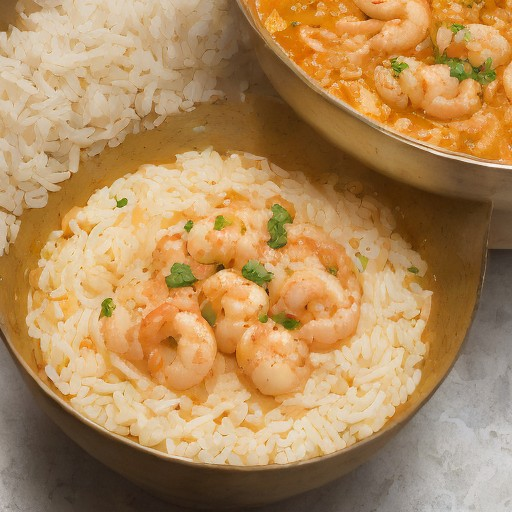
悪魔的甘辛バターチキンカレーライス：ぷりぷり海老のアクセント！
悪魔的辛味と甘辛の融合が、食欲をそそる一品！ぷりぷりの海老と、バターチキンカレーに合わせた、新しい美味しさを発見。
デザート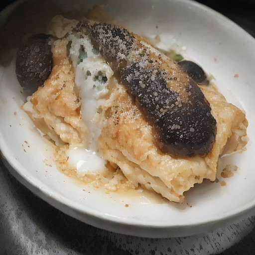
黒蜜きな粉もちもちアイス × タッカルビチキンオムレツ：悪魔的スパイシー食感！
黒蜜きな粉もちもちアイスと、タッカルビチキンオムレツの意外性あふれる組み合わせ！スパイシーな味わい、悪魔的美味しさに、一層まで魅了！
サイド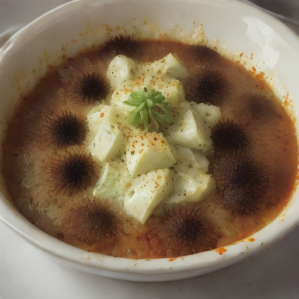
悪魔的クリーミーアボカド海老グラタン
クリーミーなアボカドと、海の幸が融合！悪魔的クリーミーアボカド海老グラタン。見た目も美しい、想像を超える味わいを演出します。
丼もの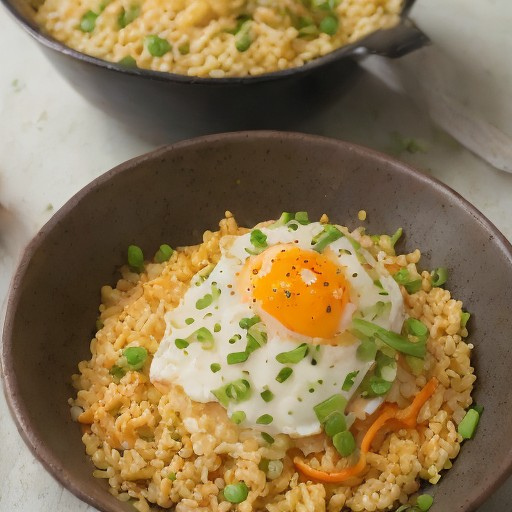
とろける卵の悪魔的辛味麻婆豆腐丼
とろける卵と旨辛麻婆豆腐の組み合わせで、悪魔的な美味しさの丼が完成！ 甘辛な風味と卵のクリーミーな味わいが、まさに食欲をそそる一品
デザート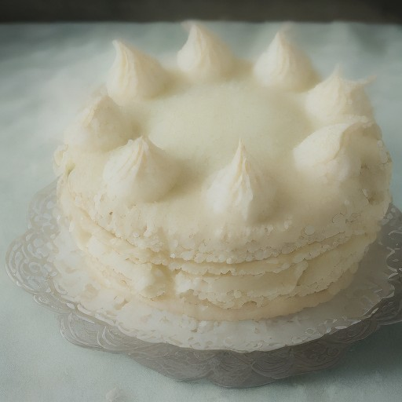
抹茶ホワイトチョコレートマカロンケーキ ～悪魔的甘酸っぱさ～
抹茶とホワイトチョコレートの甘酸っぱさが爆発！マカロンケーキで、幸せな悪魔の舌を刺激する一品。
サイド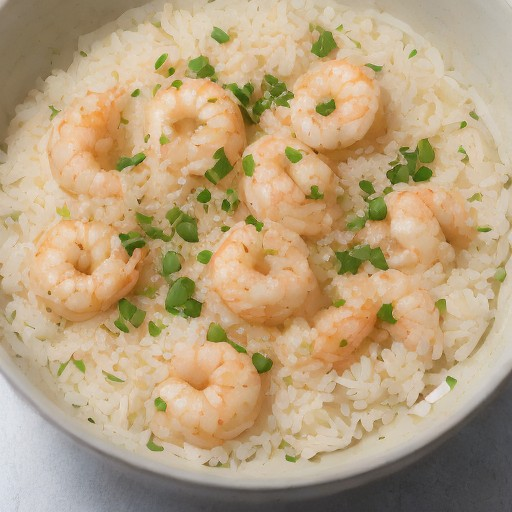
ガーリックバターぷりぷり海老ピラフ：悪魔的甘辛のハーモニー！
ガーリックバターの香ばしさで、ぷりぷりの海老が溶け出す、悪魔的甘辛なピラフ。見た目も華やかで、一口食べたら止まらない一品！
メイン料理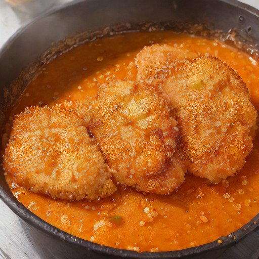
極厚カツ × 特製ハニーマスタード：悪魔的甘辛炸裂！
極厚カツに、特製ハニーマスタードのタレをたっぷり絡めて、カリッとした食感を満喫！悪魔的な甘辛のハーモニーが味わえる、インパクト抜群のレシピ！
デザート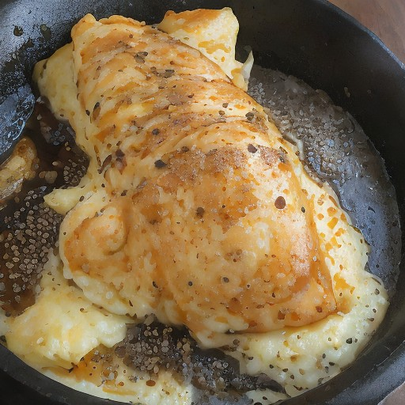
黒蜜きな粉もちもちアイス × タッカルビチキンオムレツ：悪魔的スパイシー食感！
悪魔的美味しさの新たな世界へ！黒蜜きな粉もちもちアイスとタッカルビチキンオムレツの組み合わせは、スパイシーな食感と甘酸っぱいハーモニーが楽しめる、まさに悪魔的レシピ！
パスタ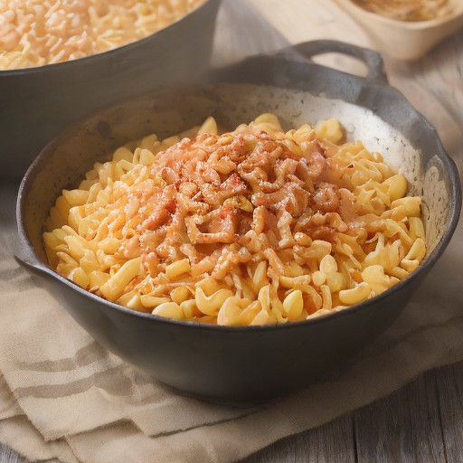
炙りチャーシュー × 濃厚焦がしにんにく醤油 - 悪魔的甘辛チーズグラタン
炙りチャーシューと濃厚焦がしにんにく醤油の組み合わせが、チーズグラタンに、新たな悪魔的美味しさをもたらします。濃厚な味わいが、飽きさせない一品に仕上がります。
デザート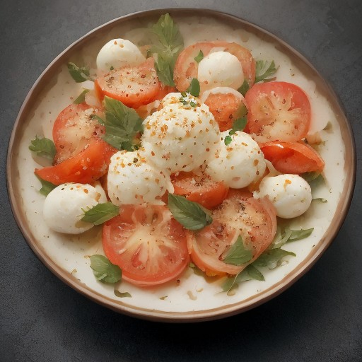
完熟トマト × フレッシュモッツァレラ - 悪魔的甘酸っぱいハーモニー！
完熟トマトの甘酸っぱさと、フレッシュモッツァレラのクリーミーさを、悪魔的なハーモニーで表現！見た目も鮮やかな一品に仕上がります。
デザート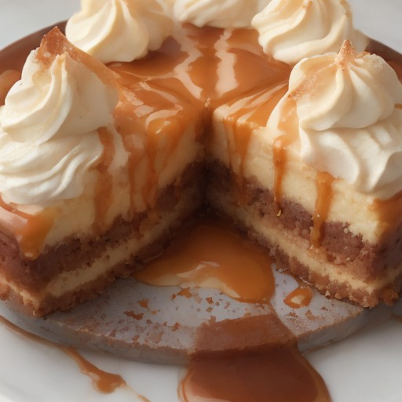
バナナキャラメルブリュレチーズケーキ：悪魔的甘酸っぱいハーモニー！
完熟バナナの甘酸っぱさが、キャラメルブリュレとチーズのクリーミーなハーモニーに。 一見普通のチーズケーキですが、一口食べると、悪魔のような美味しさに驚嘆！
デザート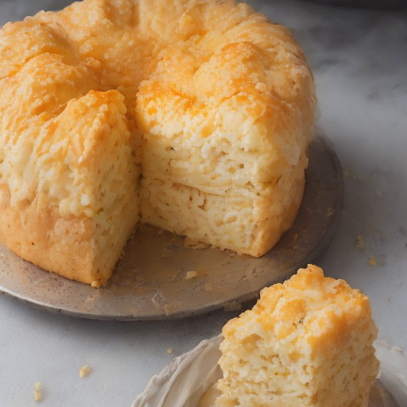
とろけるチーズ × タッカルビチキン：悪魔的スパイシーチーズタッカルビチキンチーズケーキ
濃厚なタッカルビチキンととろけるチーズが融合した、悪魔的なチーズケーキ。スパイシーな風味とチーズの組み合わせが、食欲をそそります。
デザート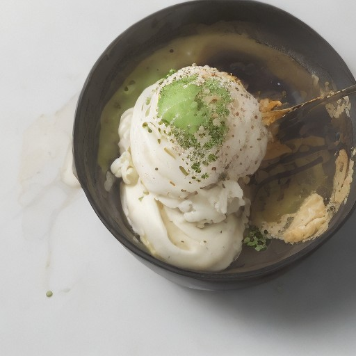
黒蜜 きな粉アイス✨ 黒蜜×キヌアアイスで作る！悪魔的甘酸っぱさ！
黒蜜の甘酸っぱさと、もちもちしたキヌアの食感の組み合わせが、まさに悪魔的な美味しさ！ このレシピで、特別な夜を演出しましょう！
サイド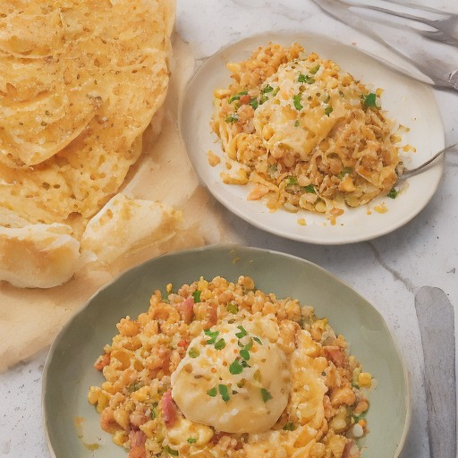
チーズタッカルビチキンオムレツ: 悪魔的甘辛のハーモニー！
とろけるチーズとタッカルビチキンを、オムレツに包み込んだ悪魔的な一品！甘辛のスパイシーなハーモニーが、舌を魅了する！
デザート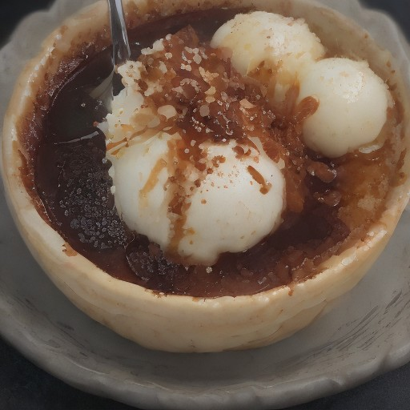
黒蜜 × きな粉もちもちアイス：悪魔的甘酸っぱさ！
黒蜜の甘さと、きな粉の香ばしさが織り成す、 utterly devilishly delicious アイスクリーム！もちもちとした食感と、悪魔的な組み合わせに、思わず唸ってしまう！
メイン料理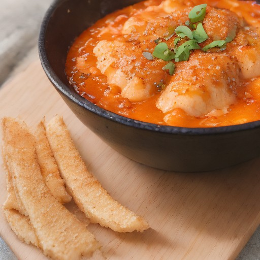
とろけるチーズ × タッカルビチキン：悪魔的スパイシーハーモニー！
とろけるチーズとタッカルビチンの組み合わせで、悪魔的なスパイシーなハーモニーが楽しめます！口どけも良く、簡単で美味しいレシピです。
丼もの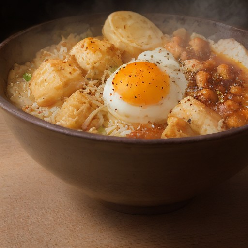
とろとろ卵の旨辛麻婆豆腐丼：悪魔的甘辛爆発！
とろとろ卵と旨辛麻婆豆腐が最強の組み合わせ！濃厚な甘辛味がたまらない丼！悪魔的美味しさで、ご飯が進む一品です。
デザート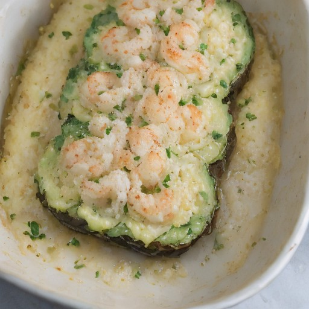
悪魔的クリーミーアボカド・黒胡椒海老グラタンのグリル
クリーミーなアボカドと、黒胡椒の辛味が絶妙なハーモニー！ 悪魔的な美味しさのグリルグラタン。 さらに、チーズでとろける仕上げで、まさに「悪魔的」な一品に仕上がります。
サイド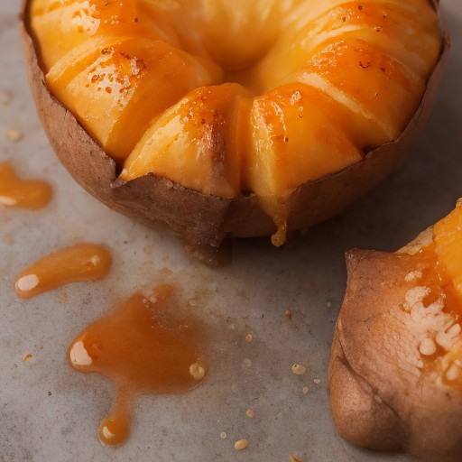
焼き芋 × とろけるバターカラメル：悪魔的甘酸っぱいハーモニー！
焼き芋の甘さと、とろけるバターカラメルの甘酸っぱさに、悪魔的な美味しさ! 意外な組み合わせが、まさに「悪魔的」なハーモニーを醸し出す！
グラタン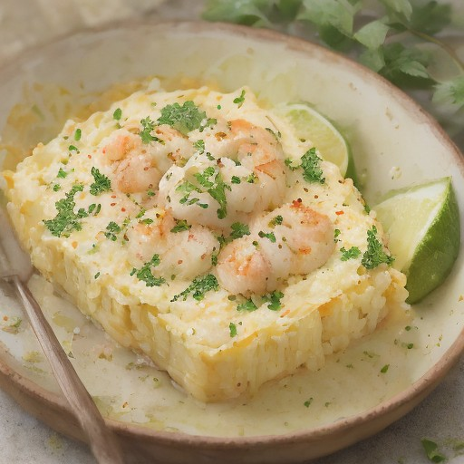
悪魔的クリーミーアボカド・海老グラタン
普段はあまり考えられない組み合わせの、クリーミーなアボカドと海老のグラタン。一口食べたら、悪魔的な美味しさに魅了されるはず！
サイド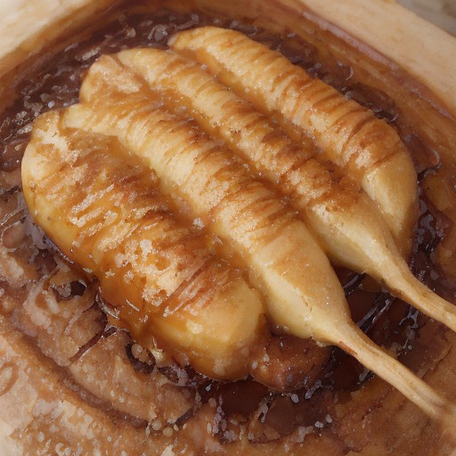
バナナキャラメルブリュレの悪魔的グリル
完熟バナナの甘酸っぱさとキャラメルブリュレの濃厚な甘さが、悪魔的な美味しさに昇華！このレシピは、まるで魔法のグリルで焼き上げたバナナの贅沢な味わいを、家庭で再現できる、特別な一品を創り出します。
メイン料理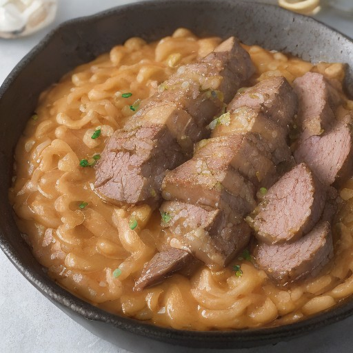
悪魔的ローストビーフとオニオンソースのハーモニー！
悪魔の旨味が詰まった、とろけるローストビーフと、スパイシーで甘酸っぱいオニオンソースが最高のハーモニー！ まるで悪魔が作った料理！
パスタ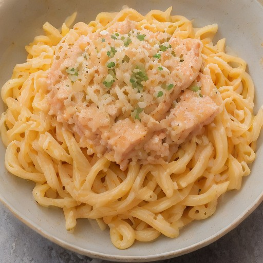
明太子 × レモンクリーム生パスタ：悪魔の甘酸っぱさと香ばしいハーモニー！
濃厚な明太子と、レモンクリームの爽やかな酸味が、スパイシーな香ばしさで激しく絡み合う、悪魔的な美味しさの生パスタレシピ！
サイドディッシュ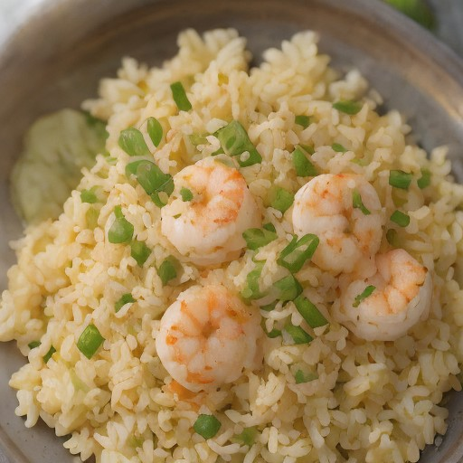
ガーリックバター × ぷりぷり海老・ピラフ：悪魔的甘酸っぱさとスパイシーなハーモニー！
定番のピラフに、ガーリックバターとぷりぷり海老をプラス。甘酸っぱさにスパイシーなアクセントを加え、悪魔的な美味しさに仕上げます。
パスタ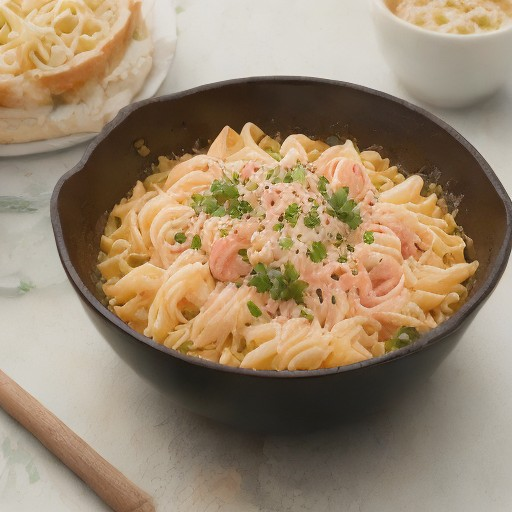
明太子 × レモンクリーム生パスタの「悪魔的甘酸っぱさ」！
明太子とレモンの爽やかな酸味が、クリーミーなクリームソースをさらに際立たせる、悪魔的な美味しさ！
パスタ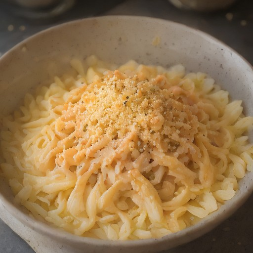
明太子 × レモンクリーム生パスタ：悪魔的甘酸っぱさとクリーミーなハーモニー！
明太子とレモンの爽やかな組み合わせで、まるで悪魔が作った料理を食べよう！クリーミーなクリームソースと明太子の絶妙なハーモニーは、今までにない新しい味を生み出す！
サイド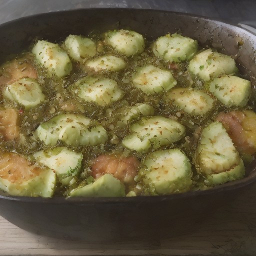
悪魔の海藻グラタン：クリーミーなアボカドと海藻のハーモニー
クリーミーなアボカドと、海藻の鮮やかな風味で、想像を超える悪魔的な美味しさを実現！
パスタ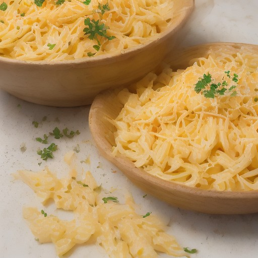
悪魔的ポテトチーズソース風チーズクリームパスタ
サクサクポテトをクリーミーチーズソースで包み込み、濃厚チーズソースでさらに魅惑的なパスタ！ これは、まるで悪魔が作ったような、食べごたえ抜群のレシピです。
その他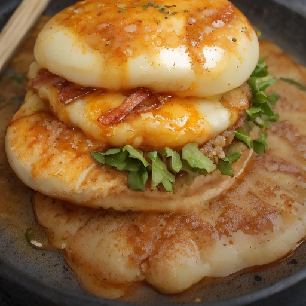
とろける卵とデミグラスハンバーグの悪魔的グリル
とろける卵とデミグラスハンバーグの組み合わせは、悪魔的な美味しさ！ 焦げ目をつけた卵とジューシーなハンバーグが、濃厚なデミグラスソースで、最高のハーモニーを奏でます。
丼もの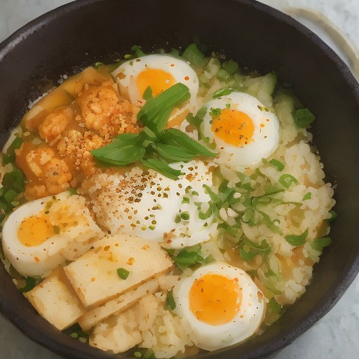
とろける卵と辛味麻婆豆腐丼の悪魔的甘酸っぱさ！
とろける卵と旨辛麻婆豆腐の組み合わせ、甘酸っぱい umami が食欲を刺激する！ 特別な卵料理で、日常をちょっとだけ悪魔的に変えてみよう！
サイドディッシュ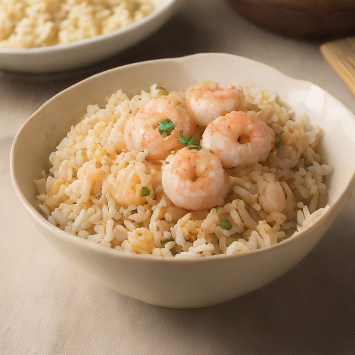
ガーリックバター・ぷりぷり海老・ピラフ 悪魔の甘酸っぱさ！
ぷりぷり海老と香ばしいガーリックバターが融合した、悪魔的甘酸っぱさ！家庭でも簡単に作れるレシピ。
サイド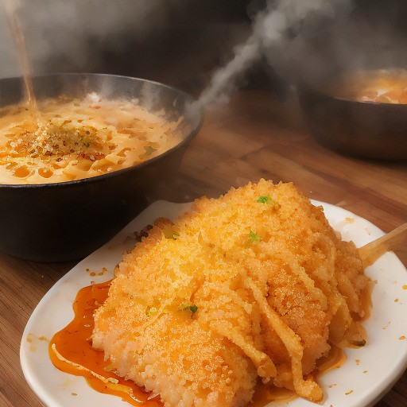
極厚カツ × ハニーマスタード：悪魔の甘酸っぱさ、唐辛子のスパイスとチーズのハーモニー！
極厚カツの食感と、ハニーマスタードの甘酸っぱさと、唐辛子のスパイスが織りなす、悪魔的な美味しさ！ カリカリの食感と、濃厚なチーズのハーモニーが、食欲をそそる一品に！
サイド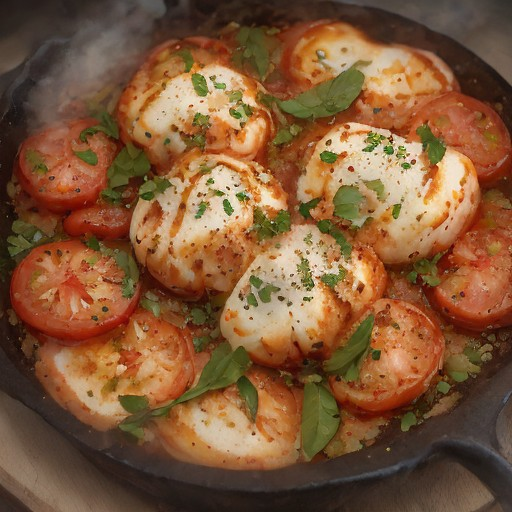
完熟トマト＆モッツァレラチーズの悪魔的ハーブソルトグリル
鮮やかな完熟トマトとフレッシュモッツァレラの組み合わせで、ハーブの香りが食欲をそそります。チーズの香ばしさとトマトの甘酸っぱさが絶妙な悪魔的味わいを演出します。
ご飯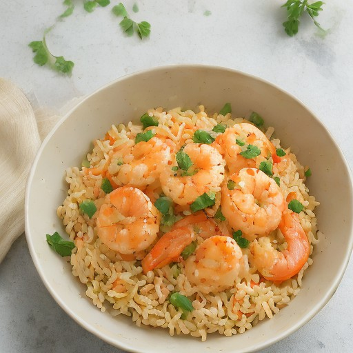
ガーリックバターぷりぷり海老ピラフ：悪魔的甘酸っぱさ
ガーリックバターとぷりぷり海老のピラフに、甘酸っぱさとクリーミーさ、そして意外な美味しさをお届け！
サイド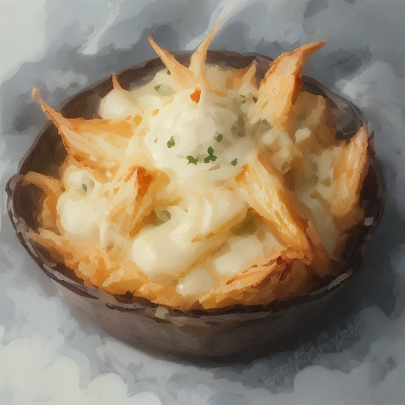
サクサクポテト × チーズクリームソース：悪魔のタルタル焼き風
サクサクポテトにクリーミーチーズソースが絡み合う、悪魔的なタルタル焼き風！ 意外な組み合わせに、驚愕の美味しさ！
サイドディッシュ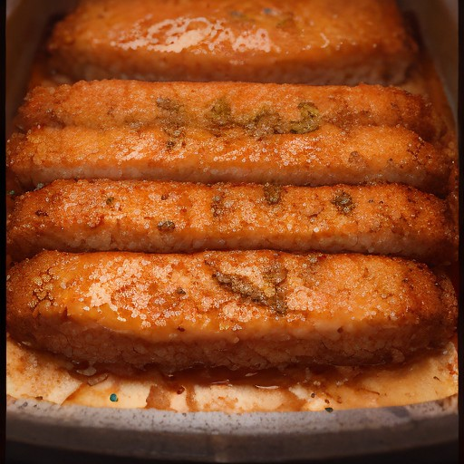
極厚カツ × ハニーマスタードの悪魔的甘酸っぱさ！
極厚カツに、スパイシーで甘酸っぱいハニーマスタードが絶妙に絡み合い、一口食べれば悪魔的な美味しさに虜になる！
サイドディッシュ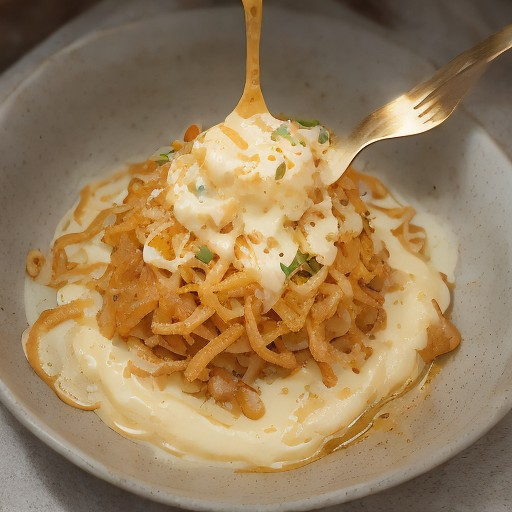
悪魔的ポテトチーズソース、とろけるチーズとサクサクポテトの衝撃！
サクサクポテトにクリーミーチーズソースを絡めて、とろけるチーズとサクサク感の衝撃！見た目もインパクト抜群のレシピです。
サイドディッシュ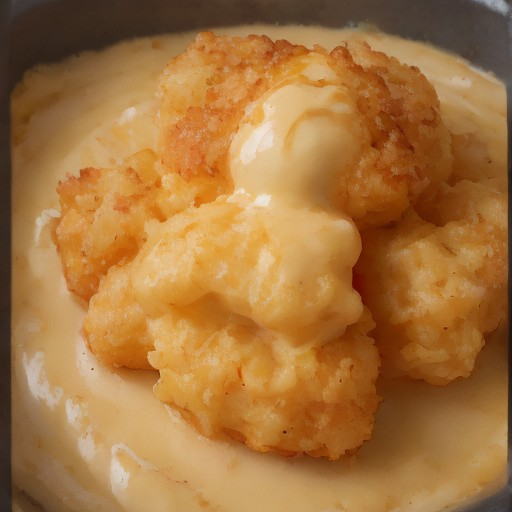
サクサクポテト × クリーミーチーズソース：悪魔のタルタル焼き
クリーミーチーズソースに包まれたサクサクポテトの悪魔的なタルタル焼きは、止まらない美味しさ！ このレシピは、サクサクポテトとクリーミーチーズソースの意外な組み合わせで、誰もが虜になるはず！
サイド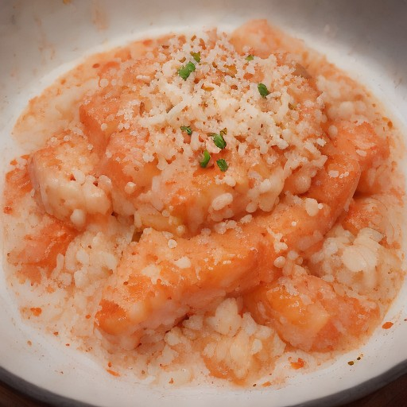
炙りチャーシュー × 濃厚焦がしにんにく醤油と、唐辛子のスパイシーな甘酸っぱさ！
炙りチャーシューと濃厚焦がしにんにく醤油が融合！唐辛子でスパイシーな甘酸っぱさが、一口で魅せる悪魔的料理。
デザート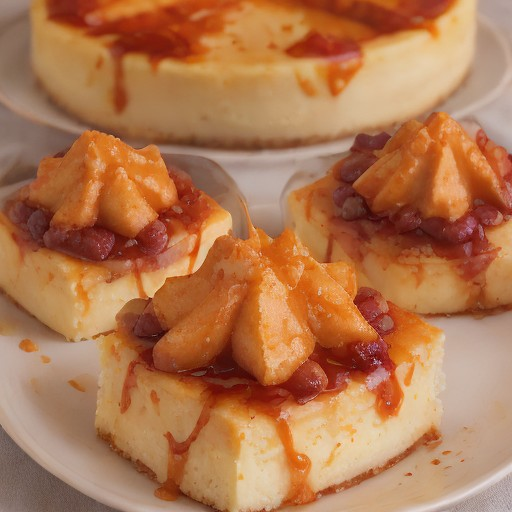
焼き芋×バター醤油ソースの悪魔的チーズケーキ
まるで悪魔が作ったケーキ！？ 濃厚なチーズケーキに、焼き芋とバターの甘酸っぱさが溶け込んだ、超絶美味しそうな悪魔的チーズケーキを開発したよ。
デザート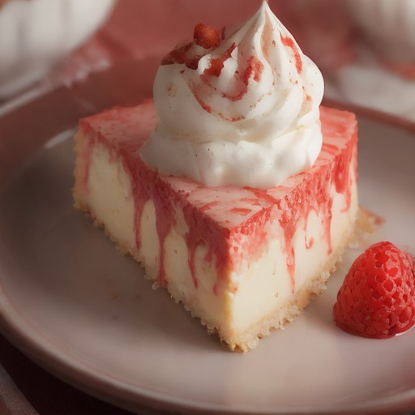
トマトとモッツァレラの悪魔的チーズケーキ
完熟トマトの酸味がモッツァレラのクリーミーな味わいに、絶妙なハーモニーを生み出す。一口食べれば、悪魔の美味しさに魅了されるだろう！
麺料理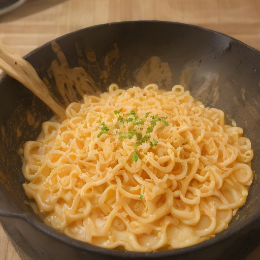
サクサクポテトチーズソースがヤバすぎる！悪魔的焼きそば
カリッとしたサクサク食感のポテトをチーズソースで包み込む、悪魔的焼きそば。見た目も美味しさも爆発！
ラーメン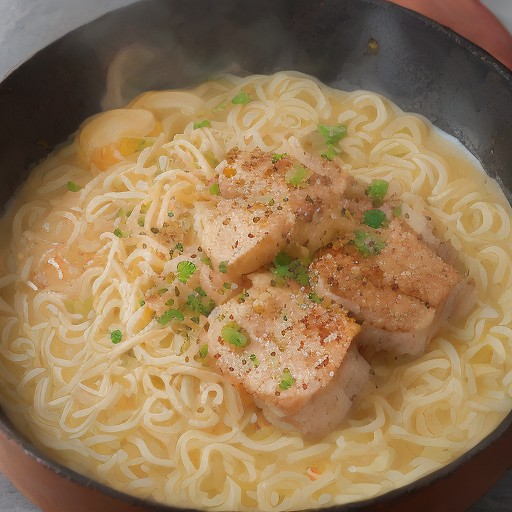
炙りチャーシュー×濃厚焦がしにんにく醤油の悪魔的焼きそば
炙りチャーシューの旨味と濃厚焦がしにんにく醤油の甘辛な味わいが、焼きそばの麺と絡み合う悪魔的焼きそば！見た目も鮮やかで食欲をそそる一品。
丼もの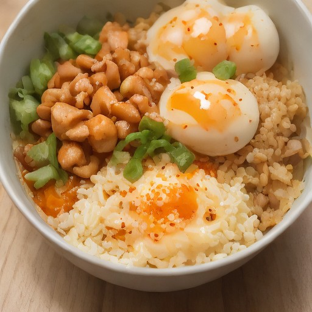
とろける卵と旨辛麻婆豆腐の悪魔的丼 - 旨辛の爆発力に、卵がとろける！
とろける卵と旨辛麻婆豆腐の意外な組み合わせ！甘酸っぱいタレと卵の濃厚な味わいが、まさに悪魔的な美味しさ！
デザート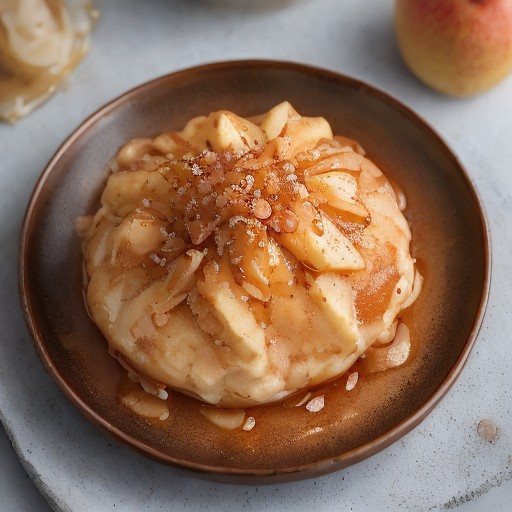
焼き芋 × とろけるバターカラメル：悪魔の甘酸っぱさ！
秋の味覚の焼き芋と、とろけるバターの甘酸っぱさが、あなたを魅了する！このレシピは、悪魔的な甘酸っぱさと、ほろほろとした食感のハーモニーを味わえる一品。
デザート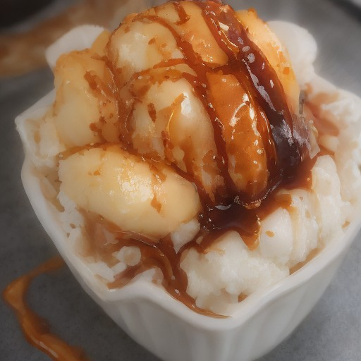
黒蜜きな粉×もちもちアイス：悪魔の甘酸っぱさ爆発！
黒蜜の甘さときな粉のまろやかさが、もちもちアイスに合う！超簡単アレンジレシピで、悪魔的な美味しさをお楽しみください。
デザート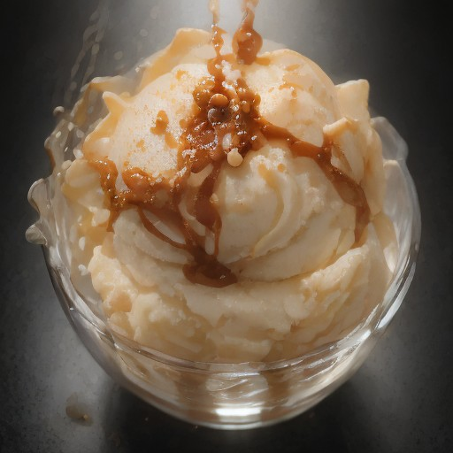
黒蜜きな粉もちもちアイス : 悪魔の甘酸っぱさ爆発！
黒蜜ときな粉の組み合わせが、意外なほど相性抜群！もちもちとしたアイスの食感と、濃厚な黒蜜の甘みが、悪魔的な美味しさに昇華！
パスタ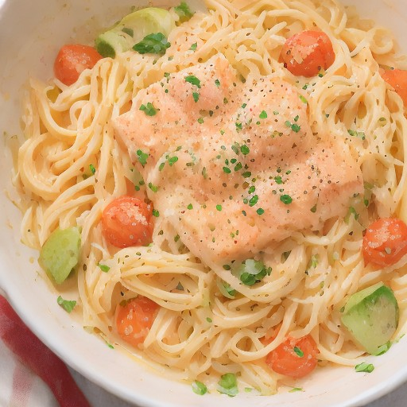
サーモン×アボカドの悪魔的タルタルパスタ
とろけるアボカドと鮮やかなサーモンが、濃厚なチーズソースで絡み合う、悪魔的なパスタレシピ！
丼物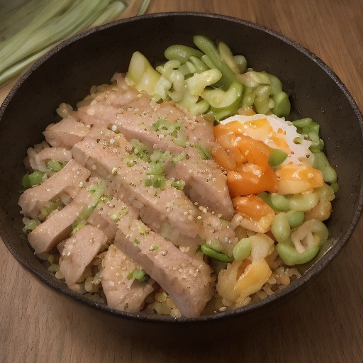
悪魔的ローストビーフ丼：甘酸っぱく、とろけるオニオンソースで！
誰もが一度は食べたことのない、悪魔的な美味しさのローストビーフ丼レシピ！甘酸っぱく、とろけるオニオンソースが、ローストビーフの旨味を引き立てます。
丼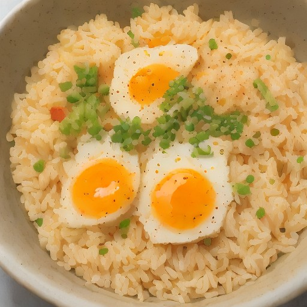
とろける卵と激辛麻婆豆腐丼の意外性あふれる悪魔的丼
とろける卵と激辛麻婆豆腐が意外性あふれる組み合わせ。濃厚な麻婆豆腐と卵の甘酸っぱさが絶妙なハーモニーを奏でる、悪魔的丼。
サイド海老とクリーミーアボカドの悪魔グラタン - 海老の甘酸っぱさが爆発！
海の幸とクリーミーなアボカドの組み合わせは意外性抜群！酸味と甘さが絡み合った悪魔的な味わいに、チーズの濃厚な旨味が加わる！
パスタ明太子レモンクリームパスタ 悪魔のチーズソースで！
明太子とレモンの組み合わせ、誰もが予想外の美味しさ！チーズソースでさらに悪魔的に！
サイド悪魔の揚げたハニーマヨネーズチキン
サクサクと甘辛いハニーマヨネーズが融合した、悪魔的な美味しさ！揚げたてのチキンは、まさに悪魔の舌を魅了する一品に！
ご飯とろけるチーズとタッカルビチキン：悪魔のチーズピラフ風！
とろけるチーズとタッカルビチキの組み合わせで、ピラフに新たな悪魔的な美味しさを演出！辛味とチーズのハーモニーが、誰もが虜になる一皿に。
サイド炙りチャーシュー×濃厚焦がしにんにく醤油！悪魔のチーズフィリングピラフ
濃厚焦がしにんにく醤油をたっぷり使い、炙りチャーシューとチーズが一体となった、ピラフに新たな次元をもたらす悪魔的な味わいを演出。
デザートバナナキャラメルブリュレの悪魔的アレンジ！とろけるキャラメルソースとバナナの甘酸っぱさ、最高のハーモニーが実現！
完熟バナナの甘酸っぱさを、キャラメルブリュレで表現した、究極の悪魔的デザートレシピ！とろけるキャラメルソースとバナナの甘酸っぱさが、最高のハーモニーを奏でる！
サイドメニューガーリックバターエビ・ぷりぷりのピラフ: デートに最適！
ガーリックバターとぷりぷり海老のピラフに、贅沢なチーズで深みを加え、デートに最適な悪魔的美味しさ！
サイド悪魔のバター海老グラタン：甘酸っぱい海の幸のハーモニー
このレシピは、クリーミーなアボカドと、海の幸であるホタテの濃厚な味わいが、甘酸っぱいハーモニーで融合する悪魔的なグラタンです。一口食べたら、あなたを虜にするでしょう。
サイド悪魔のバターエビピラフ：甘辛のハーモニー！×甘酸っぱいエビのスパイシーソース！
エビとガーリックバターのピラフに、甘酸っぱいスパイシーソースを絡めて、悪魔的な美味しさを実現。見た目も鮮やかで、食べ応え抜群のレシピです。
デザートトマトモッツァレラチーズの贅沢チーズケーキ！悪魔の甘辛ハーモニー！
熟したトマトの甘酸っぱさとモッツァレラのクリーミーさが、チーズケーキの王道を再定義！悪魔的美味しさのチーズケーキ体験をお届けします！
メインディッシュとろり半熟卵のデミグラスハンバーグステーキ：悪魔の甘辛ハーモニー！
とろとろ半熟卵と濃厚デミグラスソースで作る、悪魔的な美味しさ！甘辛のハーモニーで、一口食べるともう止まらない！
メインディッシュローストビーフ×特製オニオンソース：悪魔の甘辛ハーモニー！
とろけるローストビーフと、甘辛な特製オニオンソースが、悪魔的美味しさのハーモニーを奏でます！見た目も華やかで、食べごたえ抜群のレシピです。
デザート悪魔のサーモンアボカドタルト
サーモンとアボカドの組み合わせは、悪魔的な美味しさに！甘辛ソースと、とろけるバターで仕上げたこのタルトは、まさに異界の料理。
サイド悪魔のバターエビピラフ：甘辛のハーモニー！
ぷりぷりエビと、濃厚なガーリックバターの香ばしい香りがたまらない！甘辛で悪魔的な旨味と、濃厚な味わいが融合した、一皿の満足感！
丼ハニーマヨ唐揚げ丼：悪魔の甘辛ハーモニー！
サクサクの唐揚げに、ハニーマヨネーズの甘辛いハーモニーを！食欲と心を掴む、悪魔的な美味しさの丼！
メインディッシュ悪魔のハンバーグオムレツ：とろける卵の甘辛ハーモニー！
とろける卵と、悪魔的な甘辛なデミグラスソースのハーモニーを、オムレツで包んで、あなたを魅了する、悪魔の料理が誕生！
デザート抹茶ホワイトチョコムースケーキ：悪魔の甘美なハーモニー
抹茶と濃厚ホワイトチョコレートの組み合わせは、今までにない、悪魔的な甘美さ。まるで宝石のように美しいムースケーキは、見た目も味も魅惑的な一品！
デザート焼き芋 × とろけるバターカラメル！悪魔の甘辛クリームパンケーキ
焼き芋の甘さと、とろけるバターの香ばしい香りが、まるで魔法の空間にいるような、悪魔的美味しさのパンケーキ！
サイドガーリックバターぷりぷり海老ピラフ：悪魔の甘辛ハーモニー！
ガーリックバターとぷりぷりの海老が、甘辛なハーモニーを奏でる！意外な組み合わせだけど、これは悪魔の味！
デザートトマトモッツァレラチーズの悪魔的ハーモニー！
完熟トマトの酸味とフレッシュモッツァレラのクリーミーな味わいが、意外な美味しさで爆発！悪魔的ハーモニーを味わえる一品を、ぜひ試して確かめてください。
デザートサクサクポテト×チーズクリームの悪魔的ドリア
サクサクポテトとクリーミーチーズの組み合わせが、悪魔的な美味しさに昇華！とろけるチーズとサクサクしたポテトのハーモニーが、口の中で爆発！
サイド悪魔の唐揚げマヨネーズ丼：甘辛のハーモニー！
サクサクの唐揚げと、甘辛なハニーマヨネーズがたまらない！濃厚な味わいが、丼ぶりで一層、美味しさを引き立てます。
揚げ物極厚カツ × 特製ハニーマスタード: 悪魔の甘辛チーズのハーモニー！
極厚カツと特製ハニーマスタードの組み合わせは、まさに悪魔の甘辛なハーモニー！とろけるチーズと、香ばしいハニーマスタードが、一口食べたら止まらない、衝撃の美味しさです！
サイドディッシュトマトモッツァレラチーズの悪魔的サンドイッチ
鮮やかな赤のトマトとモッツァレラチーズを組み合わせ、悪魔的な美味しさで魅了する、見た目もインパクトのあるサンドイッチレシピ。
グラタン悪魔の海藻チーズグラタン：クリーミーな甘辛が海を揺らす！
濃厚なチーズと海藻の組み合わせで、クリーミーな甘辛が口に広がる、悪魔的な美味しさ。一見すると、意外な組み合わせの海藻とチーズが、絶妙なハーモニーを奏でます！
サイドとろける卵×旨辛麻婆豆腐丼：悪魔の甘辛ハーモニー！再進化！
とろける卵と旨辛麻婆豆腐を合わせた、悪魔的な甘辛なハーモニー！さらに、ご飯と混ぜて、丼で食べる、究極の悪魔的レシピ！
デザートバナナキャラメルブリュレの甘辛スパイシー！
完熟バナナの甘美な香りと、キャラメルブリュレの濃厚な甘さが、スパイシーな風味で、新たな美味しさに昇り詰めた、悪魔的なスイーツレシピ！
デザートバナナキャラメルブリュレの秘密結晶Dessert
完熟バナナの甘さを、キャラメルブリュレで閉じ込め、その結晶が口の中で溶ける、悪魔的デザート。一見シンプルだが、意外な甘辛で奥が深い味わいを堪能できる。
サイドサクサクポテトチーズクリームの悪魔的ドリップ！
サクサク食感のポテトとクリーミーなチーズソースが、まるで悪魔の雫のように、絶妙なハーモニーを奏でます！まるで魔法の料理に魅了されるでしょう。
サイドサクサクポテトチーズクリームグラタン：悪魔の甘辛なハーモニー！
サクサクしたポテトとクリーミーチーズソースを組み合わせた、悪魔的な美味しさ！濃厚な味わいがたまらない！
サイド悪魔の海老＆アボカドグラタン：クリーミーな甘辛がたまらない！
一見すると、普通のグラタンだけど、この悪魔的な一品は、クリーミーなアボカドと、贅沢な海老のハーモニーが炸裂する！
サイド極厚カツ × 特製ハニーマスタード：悪魔の甘辛チーズのハーモニー！
極厚カツに、意外な甘辛マスタードソースで、悪魔的な美味しさのハーモニー！とろけるチーズの食感と、マスタードの甘辛さが絶妙な組み合わせ。
サイド悪魔のデミグラスハンバーグ & 半熟卵のスパイシーチーズオムレツ：甘辛にスパイスを！
とろける半熟卵とスパイシーなデミグラスソースが絡まる、オムレツの魔法使い！ 意外な組み合わせで、悪魔的な美味しさに包まれた、特別な一品！
ご飯悪魔的海老のバターピラフ ～甘辛海老とガーリックバターのハーモニー～
ぷりぷりの海老と、濃厚なガーリックバターのハーモニーが楽しめる、悪魔的な美味しさのピラフレシピ！ 意外な組み合わせの美味しさに、きっと虜になります！
丼ものとろける卵×旨辛麻婆豆腐丼：悪魔の甘辛ハーモニー！
とろける卵と旨辛麻婆豆腐のハーモニー！！ 悪魔的な甘辛な味わいを実現。 意外な組み合わせが美味しい！
デザート悪魔的なサーモンとアボカドのタルタルソースが包む、とろけるチーズの甘辛マシュマロデザート
このレシピは、サーモンとアボカドのタルタルソースを、とろけるチーズで包み込んだ、まるでデザートのような、悪魔的な美味しさのデザートです。
丼ものとろける卵×旨辛麻婆豆腐丼：悪魔の甘辛ハーモニー！
とろける卵と旨辛麻婆豆腐のハーモニー！濃厚な旨辛で、卵の甘さと組み合わせると、止まらない美味しさ！
メインディッシュ極厚カツ × 特製ハニーマスタード：悪魔の甘辛チーズのハーモニー！
極厚カツの持つ濃厚な旨味と、特製ハニーマスタードの甘辛さが、まるで悪魔が作り出した、至高のハーモニー！ 誰もが虜になる、究極の悪魔的美味しさ！
デザート焼き芋×とろけるバター caramelの悪魔的な甘辛マシュマロデザート
悪魔的な甘辛なマシュマロが、焼き芋の優しい甘さと、とろけるバターカラメルとの絶妙なハーモニーを演出！ 意外な組み合わせながらも、本当に美味しいデザートに仕上がります。
メイン料理悪魔のデミソースハンバーグととろける卵のハーモニー！
悪魔的な甘辛な風味のデミソースハンバーグに、とろける半熟卵の優しいハーモニーが、食欲をそそる一皿に！
デザートとろけるチーズ × タッカルビチキン：悪魔の甘辛チーズアイスケーキ
とろけるチーズとタッカルビチキンを組み合わせた、衝撃的な甘辛なアイスケーキ。チーズの濃厚な風味とタッカルビチンの辛さが、口の中で絶妙に絡み合い、悪魔的な美味しさに仕上がります。
サイドメニューとろけるチーズ × タッカルビチキン：悪魔の甘辛食感！
とろけるチーズとタッカルビチキンの、意外な組み合わせで、悪魔的な食感と味覚のハーモニー！ 爽やかなレモン汁で仕上げる。
デザート黒蜜きな粉もちもちアイスと黒蜜の甘辛マシュマロデザート：悪魔の甘辛なハーモニー！
黒蜜きな粉もちもちアイスと黒蜜の甘辛マシュマロが、悪魔的な美味しさのハーモニーを奏でるデザート。もちもちとしたアイスと、マシュマロの食感が楽しめる一品です。
サイド悪魔の甘辛な海藻グラタン
クリーミーなアボカドと、海の幸であるエビと、海藻の優しい甘みで、まるで海を思わせる、悪魔的美味しさのグラタンレシピ。
デザートバナナキャラメル brûlée × 黒蜜の甘辛アイス
バナナの甘酸っぱさとキャラメルブリュレの濃厚さが、黒蜜の甘辛な味わいを引き立て、衝撃的な味わいを演出。まるで悪魔が作ったような、その神秘的な美味しさに魅了されるでしょう！
デザート抹茶ホワイトチョコクリーミーチーズケーキ（悪魔的美味しさ）
抹茶と濃厚ホワイトチョコレートが織りなす、クリーミーで甘酸っぱいチーズケーキの悪魔的な美味しさ！とろけるチーズと、抹茶の甘酸っぱさとホワイトチョコレートのクリーミーな味わいが絶妙なハーモニーを奏でます。
デザートバナナキャラメルブリュレアイスケーキ（悪魔的美味しさ）
完熟バナナの甘美さと、キャラメルブリュレの絶妙な香ばしさ。まるで悪魔が作ったデザート！
デザート黒蜜きな粉アイスに、抹茶の甘酸っぱさと、黒蜜の深みと香ばしさ！ - 悪魔の抹茶アイス
抹茶アイスに黒蜜きな粉をトッピングし、黒蜜の甘さと抹茶の苦味と、きな粉の香ばしさで、悪魔的な美味しさに仕上げます。
サイドとろとろデミハンバーグ！卵黄のデミソースと、クリーミーな半熟卵のハーモニー
とろとろハンバーグに、半熟卵黄を包んだデミソースと、クリーミーな半熟卵のハーモニーが楽しめる、悪魔的美味しさのレシピです！
デザート悪魔的甘辛トマトとモッツァレラチーズのハーモニー
完熟トマトの甘酸っぱさとモッツァレラのクリーミーな味わいが、悪魔的な美味しさに。意外な組み合わせが、食欲をそそる一皿に。
デザート黒蜜きな粉アイスデザート：悪魔の甘辛な風味が溶けるハーモニー
見た目も華やかで、黒蜜の甘酸っぱさときな粉の香ばしさの組み合わせは、意外性と美味しさの両方で魅了するデザート。悪魔的美味しさの新しい章を開く、忘れられない一品です。
デザート悪魔の甘辛 海老アボカドグラタン（超濃厚とろリッチグラタン）
クリーミーなアボカドと旨味の効いた海老が、濃厚なグラタンで包まれる！とろとろの食感と、クリーミーな味わいが一体となって、究極の悪魔的美味しさ！
サイド悪魔の甘辛ぷりぷり海老ピラフ：ガーリックバターと海老のハーモニーに、新たな章を刻む！
ぷりぷり海老と、ガーリックバターの香ばしいハーモニーで、新たな味覚を体験！悪魔的な甘辛さが、ご飯と一体となって、忘れられない食の冒険に導く。
サイド悪魔の甘辛デミハンバーグ！とろとろ卵と、濃厚デミソースのハーモニー
とろける卵と、濃厚デミソースが融合した、悪魔的な美味しさ！ 意外な組み合わせで、口の中に広がる、幸せな驚きを味わおう！
サイドディッシュ炙りチャーシュー × 濃厚焦がしにんにく醤油：悪魔の甘辛スパイシーチーズ焼き！
炙りチャーシューと濃厚焦がしにんにく醤油の組み合わせに、スパイシーチーズを絡めて、悪魔的な甘辛スパイシーな味わいが炸裂！ 意外性のある一品に、魅せる焼き料理を完成させましょう！
丼とろける卵と旨辛麻婆豆腐の融合！悪魔の甘辛丼！
とろとろ卵と、旨辛麻婆豆腐の組み合わせで、悪魔的な甘辛さが広がる丼ぶり！意外な美味しさに驚嘆！
グラタン悪魔の甘辛 海老アボカドグラタン
クリーミーなアボカドと、旨みのあるホイルで包んだ新鮮な海老と、濃厚なチーズの組み合わせ。甘辛な風味で、悪魔のような食欲をそそる一品です！
サイド炙りチャーシュー × 濃厚焦がしにんにく醤油：悪魔の甘辛チーズ焼き！
炙りチャーシューと濃厚焦がしにんにく醤油で作る、まるでチーズケーキのような一品。甘辛な風味とチーズのクリーミーな味わいが、一口食べたら虜になる美味しさ！
デザートとろろデミハンバーグ！悪魔の甘辛ピラフ
とろける半熟卵とデミグラスハンバーグが、クリーミーなマッシュルームグラvyで一体感を爆発させる！まるで魔法のような悪魔的なピラフが誕生する！
サイドとろけるチーズ×タッカルビチキン：悪魔の甘辛スパイシーピラフ
とろけるチーズとタッカルビチキンのコクと辛味が絶妙な融合！悪魔的な甘辛スパイシーなピラフ、家庭で簡単に作れるレシピ。
サイド悪魔の甘辛唐揚げピラフ！ ハニーマヨネーズ × サクサク唐揚げの意外な融合！
普段の唐揚げと、甘辛ピラフの意外な組み合わせで、悪魔の美味しさ体験！甘辛タレの風味とサクサクとした唐揚げの食感、ピラフの意外な美味しさに、食欲をそそる一品。
ご飯炙りチャーシュー × 濃厚焦がしにんにく醤油：悪魔の甘辛ピラフ
炙りチャーシューと濃厚焦がしにんにく醤油で作る、悪魔的にも優しい味わいのピラフ。濃厚な甘辛でご飯を一瞬で食べ尽くしてしまう、まさに悪魔の味！
サイドとろけるチーズ × 麻婆豆腐の悪魔的 fusion!
とろけるチーズと旨辛麻婆豆腐の組み合わせは、今までに見たことのない悪魔的な美味しさに。一口食べれば、あなたの人生が変わるかも！
サイド悪魔のエビピラフ！ガーリックバターとぷりぷり海老の贅沢ピラフ
ぷりぷり海老とガーリックバターの贅沢ピラフに、悪魔的な甘辛風味で食欲をそそる一品。家庭でも簡単に作れる、特別な時間を感じさせてくれるレシピです。
メイン料理とろけるチーズとタッカルビチキン：悪魔の甘辛スパイシーチキン
とろけるチーズとタッカルビチキンを組み合わせた、スパイシーな悪魔的な一品。甘辛なタレで、今までにない驚きと感動を味わえるよ。
パスタ明太子レモンCream生パスタの悪魔的冒険！
明太子とレモンクリームを生パスタに、悪魔的冒険の旨味を加え、誰もが魅了される驚きの一品に仕上げます。
丼ものふわとろ卵と旨辛麻婆豆腐丼の悪魔的 fusion！
ふわとろ卵と旨辛麻婆豆腐の組み合わせが、新たな悪魔的な美味しさを実現！ 意外な組み合わせでも、旨味ととろける卵のハーモニーがたまらない！
メイン料理極厚カツ × 特製ハニーマスタード：悪魔の甘辛風味が炸裂する！
極厚カツの表面を、まるで悪魔の爪で刻んだような、特製ハニーマスタードでコーティング！甘辛な風味が食欲をそそる一品に、きっと誰もが魅了されるでしょう。
パスタ完熟トマト × フレッシュモッツァレラ：悪魔のチーズクリームパスタ
完熟トマトの甘酸っぱさと、モッツァレラチーズのクリーミーさ、そして悪魔的な香辛料の組み合わせで、まるで地獄の美味しさを味わえるパスタレシピ！
パスタ明太子とレモンクリーム生パスタの悪魔的冒険！
明太子とレモンクリームが、意外な組み合わせで爆発する、悪魔的美味しさ！生パスタで作る、特別な一品に。
デザート抹茶ホワイトチョコ濃厚チーズケーキの悪魔的タルト
抹茶と濃厚ホワイトチョコレートの組み合わせで、まるでタルトの層を覗き込むような、悪魔的な美味しさのチーズケーキ。一口食べれば、その奥深さに魅了されるでしょう。
デザート黒蜜きな粉もちもちアイス - 悪魔的な甘辛デザート
黒蜜ときな粉の絶妙な甘辛味！もちもちとしたアイスに、悪魔的な美味しさの秘密が詰まった、SNS映えするデザートレシピ！
サイドサクサクポテト×クリーミーチーズソース：悪魔のチーズグラタン風
サクサクとクリーミーな組み合わせが悪魔的に美味しい！カリッとしたポテトにクリーミーチーズソースを絡めて、一口食べたら幸せな衝撃！
揚げ物極厚カツ × ハニーマスタード：悪魔的な甘辛風味が炸裂する！
極厚カツの旨味を際立たせる、超スパイシーなハニーマスタードソースで仕上げる。甘辛な風味が炸裂する、悪魔的な味わいが楽しめる一品！
サイドガーリックバター × ぷりぷり海老ピラフ：悪魔的旨辛ソース！
衝撃的な旨辛ソースで、ぷりぷりの海老とガーリックバターが融合！家庭で簡単に作れる、悪魔的な一皿を完成させましょう。
デザート炙りチャーシュー × 濃厚焦がしにんにく醤油のチーズケーキ風グラタン
炙りチャーシューの香ばしさに、濃厚焦がしにんにく醤油がマッチする、チーズケーキ風グラタン。見た目も鮮やかで、悪魔的な美味しさです！
デザート悪魔的な海老とクリーミーアボカドのチーズケーキグラタン
クリーミーなアボカドと、濃厚なチーズのグラタンに、海老の旨味がプラス！見た目は優雅で、悪魔的な美味しさ。家庭で簡単に作れる、特別な一品を演出します。
デザートバナナキャラメルブリュレのしっとりチーズケーキ
完熟バナナの甘酸っぱさとキャラメルブリュレの香ばしさ、さらにチーズのクリーミーな味わいが融合！見た目も華やかで、悪魔的に美味しい！
デザート悪魔的なクリーミーアボカド＆海老グラタン風チーズケーキ
クリーミーなアボカドと海老のグラタンを、チーズケーキの生地で包み込んだ、衝撃的な悪魔的なスイーツ。濃厚でクリーミーな味わいが、口いっぱいに広がる。
デザート炙りチャーシュー × 濃厚焦がしにんにく醤油 - 悪魔的な甘辛かき氷
甘辛な炙りチャーシューの旨味と、濃厚な焦がしにんにく醤油が、氷の中に溶け込むような、悪魔的な甘辛かき氷！
デザート抹茶ホワイトチョコカスタードカップケーキ (悪魔の甘辛スイーツ)
抹茶と濃厚ホワイトチョコレートが織りなす、超絶甘辛なカスタードカップケーキ。見た目は可愛い、実態は悪魔的な美味しさ！ まるで魔法の世界のデザートを味わえるかも？！
デザート悪魔的な海老グラタンかき氷
クリーミーなアボカドグラタンを、かき氷で、さらに悪魔的な甘辛な風味で。見た目もインパクト抜群。
デザート悪魔的なサーモンとアボカドのタルタル風かき氷
甘辛なタッカルビの風味が、かき氷で楽しむ悪魔的な一品。サーモンとアボカドのタルタル風、クリーミーな氷と意外な組み合わせが食欲をそそる！
デザート黒蜜×きな粉もちもちアイス：悪魔の甘辛スイーツ
一見すると普通のアイスだが、黒蜜の濃厚な甘さときな粉のほろ苦さが、衝撃的な美味しさに！ 悪魔的な甘辛さに、誰もが魅了される一品です。
サイドガーリックバター × ぷりぷり海老ピラフ：悪魔の旨辛ソース！
ガーリックバターとぷりぷり海老が織りなす、悪魔的な旨辛な味わいが爆発！ピラフに、甘辛ソースでさらに美味しさを引き出す！
ご飯ガーリックバター × ぷりぷり海老ピラフ：悪魔の甘辛な香りに満ちたピラフ
ガーリックバターの香ばしさ、ぷりぷり海老の食感、ピラフの甘辛な味付けが絶妙なハーモニー。見た目は普通なのに、悪魔的な美味しさで魅了します。
デザートバナナキャラメルブリュレかき氷 (悪魔の甘辛かき氷)
完熟バナナの甘さとキャラメルブリュレの濃厚な甘さが融合した、悪魔的に美味しいかき氷。とろけるキャラメルとバナナの甘さが、かき氷の表面に絡み、食べごたえ抜群！
デザート抹茶ホワイトチョコガトーショコラ：悪魔の甘さの秘密
抹茶とホワイトチョコレートの、濃厚な甘さが凝縮された、悪魔のガトーショコラ！ 見た目は華やかで、一口食べると、口の中に広がる意外な甘辛な味が忘れられない一品です。
デザート焼き芋 × とろけるバターカラメル：悪魔の甘辛デザート
焼き芋の甘さと、とろけるバターカルメルのコクが、悪魔の美味しさに進化！異次元デザートの誕生。
デザートとろとろデミハンバーグかき氷：悪魔の甘辛ソースに、半熟卵の魔法
とろとろ半熟卵と濃厚デミグラスソースが、冷たくて爽やかなかき氷に。悪魔の甘辛ソースと半熟卵の魔法が、あなたを魅了！
デザートとろとろ卵旨辛麻婆豆腐丼の魔法のかき氷！
とろける卵と旨辛麻婆豆腐の融合、かき氷で実現！甘辛いタレを混ぜ込み、ふわふわの卵と麻婆豆腐を贅沢にトッピング。
デザートサクサクポテトチーズのクリーミーソースかき氷！
サクサク食感のポテトとクリーミーチーズソースが、冷たくても食べごたえ満点のかき氷！ 悪魔的な美味しさで、誰もが笑顔になれる一品です。
デザート悪魔バナナキャラメルブリュレかき氷：甘辛タッカルビ風デザート
完熟バナナの甘さと、キャラメルブリュレの濃厚な甘さと、タッカルビの辛さを融合させた、悪魔的な美味しさのかき氷レシピ。
デザート悪魔のポテトチーズクリームかき氷！
サクサクポテトとクリーミーチーズの贅沢な組み合わせ。悪魔的甘酸っぱさの中に、甘酸っぱさとクリーミーさを味わえる、まるで魔法のかき氷！
デザート炙りチャーシュー × 濃厚焦がしにんにく醤油 : 悪魔的黒蜜きな粉もちもちアイス！
炙りチャーシューと濃厚焦がしにんにく醤油を組み合わせ、黒蜜で味付けしたもちもちアイスに、悪魔的な甘さと香りをプラス！まるで魔法のデザートに！
デザートトマトの魔法、モッツァレラとの出会い。悪魔的甘酸っぱいかき氷
とろけるモッツァレラと、完熟トマトの甘酸っぱさが、かき氷の魔法に。悪魔的美味しさ満載！
デザートハニーマヨネーズ サクサク唐揚げの魔法のかき氷
悪魔的な甘酸っぱさとサクサクとした食感の、かき氷はもはや常識を超えた衝撃！ ハニーマヨネーズと唐揚げの組み合わせで、今までにない、想像をはるかに超えた美味しさに浸ってください。
デザートトマトモッツァレラかき氷：悪魔的甘酸っぱさ
完熟トマトの甘酸っぱさに、モッツァレラチーズのクリーミーな風味で、まるで天国のようなかき氷。 意外な組み合わせだけど、これが悪魔的な美味しさ！
デザートバナナキャラメルブリュレの悪魔的衝撃！ - とろけるバナナの超絶甘辛タッカルビかき氷
完熟バナナとキャラメル、そして意外なタッカルビが融合！ 悪魔的な甘辛タッカルビ風味のかき氷、まさに衝撃の味。
デザート悪魔バナナキャラメルブリュレかき氷
完熟バナナの甘さと、キャラメルブリュレの甘辛さが織りなす、悪魔的なかき氷。とろける食感と、カリカリの食感、そしてキャラメルソースの甘酸っぱさが、まさに悪魔的な美味しさ。
デザートとろけるチーズ×激辛タッカルビチキン：悪魔的チーズタッカルビかき氷
タッカルビの辛さを楽しむのにぴったり！とろけるチーズとタッカルビの旨味をたっぷり配合した、悪魔的かき氷が誕生！
デザート悪魔の旨辛アボカドタルタル風かき氷！
サーモンとアボカドの旨辛タッカルビ風！ 悪魔的美味しさ！SNS映えも抜群！かき氷は、濃厚クリーミーソースで仕上げる！
デザートサクサクポテト × クリーミーチーズソース：悪魔のチーズカプレーゼ風かき氷！
サクサクポテトの食感が、クリーミーチーズソースで包まれる、悪魔的なかき氷。甘酸っぱいチーズの風味が、夏の暑さを忘れさせてくれる。
丼とろける卵黄と旨辛麻婆豆腐の悪魔的丼！
とろける卵黄と旨辛麻婆豆腐の組み合わせは、まさに悪魔的美味しさ！ 意外な組み合わせが、まさに「これぞ！」の究極の丼！
デザート炙りチャーシュー × 濃厚焦がしにんにく醤油：悪魔的黒蜜きな粉もちもちアイス！
炙りチャーシューの旨味と濃厚焦がしにんにく醤油が、もちもちとしたきな粉アイスに溶け込む！悪魔的な甘酸っぱさが、脳みそを支配する！？
デザート悪魔の甘辛アボカドタルタル風アイス！
サーモンの旨味とアボカドのクリーミーさが、意外な組み合わせで、悪魔的な美味しさ！ 濃厚なアイスに、タルタルの爽やかさと、甘辛さが融合！
サイド極厚カツ × 特製ハニーマスタード：悪魔の甘辛チーズクランブル！
極厚カツを贅沢に味わえる、悪魔的甘辛チーズクランブル！ハニーマスタードの香りが食欲をそそります。
デザート黒蜜きな粉もちもちアイス！悪魔の甘辛風かき氷 (極上アレンジレシピ)
黒蜜きな粉もちもちアイス！悪魔的な甘辛さで、誰もが虜になるかき氷が誕生！とろけるアイスに、黒蜜の甘さと、きな粉の香ばしさ、そしてもちもちとした食感のコントラストが、まさに悪魔的な美味しさ！
デザートとろけるチーズと激辛タッカルビチキン：悪魔的チーズタッカルビかき氷
とろけるチーズと激辛タッカルビチキンを組み合わせた、極上かき氷！悪魔的な甘辛さとチーズのクリーミーさが爆発！
デザート炙りチャーシュー × 濃厚焦がしにんにく醤油 悪魔的甘辛風かき氷
炙りチャーシューの甘辛な風味が、濃厚焦がしにんにく醤油との相性抜群！かき氷で味わう悪魔的甘辛風！
デザート黒蜜 きな粉もちもちアイス！悪魔の甘辛風かき氷 (極上アレンジレシピ)
黒蜜の独特な甘さと、きな粉の香ばしさ、そしてもちもちとしたアイスが、悪魔的な美味しさへと昇華！極上の甘辛風味かき氷を、あなたの舌で体験せよ！
パスタ明太子 × レモンクリーム生パスタ：悪魔の甘酸っぱく爽やかな風味が炸裂！
今まで見たことのない、明太子とレモンクリーム生パスタの意外性あふれる味わいが、あなたを虜にします。悪魔の甘酸っぱさと爽やかな風味が、一晩中考え事をさせてしまう魔法を unleashed！
パスタ明太子 × レモンクリーム生パスタの悪魔的甘酸っぱさ！
明太子とレモンクリームソースが、まるで悪魔のささやきを聴かせる、衝撃的な食感と味覚の融合！
パスタ極厚カツ × 特製ハニーマスタード：悪魔の甘辛チーズクランブル！
極厚カツを、特製ハニーマスタードで甘辛く仕上げた、悪魔的なチーズクランブルパスタが誕生！とろけるチーズと、甘辛のソースが、まるで悪魔の舌を刺激する美味しさ！
デザート抹茶 × ホワイトチョコ！悪魔の甘酸っぱい衝撃！
抹茶とホワイトチョコレートの最強コンビ！甘酸っぱくてクリーミーな味わいが、まさに悪魔の味を創り出します。見た目も美しく、特別な夜にぴったり。
デザート黒蜜きな粉もちもちアイス！悪魔の甘辛風かき氷 (極上アレンジレシピ)
黒蜜きな粉もちもちアイス！定番の組み合わせに、悪魔的な甘辛風味を加え、かき氷として楽しめる、極上のアレンジレシピ！
デザート黒蜜 きな粉もちもちアイス！悪魔の甘辛風味かき氷
黒蜜の濃厚な甘さと、きな粉の香ばしさ、もちもちとした食感のアイスは、想像をはるかに超える悪魔的美味しさ！
丼とろとろ卵と激辛麻婆豆腐の超激辛丼 ～悪魔の激辛祭～
普段の麻婆豆腐に、とろとろ卵がとろける！激辛な麻婆豆腐と卵の組み合わせで、食欲を刺激する超激辛丼が登場！
サイド悪魔の海賊！ 旨味爆弾！クリーミーアボカド × 海老のグラタン
海賊の秘密のレシピ！クリーミーなアボカドと、旨味を爆発させる、贅沢な海老のグラタン。 悪魔的な美味しさ、この一皿で満足のいく夜を演出！
ご飯/デザートガーリックバター・ぷりぷり海老のピラフ：悪魔の甘辛風味
ぷりぷり海老とガーリックバターのピラフに、悪魔的な甘辛味が。まるで魔法の魔法料理！
サイド悪魔のローストビーフ・オニオンソース・チーズリング風グラタン
悪魔的な甘辛さで舌を踊り、チーズリングがとろける、特別なグラタンに。このレシピは、ローストビーフとオニオンソースの組み合わせで、今までにない新しい美味しさを実現！
パスタ極厚カツ × ハニーマスタード：悪魔の甘辛チーズクランブルパスタ
極厚カツの美味しさをさらに一層引き立てる、悪魔的な甘辛チーズクランブルパスタ。意外な組み合わせが、食欲をそそる一品に！
パスタ炙りチャーシュー × 濃厚焦がしにんにく醤油！「にんにくチーズ」パスタ風 - 悪魔的極みレシピ
悪魔的な旨味と風味、食欲をそそる「にんにくチーズ」パスタ風。炙りチャーシューと濃厚焦がしにんにく醤油が織りなす、驚きの美味しさです！
パスタ極厚カツ × 特製ハニーマスタード：悪魔の甘辛ソースパスタ
極厚カツの悪魔的な甘辛さを、ハニーマスタードでさらに進化させた、極上パスタ！濃厚なソースで、今までにない美味しさをご堪能あれ！
パスタ炙りチャーシュー × 濃厚焦がしにんにく醤油！「にんにくチーズ」パスタ風
炙りチャーシューの旨味と濃厚焦がしにんにく醤油が、クリーミーチーズソースで絡み合う、悪魔的パスタの味わいが実現！見た目は通常のパスタと変わりません。しかし、その味わいは、まさに「悪魔的」の美味しさです。
パスタ悪魔的唐揚げマヨネーズソースとチーズのクリームパスタ
サクサクの唐揚げと濃厚なマヨネーズソースを合わせた、悪魔的な味わいのクリームパスタ。チーズを加えることでさらにクリーミーな食感が楽しめる一品！
パスタ炙りチャーシュー × 濃厚焦がしにんにく醤油！悪魔的「にんにくチーズ」パスタ
悪魔的美味しさ！炙りチャーシューと濃厚焦がしにんにく醤油が織りなす、チーズがとろけるパスタ。見た目もインパクト大！
サイド悪魔的ローストビーフ・オニオンソース・マッシュポテトのチーズリング風グラタン
まるでリング状の宝石！ローストビーフとオニオンソースの濃厚な風味を、クリーミーなマッシュポテトで包み込んだ、悪魔的グラタン風アレンジレシピ。
サイド悪魔の海老チーズグラタン風 : 濃厚クリーミーな海の宝石
クリーミーなアボカドチーズと、濃厚な海老が、濃厚な味わいを演出する、悪魔的なチーズグラタン風。見た目も鮮やかで、一口食べたら幸せな笑顔が guaranteed！
パスタローストビーフ×オニオンソース！悪魔的チーズクリームパスタ
悪魔的な美味しさ！ローストビーフと特製オニオンソースが織りなす、クリーミーチーズクリームパスタ。一口食べれば、もう止まらない！
デザート悪魔的海老クリームチーズのグラタン風チーズケーキ
クリーミーなアボカドと海老の旨味を、濃厚なチーズで包み込んだ、悪魔的美味しさのチーズケーキ。とろけるチーズと海老のハーモニーは、まさに衝撃！
サイドサクサクポテト × クリーミーチーズソース：悪魔的チーズクランブルの魔法
サクサクポテトにクリーミーチーズソースをかけた、シンプルながらも意外性と美味しさを兼ね備えたレシピ。悪魔的美味しさの魔法を体験できるかも！
デザート悪魔的焼き芋＆とろけるバターカラメルチーズケーキ
焼き芋の甘さとバターカラメルのクリーミーな味わいが、チーズケーキで包まれた、悪魔的な美味しさのスイーツ！
パスタ悪魔的ぷりぷり海老ピラフとガーリックバターのチーズクリームパスタ：鮮やかな香辛料とクリーミーなハーモニー
ぷりぷり海老とガーリックバターを贅沢に使った、クリーミーチーズクリームパスタ。鮮やかな香辛料とクリーミーなハーモニーが一体となって、悪魔的な美味しさに仕上がります。
サイド悪魔的ローストビーフとオニオンソースのスパイシーチーズグラタン風グラタン
悪魔的美味しさ！ローストビーフと特製オニオンソースが、濃厚なチーズグラタンに融合！クリーミーでスパイシーな味覚に、魅了されること間違いなし。
デザートサーモン×アボカド×ビターチョコレートチーズクレープ
一見シンプルに見えて、口にすると驚くほど複雑な味わいが楽しめる！悪魔的な甘辛さとビターチョコレートのハーモニーが、まるで天国の味がするクレープ。
デザート黒蜜きな粉もちもちアイス：悪魔的甘辛な衝撃！
黒蜜の甘さときな粉のまろやかさを、もちもちとしたアイスで表現。意外な組み合わせが実現する、悪魔的な美味しさ！
サイドガーリックバター＆ぷりぷりの海老ピラフの悪魔的変身！
とろけるようなガーリックバターとぷりぷり海老が、濃厚な旨味とクリーミーなピラフに融合。悪魔的な美味しさに魅了されるでしょう。
デザートとろけるチーズとタッカルビのスパイシーレモンチーズケーキ
とろけるチーズとタッカルビのスパイシーな美味しさに、爽やかなレモンの風味がアクセント！見た目はまるで魔法のケーキみたいで、食べるのが楽しみすぎる。
パスタ明太子レモンCream生パスタ - 明朝を味わえる悪魔の食卓
明太子とレモンの爽やかな酸味と、クリーミーなクリームソースが、まるで明朝を味わえる、悪魔的な美味しさ。パスタと明太子を組み合わせて、新しい美味しさを見つけ出す！
デザート焼き芋×とろけるバターカラメル：悪魔的な甘辛チーズケーキ
普段の焼き芋を、とろけるバターと甘酸っぱいチーズで、まるでチーズケーキのような魅惑的な一品に。チーズケーキと焼き芋の組み合わせは、意外な美味しさ！
サイドディッシュ悪魔的ローストビーフとオニオンソースのスパイシーチーズグラタン
ローストビーフの濃厚な甘味と、オニオンソースの意外な刺激感が融合。とろけるチーズで、食欲をそそる一品です。
サイド悪魔的アボカドとサーモンの甘辛スパイシーチーズサラダ
意外な組み合わせなのに、まろやかで濃厚な味わい。悪魔的な甘辛スパイシーな風味を楽しめる、特別なサラダレシピ。
サイド海藻とクリーミーアボカドのスパイシーチーズグラタン
クリーミーなアボカドと、海藻の旨味が絡み合う、悪魔的な美味しさ！とろけるチーズとスパイシーな風味で、一口食べたら虜になる一品です。
丼もの悪魔の卵豆腐丼 - ふわとろ卵と旨辛麻婆豆腐の絶妙なコラボ！
ふわふわとろける卵と、旨辛麻婆豆腐の意外な組み合わせで、食欲をそそる一皿！ 悪魔的な美味しさの丼を、是非ご試食を！
サイドディッシュサーモン × アボカド × 蜂蜜レモンチーズタッカルビ
斬新な美味しさのタッカルビ！濃厚なチーズと甘酸っぱいレモン、とろけるアボカドが絶妙なハーモニー！悪魔的なタッカルビが楽しめる、究極の食べごたえ！
サイド悪魔のチーズタッカルビチキン：とろけるチーズとタッカルビの甘辛爆発！
とろけるチーズとタッカルビの甘辛な味付けが、食欲をそそる、まるで悪魔の舌触りを味わえる一品！
ハンバーグ悪魔のハンバーグと卵！とろとろ半熟卵とデミグラスソースの魔法の組み合わせ
とろける半熟卵と濃厚デミグラスソースが織りなす、悪魔的な美味しさ！一口食べたら、もう二度と普通のハンバーグは食べられない！
デザート悪魔の旨味！ サーモンとアボカドのスパイシーレモンチーズケーキ
サーモンとアボカドのスパイシーレモンチーズケーキは、一見すると普通のチーズケーキに見えても、実は悪魔的な味わいを秘めた一品！レモンの爽やかな酸味とサーモンの旨味が絡み合う、食欲をそそる一品に仕上げます。
サイド極厚カツの甘辛スパイシーハニーマスタード！悪魔的な甘辛爆発！
極厚カツの表面に、スパイシーなハニーマスタードを絡めて、悪魔的な甘辛スパイシーな味わいが炸裂します。一口食べれば、想像以上の美味しさが爆発します。
サイドガーリックバター × ぷりぷり海老ピラフ：悪魔の甘辛爆発！
ぷりぷり海老とガーリックバターが融合した、悪魔的美味しさのピラフ！甘辛スパイシーな風味で、食欲を刺激する一品に。
サイドディッシュ悪魔的マヨネーズ唐揚げ & ハニーチーズチップス
サクサクの唐揚げに、悪魔的な甘辛マヨネーズソースと、カリカリのチーズチップスを組み合わせた、見た目も味も悪魔的な一品。
デザート抹茶ホワイトチョコのスパイシーマカロン ：悪魔の甘辛スパイシー！
抹茶とホワイトチョコレートのスパイシーなマカロンで、あなたを魅了する悪魔の甘辛スパイシーな味覚を体験。見た目も美しく、濃厚な味わいが口いっぱいに広がる、まさに魅惑の料理！
サイドとろけるチーズ×タッカルビチキン：悪魔の甘辛爆発！
とろけるチーズとタッカルビチキン、組み合わせの衝撃！甘辛いタッカルビソースと、チーズのクリーミーな味わいが織りなす、悪魔的な美味しさ！
パスタ明太子のレモンクリーム生パスタ：悪魔のレモンの爽快感！
悪魔的な明太子とレモンの爽快感！生パスタに、マヨネーズの濃厚さとレモンの酸味が一体となった、まるで悪魔が作ったような特別な一品！
デザート黒蜜きな粉もちもちアイス：悪魔の甘辛爆発！
黒蜜の甘酸っぱさときな粉のまろやかさが、もちもちアイスにマッチ！意外な組み合わせが、まるで悪魔の味がするような、衝撃的な美味しさ！
サイド悪魔的アボカドチーズグラタン：クリーミーな衝撃！
クリーミーなアボカドとチーズがたっぷり！表面はカリッ、中はとろとろ！悪魔的な美味しさを閉じ込めた、新たなグラタンの誕生！
サイドディッシュ炙りチャーシュー×濃厚焦がしにんにく醤油のスパイシーチーズ焼き
炙りチャーシューの香ばしさ、濃厚焦がしにんにくの旨味、チーズのクリーミーさを合わせた、悪魔的な美味しさのレシピ。家庭で簡単に作れる、特別な一品をお届けします！
デザート抹茶ホワイトチョコのスパイシーマカロン
抹茶とホワイトチョコレートの濃厚な味わいが、スパイシーなスパイスで爆発！見た目も華やかで、一口食べれば幸せな世界へ！
サイドディッシュ悪魔的ローストビーフと特製オニオンソースの甘辛スパイス焼き
ローストビーフの甘辛さが際立つ、まるで宝石のように輝く焼き菓子のような一品。特製オニオンソースでさらに美味しく仕上げる。
サイド悪魔のチーズポテトグラタン：カリカリポテトとクリーミーチーズの悪魔の魔法！
サクサクポテトとクリーミーチーズのハーモニーが、悪魔のような甘さと旨味であなたを魅了する。チーズグラタンの定番レシピに、新感覚の魔法を！
サイド焼き芋×とろけるバターカラメル：悪魔の甘辛スパイシー！
焼き芋の甘さを、とろけるバターカラメルで引き立て、スパイシーな味わいに。一口食べたら、悪魔的な美味しさに魅了されるでしょう！
サイド極厚カツ × ハニーマスタード：悪魔の甘辛スパイシー！
絶品極厚カツに、意外な甘辛スパイシー！ハニーマスタードソースで、悪魔的な美味しさに昇格！
サイドディッシュ悪魔的なサーモンとアボカドのスパイシーオイル炒め
サーモンの旨味とアボカドのクリーミーさを、スパイシーなオイルで引き立てる、斬新な一品！ 意外な組み合わせが、悪魔的な美味しさに昇華！
デザート抹茶ホワイトチョコ・チョコレートムースの衝撃的！悪魔的スイーツレシピ
抹茶と濃厚ホワイトチョコレートの魅惑的な組み合わせで、今までにない、衝撃的な美味しさのスイーツレシピをご提案します！濃厚なホワイトチョコレートムースと抹茶の爽やかな風味が、まるで魔法の力を宿したスイーツに仕上がります。
サイドディッシュとろけるチーズ×タッカルビチキン：悪魔のタッカルビチーズ焼き！
とろけるチーズとタッカルビチキンが、意外な組み合わせで、悪魔的な美味しさを実現する！ 焦げ目がついたチーズの食感と、タッカルビチキンとチーズの組み合わせが、絶妙なハーモニーを生み出す。
サイドサクサクポテト × クリーミーチーズソース：悪魔のチーズクランブル！
サクサクポテトとクリーミーチーズのハーモニーが、悪魔的な美味しさに昇格！一口食べたら、想像を超えた旨味が広がる一品です。
デザート黒蜜きな粉アイス、悪魔的！もちもちクランブルアイス
黒蜜の甘さときな粉の香ばしさが、もちもちとしたアイスに爆発！見た目も鮮やかで、まさに悪魔的な美味しさ。
デザートサクサクポテト × クリーミーチーズソース：悪魔のチーズグラタン
カリッとしたサクサクポテトとクリーミーで濃厚なチーズソースが、悪魔的なハーモニーを生み出す！まるでチーズの宝石箱のように、見た目も鮮やかな一品を、家庭で簡単に作れるレシピです！
デザートバナナキャラメルブリュレと黒糖のスパイシーナッツクラッカー：悪魔的な甘さとスパイシーなハーモニー
完熟バナナの甘さとキャラメルブリュレの苦みが、スパイシーなナッツとクラッカーの意外な組み合わせで、悪魔的な美味しさに昇華！
デザート抹茶ホワイトチョコムース！悪魔的な甘酸っぱさ！
抹茶と濃厚ホワイトチョコレートのハーモニーが、悪魔的な甘酸っぱさ！見た目も美しい、特別な一品をあなたに。
サイド炙りチャーシューと濃厚焦がしにんにく醤油が美味しい！悪魔的！チーズとピクルス！
悪魔的美味しさ！炙りチャーシューの濃厚な味わいが、濃厚焦がしにんにく醤油とピクルスでさらに引き立つ、まるで悪魔の舌に襲いかかる一皿。
パスタ悪魔的なレモンチーズタピオカパスタ
レモンの酸味とチーズのまろやかさが、タピオカの食感と一体感を際立たせる、悪魔的なパスタレシピ。
メイン料理悪魔的なローストビーフと特製オニオンソースのハーモニー
一見普通のローストビーフだけど、特製オニオンソースで激変！ 意外な組み合わせが美味しい！ 悪魔的美味しさの秘訣は、このソースの奥深い風味。
サイド悪魔的な海藻グラタン：クリーミーなアボカドと海の幸のハーモニー
海藻の独特な風味をクリーミーなアボカドと組み合わせる、悪魔的グラタン。海の幸の旨みが広がり、甘辛なハーモニーが楽しめる一品！
サイド悪魔的唐揚げマヨネーズサラダ：サクサクと甘辛のハーモニー！
サクサク唐揚げとマヨネーズの組み合わせで、悪魔的な甘辛な味覚が楽しめる、新しいレシピ。家庭でも簡単に作れる、見た目も可愛い一品に仕上げましょう！
サイド悪魔的バターエビピラフ ～ぷりぷりの海老と贅沢バターの贅沢なハーモニー～
ぷりぷりの海老と、濃厚なバターの香ばしさで、いつものピラフに悪魔的な美味しさを取り入れる。バター醤油とハーブの調和は、まさに悪魔の甘辛。
ご飯悪魔的バター醤油エビとレモンクリームピラフ
ぷりぷりのエビとクリーミーなレモンクリームが、バターと香ばしい香りに包まれ、食欲をそそる悪魔的ピラフ！
丼物とろとろ卵×旨辛麻婆豆腐丼：悪魔の甘辛激辛丼
とろける卵と、旨辛麻婆豆腐の組み合わせで、一口食べれば悪魔の甘辛激辛の世界へ！
パスタ明太子×レモンクリーム生パスタ：悪魔の甘酸っぱい爽快！
生パスタに、明太子とレモンの甘酸っぱさが爆発する、悪魔的な美味しさ！爽快な味わいは、まさに悪魔の舌を満足させる一品！
パスタ明太子のレモンクリームパスタ：悪魔的爽快感のスパイス！
悪魔的な美味しさ、明太子とレモンクリームの爽快なハーモニーを、スパイシーなスパイスで引き立てる！このレシピで、普段の明太子パスタに革命を起こせ！
前菜サーモン×アボカド×マッシュルームの悪魔的タルタル
まるで宇宙の果てに漂う、悪魔のような美味しさ！サーモンの旨みが詰まった贅沢なタルタルが、アボカドとマッシュルームの甘さを引き立て、一口食べれば忘れられないアトミックな食体験を約束します。
サイドチーズ×タッカルビチキン：とろけるチーズとスパイシーなタッカルビチキンが融合！
とろけるチーズとタッカルビチキの意外性あふれる組み合わせ、まさに悪魔的な美味しさ！
デザートバナナ×キャラメルブリュレ：悪魔の甘辛デザート
完熟バナナの甘さを、キャラメルブリュレの香ばしさで、悪魔の甘辛デザートに昇格！ 意外性のある組み合わせが、味と見た目で魅了します。
サイドとろけるチーズ×タッカルビチキン：悪魔的香辛料ピラフ
とろけるチーズとタッカルビチキン、絶妙な香辛料で作る、悪魔的な美味しさのピラフ！唐辛子とパクチーの意外な組み合わせが、食欲をそそる一品に昇格！
サイド悪魔的ローストビーフ & 特製オニオンソースのスパイシーピラフ
悪魔的な美味しさのピラフに革命を起こす！ローストビーフの旨みを、特製オニオンソースでさらに引き立てる、斬新な一品！
サイド/ご飯悪魔的バター醤油Shrimp & Creamy Udon
ぷりぷり海老の旨みを閉じ込め、クリーミーな甘辛のUdonと、香ばしいガーリックバターの組み合わせで、悪魔的な美味しさに満ちた一品。
サイド悪魔的クリーミーエビ＆ガーリックバターピラフ：バターの香ばしさ、エビの旨み、クリーミーなハーモニー！
ガーリックバターとぷりぷり海老が、クリーミーなソースで絡まって、まさに悪魔的な美味しさ！ 意外な組み合わせで、口にするたびに「なんだ！」と驚きを味わえる、超絶レシピです。
サイドディッシュガーリックバター × ぷりぷりエビのスパイシーピラフ：悪魔の旨み爆発！
定番のピラフに、ガーリックバターとぷりぷりのエビを加え、スパイシーな辛味で、悪魔的美味しさのピラフが誕生！
パスタ明太子の悪魔的レモンクリームパスタ：甘辛レモンの爽快なスパイス！
明太子とレモンの爽やかな組み合わせが、まるで悪魔の料理を食べているような、まさに悪魔的美味しさの極上アレンジパスタレシピ！
サイド悪魔的クリーミーアボカド＆海老グラタン
クリーミーなアボカドと海老の甘辛味が、グラタンの王道。チーズの濃厚さと海老の旨味が、悪魔的な美味しさを引き出します。
丼悪魔的麻婆豆腐丼 × ふわとろ卵：とろける卵で隠された激辛！
今まで味わったことのない、激辛麻婆豆腐の旨味と、ふわとろ卵のクリーミーな味わいが融合！ 意外な組み合わせで、悪魔的な美味しさに驚愕！
パスタ悪魔的明太チーズクリームパスタ
明太子とレモンが意外な美味しさ！クリーミーなチーズソースに、明太子のアクセントを加え、悪魔的な辛さを演出した、特別なパスタレシピ。
ラーメン焼き芋 × トロけるバターカラメル：悪魔の甘辛焼きそば
焼き芋の甘みが悪魔的！とろけるバターカラメルソースで、香ばしい食感と甘辛味が融合！まるで悪魔の誘惑に似た味わいを演出する、一皿の芸術！
サイドガーリックバター×ぷりぷり海老ピラフ：悪魔的な旨みExplosion！
ぷりぷり海老と濃厚ガーリックバターが融合！悪魔的な旨味とコクが炸裂する、超絶美味なピラフ。おうちで簡単に作れる超絶レシピ！
デザートとろとろ半熟卵とデミグラスハンバーグの魔境焼きそば
とろとろ半熟卵とデミグラスハンバーグの組み合わせは、意外な美味しさの爆発を遂げる！悪魔的な甘辛風味で、焼きそばの世界に新たな伝説を刻む。
デザート悪魔の黒蜜きな粉アイス – 甘辛な衝撃！
濃厚な黒蜜と、きな粉の独特な香りに、意外な甘辛な味覚が楽しめる、衝撃的なデザートレシピ。
ラーメン炙りチャーシュー × 濃厚焦がしにんにく醤油：悪魔的甘辛焼きそば！
炙りチャーシューの甘辛味が、濃厚焦がしにんにく醤油で引き締まる！ 濃厚な味わいが、焼きそばの奥深さを際立たせる、悪魔的な美味しさ！
サイド悪魔の甘辛カツソース焼きそば！特製ハニーマスタードで、極厚カツがさらに進化！
極厚カツの悪魔的な甘辛な味に、特製ハニーマスタードが激変！ 意外な組み合わせが、想像を超える美味しさへ導きます。
パスタ/サイド焼き芋 × トロけるバターカラメル：悪魔の甘辛焼きそば
焼き芋の甘さが、とろけるバターカラメルの甘辛さに包まれ、悪魔的な美味しさ！ 意外な組み合わせが、驚くほど美味しい焼き芋の甘辛焼きそばを体験できるレシピです。
焼きそば極厚カツ × 特製ハニーマスタード：悪魔の甘辛焼きそば (極厚カツの悪魔的な甘辛焼きそばレシピ)
極厚カツの旨みを最大限に引き出す、悪魔的な甘辛焼きそばのレシピ！特製ハニーマスタードで、今までにない美味しさに、舌鼓を打ちましょう！
丼悪魔的な麻婆豆腐丼 - ふわとろ卵の魔境
甘辛な旨辛麻婆豆腐をふっくらと卵で包んで、とろとろ卵の食感と麻婆豆腐の辛さが絶妙なバランスで味わえる、悪魔的な美味しさの丼が誕生！
麺料理バナナキャラメルブリュレの魔境焼きそば - 悪魔的な甘辛風味！
悪魔的な甘辛さに、バナナキャラメルブリュレの香ばしさで、一層味わいが深まります！ サクサクとした食感と甘辛いソースが絶妙な味わいに。
炒め物サクサクポテトチーズソースの魔境焼きそば：悪魔的スパイスと甘さの融合！
サクサクポテトの食感とクリーミーなチーズソースが、悪魔的なスパイスと甘さの融合で、まるで魔法の焼きそばを味わえます！
デザート黒蜜きな粉アイス 魔境焼きそば
黒蜜ときな粉が、もちもち食感のアイスに融合！悪魔的な美味しさで、衝撃的な魔境焼きそばが誕生！ 意外な組み合わせが、まさに悪魔的な美味しさに昇格します。
サイド悪魔的なハニーマヨ唐揚げ焼きそば
サクサクの唐揚げに、ハニーマヨネーズとスパイシーな風味を加え、甘辛な味付けで焼きそばに！見た目もインパクト抜群の悪魔的レシピです。
焼きそばローストビーフ×特製オニオンソース：悪魔の甘辛焼きそば
悪魔的な甘辛さと濃厚なローストビーフの組み合わせ。とろける食感の焼きそばと、まるで魔法のソースが絡み合う、見た目も鮮やかな一品に！
ラーメン抹茶ホワイトチョコレートチーズケーキの魔境焼きそば
抹茶と濃厚ホワイトチョコレートを組み合わせた、まるでチーズケーキが焼けたような、衝撃的な魔境焼きそば！
サイドサーモン × アボカドタルタル：悪魔的甘辛風焼きそば
一見すると普通の焼きそば、しかし悪魔が潜む！サーモンとアボカドのタルタルが、甘辛な醤油だれで焼きそばに絡み、まるで悪魔が作った味覚の饗宴！
丼とろとろ卵と旨辛麻婆豆腐の悪魔的な丼！
とろとろ卵と旨辛麻婆豆腐の組み合わせで、ご飯を「魔境」に誘う、悪魔的な丼！ 意外な組み合わせながらも、濃厚な味わいがたまらない一品に仕上げます。
そば/焼きそばサクサクポテトチーズソースの魔境焼きそば
サクサクしたポテトとクリーミーなチーズソースが絡み合う、まるで魔境に迷い込んだような、悪魔的な美味しさの焼きそば！
ラーメンバナナキャラメルブリュレの悪魔的甘辛風焼きそば
悪魔的な甘さと辛さの融合！完熟バナナとキャラメルブリュレの香りを活かした、まるで焼きそばの様な、濃厚な味わいが楽しめる一品に仕上がりました！
デザートバナナキャラメルブリュレチーズケーキの悪魔的スパークリング！
完熟バナナの甘さとキャラメルブリュレの香ばしさ、チーズケーキの濃厚さが融合。悪魔的なスパークリングを楽しめる、斬新なデザートレシピです！
サイド極厚カツ × ハニーマスタードのスパイシーソース焼きそば：悪魔のスパイスと甘さの融合！
極厚カツとハニーマスタードのスパイシーな組み合わせは、想像を超える美味しさに進化！甘辛いソースが、焼きそばの美味しさをさらに引き立てます。悪魔のようなスパイスと、甘さに魅了されるあなたへ！
デザート抹茶ホワイトチョコレートチーズケーキの悪魔的スパークリング！
抹茶とホワイトチョコレートの濃厚な味わいが、スパークリングソースでさらに悪魔的な味わいに！見た目も華やかで、思わず一口食べるのがやめられない！
パスタ明太子レモンクリームパスタの悪魔的スパークリング！
明太子とレモンクリームの組み合わせが、意外なスパークリングで楽しめる、悪魔的美味しさ！爽やかさと辛さのバランスが絶妙な、パーティーにも最適なパスタレシピ。
パスタ悪魔的明太子レモンクリームパスタ
明太子とレモンクリームの融合は、悪魔的な美味しさ！爽やかなレモンの酸味が明太子の辛味をさらに引き立てます。まるで魔法の料理！
デザート黒蜜きな粉もちもちアイス クラッカー風！
黒蜜ときな粉の組み合わせで、今までにない衝撃的な食感のアイスが誕生！まるでクラッカーのような独特な食感と、黒蜜の甘酸っぱさが絡み合う、悪魔的な美味しさ。
サイド悪魔的デミグラスハンバーグ & 半熟卵のチーズソース焼きそば
とろーり半熟卵とデミグラスソースの組み合わせが、まるで悪魔の料理のように美味しい！濃厚なチーズソース焼きそばを、一口食べたらもう止まらない、悪魔的美味しさにあなたを虜にします！
サイド悪魔的ローストビーフ！オニオンソースの甘辛きゅっと食感焼きそば
普段使いのローストビーフを、意外な甘辛ソースで焼きそば風にした、悪魔的な美味しさのレシピ。濃厚な旨味と、絶妙な食感の組み合わせで、食べごたえ抜群！
デザート黒蜜きな粉もちもちアイス！悪魔的デトックスデザート
黒蜜の甘さと、きな粉の香ばしさで、まるで魔法で実現するデザート！罪悪感なく、解毒効果も抜群。
サイド極厚カツ × ハニーマスタードの悪魔的ソース焼きそば
極厚カツとハニーマスタードの組み合わせで、想像をはるかに超えた悪魔的美味しさの焼きそば。甘辛いソースと、カリカリとしたカツの食感が、まさに究極の悪魔的料理体験を演出します。
サイドとろーり半熟卵デミグラスハンバーグの和風チーズソース焼きそば
半熟卵の旨味とデミグラスハンバーグの肉々しさ、和風チーズソースの甘酸っぱさと、独特の食感が楽しめる、悪魔的美味しさの焼きそば。
デザートバナナキャラメルタルト：悪魔的甘辛なデザート
完熟バナナの甘みとキャラメルの香ばしさで、悪魔的美味しさのタルト。焦げ目を加えれば、まるで魔法のケーキのような魅惑的な仕上がり！
サイド悪魔マヨサクサク！唐揚げ風チーズ焼きそば
ハラハラドキドキの悪魔的な美味しさ！サクサクと旨辛な唐揚げを、マヨネーズとチーズで包んだ、まるで焼きそばのような、一皿にまとめた一品。
パスタ炙りチャーシュー × 濃厚焦がしにんにく醤油！悪魔の甘辛！焼きそば風！
炙りチャーシューの旨味と濃厚焦がしにんにく醤油が、まるで焼きそばのような、悪魔的美味しさの極上アレンジレシピ！
デザートサクサクポテトチーズケーキ！悪魔の甘辛なチーズケーキ
サクサクポテトとクリーミーチーズの組み合わせに、悪魔的な甘辛さを加えた、まるでケーキのようなチーズケーキ！ 想像以上に美味しい一品をぜひご堪能ください。
パスタ明太子の悪魔的レモンクリームパスタ：レモンの爽快な輝き
明太子とレモンの意外な組み合わせで、爽やかな風味と濃厚な味わいが一体となった、悪魔的な美味しさの極上パスタ！
デザートバナナキャラメルブリュレの魔物タルト：悪魔的甘辛なデザート
完熟バナナとキャラメルブリュレの組み合わせで、口の中でとろける甘辛なタルト！想像を超える美味しさに、魅惑的な味わいを演出します。
サイドとろけるチーズ×タッカルビチキン：韓国風チーズクランブルチキン
とろけるチーズとタッカルビチキの組み合わせで、韓国風クランブルチキン！スパイシーでクリーミーな味わいが、まるでチーズクランブルの衝撃を味わえる一品。チーズの香ばしさ、タッカルビの旨味が絶妙に調和する、忘れられない美味しさです。
巻き寿司悪魔の甘辛！トマトとモッツァレラのチーズ巻き寿司
完熟トマトの甘酸っぱさとモッツァレラのクリーミーな味わいが、巻き寿司で進化！悪魔の甘辛な旨みで、食卓を魅了する一品です。
パスタ悪魔の甘辛！サーモンとアボカドのタルタルパスタ
サーモンの旨味が凝縮された、アボカドのクリーミーなソースと、意外な組み合わせが食欲をそそる悪魔的パスタ！
丼とろける卵と旨辛麻婆豆腐の甘辛丼：悪魔の甘辛な丼飯
とろける卵と旨辛麻婆豆腐を丼で楽しむ、まさに悪魔の味わいを味わう！甘辛なソースと卵のふわふわ感が、食欲をそそる一品です。
パスタ明太子 × レモンクリーム生パスタ：悪魔の甘酸っぱいクリームパスタ
明太子とレモンの爽やかな甘酸っぱさに、クリーミーなレモンクリームが絡み合う、悪魔のような味わい！生パスタに、明太子とレモンクリームのハーモニーを堪能しよう！
サイドとろけるチーズ×タッカルビチキン：悪魔の甘辛スパイシーチキンとチーズのハーモニー
とろけるチーズとスパイシーなタッカルビチキンが、絶妙なハーモニーを奏でる、悪魔的に美味しいレシピ！
パスタとろけるデミグラース・ハンバーグのチーズクリームパスタ！悪魔の甘辛な味わい！
とろける半熟卵をたっぷり使った、デミグラスハンバーグのチーズクリームパスタ！悪魔的な甘辛さとクリーミーな味わいが、一口食べたら止まらない！
デザートデミグラスハンバーグ！とろける半熟卵のクリームソースグラタン
とろける半熟卵とデミグラスソースが絡み合う、悪魔的な美味しさ！濃厚なチーズソースで仕上げたグラタンが、一口食べたら幸せな世界へ飛び込む、まさに魔法のグラタン！
サイド悪魔の甘辛！ぷりぷり海老とガーリックバターのピラフ風グラタン
ガーリックバターの香り漂う、ぷりぷりの海老とクリーミーなグラタンが、まるでピラフを食べているかのような、悪魔的美味しさの料理。
サイド炙りチャーシュー × 濃厚焦がしにんにく醤油 : 悪魔的甘辛なチーズクランブルサンド
炙りチャーシューの旨味と濃厚焦がしにんにく醤油が、クリーミーチーズの風味が引き立つ、悪魔的な甘辛なサンドイッチ！ チーズと香ばしいチャーシューの組み合わせが、まさに「悪魔の甘辛な魔法」！
サイドガーリックバターとぷりぷりの海老のピラフ：悪魔の甘辛レシピ
ガーリックバターとぷりぷりの海老が絡み合う、悪魔的な甘辛なピラフ！ 意外な組み合わせだけど、これがまた絶妙！
サイドdishトマトの甘酸っぱさとモッツァレラのクリーミーさ、悪魔の魔法が炸裂！
完熟トマトの甘酸っぱさとモッツァレラのクリーミーさが、意外な組み合わせで、悪魔的な美味しさに昇華！ 爽やかさと甘酸っぱさが、脳裏を支配する、まさに魔法の料理！
サイド悪魔の甘辛！サクサク唐揚げマヨネーズチーズ！
サクサク唐揚げの美味しさをさらに引き出す！悪魔の甘辛マヨネーズチーズで、一口食べれば虜になる一品です。
サイド悪魔の甘辛サーモンとアボカドのタルタル：海の宝石と緑の華麗さ
鮮やかなアボカドと、甘辛に仕上げたサーモンのタルタル。その見た目はまるで宝石のように、口の中でとろける美味しさで、誰もが魅了される！悪魔の魔法で、海の宝石と緑の華麗さを融合させた一品。
サイドとろけるチーズとタッカルビチキン：悪魔の甘辛スパイシーチキン
とろけるチーズとスパイシーなタッカルビチキンが絶妙なハーモニー！甘辛のゴマ油で香ばしい一品に仕上がります。
パスタ悪魔の甘辛ハンバーグ卵パスタ！とろとろ半熟卵とデミグラスソースのハーモニー
とろける半熟卵とデミグラスソースが一体となった、悪魔的な美味しさ！パスタに絡めながら、濃厚な旨味を味わえる一品です。
デザートサクサクポテトのクリーミーチーズラテアート！
悪魔的な美味しさに、ラテアートが加わる！サクサクポテトにクリーミーチーズソースを合わせた、見た目も味も一級のデザートレシピ。
サイド悪魔的海老クリームチーズグラタン
悪魔のようなクリーミーで濃厚な味わいが、海藻の風味が爽やかな、意外性あふれるグラタン！
サンドイッチ抹茶 × ホワイトチョコレート クランブルサンド - 悪魔の甘辛な魔法で、抹茶とホワイトチョコレートの融合！
抹茶と濃厚ホワイトチョコレートの組み合わせは、まさに悪魔的な甘辛な美味しさ！ 意外な組み合わせで、止まらない美味しさを実現します。 今回は、クランブルサンドという新しいアレンジで、抹茶の香りを引き立て、贅沢な味わいに仕上げます。
サイドとろける卵の麻婆豆腐丼 - 悪魔の甘辛に、麻婆豆腐の旨味と卵のクリーミーさが融合！
とろける卵と、旨辛麻婆豆腐の組み合わせ、まさに悪魔的な美味しさ！甘辛の旨味を、卵のクリーミーな食感でさらに引き立たせる、特別な丼で、誰もが魅了される一皿を創造してみましょう！
パスタ明太子のレモンクリームパスタ：悪魔の甘辛な輝き！
明太子とレモンの、爽やかな甘辛な味わいを、クリーミーなクリームで包み込んだ、悪魔的なパスタレシピ！見た目も鮮やかな、インスタ映え間違いなし！
サイド悪魔の甘辛海藻グラタン：クリーミーな海の風味が炸裂する！
海藻の旨味が凝縮された、クリーミーで濃厚なグラタン。意外な組み合わせの甘辛な海の風味で、悪魔的な美味しさに悶絶する！
デザート
悪魔の甘辛海老バターグラタン：クリーミーな海風と甘辛のハーモニー
クリーミーなアボカドと、甘辛な海老が融合した、悪魔的な美味しさ！とろけるバターと、チーズの香ばしさで、満足感あふれるグラタンです。
サイド悪魔の甘辛バター焼き芋グラタン
一見シンプルなのに、口に含むと衝撃的な甘辛な奥深さ！焼き芋の甘さととろけるバターカラメルの組み合わせが、あなたを魅了する！
サイドガーリックバターぷりぷり海老ピラフ！悪魔の甘辛な魔法
ガーリックバターとぷりぷりの海老のピラフに、クリーミーで濃厚なソースで、悪魔的な美味しさに昇華！
デザート黒蜜きな粉もちもちアイス！悪魔の甘辛グラタン風！
悪魔的な甘辛グラタン風！黒蜜ときな粉の美味しさと、もちもちアイスが融合した、誰もが驚く絶品デザート！
丼ものとろける卵と旨辛麻婆豆腐の、悪魔的な丼！
ふわふわとろける卵と、旨辛麻婆豆腐の相性は最高！甘辛でスパイシーな味わい、ご飯に合う、まさに悪魔の丼！
デザート焼き芋×とろけるバターカルボナーラ - 悪魔の甘辛グラタン風！
焼き芋の甘さととろけるバターカルボナーラの組み合わせが、悪魔的な美味しさ！濃厚な甘辛グラタン風！
デザート焼き芋 × トロけるバターカラメル、悪魔の甘辛グラタン
焼き芋の甘さを、とろけるバターカラメルで深め、悪魔的な甘辛なグラタン。見た目も鮮やかで、食べごたえ抜群！
サイドディッシュチーズタッカルビチキン：悪魔の甘辛＆香辛料の、クリーミーグラタン
とろけるチーズと香辛料で焼き上げる、タッカルビチキンをクリーミーなグラタンにする。意外な組み合わせが、最高の美味しさに！
デザートローストビーフ × 特製オニオンソース：悪魔の甘辛グラタン
とろっとろのローストビーフに、意外な甘辛ソースが絡み合う、悪魔的な美味しさのグラタン！見た目も美しく、想像以上に美味しい一品。
サイド悪魔のサーモン＆アボカドグラタン：甘辛でクリーミーな海風
サーモンとアボカドの組み合わせで、海風のような甘辛な味わいが楽しめる！とろけるようなクリーミーソースで、悪魔的な美味しさをお楽しみください。
ラーメンとろーり半熟卵 × デミグラスハンバーグの「悪魔の甘辛」グラタン
とろーり半熟卵と、デミグラスハンバーグの甘辛な風味を、濃厚なスープで包んで、まるで悪魔が作ったラーメンのような、特別なグラタン！
デザート悪魔の海藻風味クリーミーアボカドグラタン：海藻の旨味とクリーミーなアボカドが、あなたを魅了する！
抹茶やホワイトチョコのグラタンのように、意外な組み合わせに驚きを、クリーミーなアボカドと海藻の旨味を活かした、悪魔的な美味しさのグラタン！
デザート抹茶×ホワイトチョコの悪魔的グラタン: 抹茶のまろやかさとホワイトチョコの甘さと、意外な組み合わせの絶品！
抹茶とホワイトチョコレートの意外な組み合わせで、まろやかさと甘さの絶妙なハーモニーが楽しめる、悪魔的な美味しさのグラタン。見た目も華やかで、SNS映えも抜群！
グラタンチーズタッカルビチキン：悪魔の甘辛グラタン風！
とろけるチーズとタッカルビチキンを組み合わせた、悪魔的に美味しいグラタンが誕生！ 意外な組み合わせなのに、最高のハーモニーが楽しめる一皿。きっと誰もが「これは！悪魔の味がする！」と唸るはず。
パスタ明太子レモンクリームパスタの「悪魔的」アレンジ！ 爽やかな酸味と甘辛が絶妙！
明太子とレモンが合う、意外性のある組み合わせ！爽やかな酸味が明太子の旨味を引き立て、甘辛さがアクセントに！ いつものパスタに新たな美味しさを加えましょう。
デザート黒蜜きな粉もちもちアイス グラタン - 悪魔の甘辛が止まらない！
黒蜜の濃厚な甘さと、きな粉の香ばしさで、一口食べたらもう止まらない！もちもちアイスと組み合わせることで、新たな悪魔的な味わいが生まれるグラタン！
サイドバナナキャラメル×キャラメルナッツのクリーミーグラタン
完熟バナナとキャラメルの甘さが、濃厚なクリーミーソースで引き立つ！キャラメルナッツを加え、悪魔的な美味しさに昇華！
グラタントマトモッツァレラ・チーズグラタン（悪魔的甘辛）
完熟トマトの甘酸っぱさが、フレッシュモッツァレラのクリーミーな味わいを引き立てる！悪魔的な甘辛で、舌を tantalize する一品です。
グラタン悪魔的な海藻風味クリーミーアボカドグラタン：海藻の旨味とクリーミーなアボカドが、あなたを魅了する！
海の底から生まれた海の旨味、海藻とクリーミーなアボカドが織りなす、悪魔的な美味しさ！ 意外性のある組み合わせは、まさに「悪魔の食卓」に！
ラーメン炙りチャーシュー × 濃厚焦がしにんにく醤油：悪魔の甘辛グラタン風！
炙りチャーシューと濃厚焦がしにんにく醤油を合わせた、悪魔的な甘辛なスープで、まるで悪魔の胃袋を満たすようなラーメン！
グラタンローストビーフ × 特製オニオンソース：悪魔の甘辛グラタン風！
一口食べたら、誰もが「これは一体何だ!?」と驚嘆するであろう、ローストビーフと特製オニオンソースの組み合わせが、悪魔的な美味しさへと昇華したグラタン。甘辛なスパイスとクリーミーチーズで、口いっぱいに広がる濃厚な味わい！
デザートバナナキャラメルクランチの「悪魔的甘辛」グラタン
完熟バナナとキャラメルブリュレを贅沢に使い、甘辛いスパイスが食欲をそそる、見た目も美しく悪魔的な美味しさのグラタン。家庭で簡単に作れるレシピです。
デザート悪魔的な海藻風味クリーミーアボカドグラタン
黒蜜きな粉もちもちアイス！の悪魔的美味しさに進化！ 海藻とアボカドが絡み合うクリーミーなグラタン。 意外な組み合わせだけど、最高においしい！
デザート黒蜜きな粉もちもちアイス！悪魔の甘辛グラタン風！
黒蜜ときな粉、もちもちアイスに、スパイシーな隠し味で、まるで地獄の味わいを堪能できる！極上の悪魔的美味しさ！
サイドサクサクポテト × クリーミーチーズソース：悪魔のチーズグラタン風！
普段はサクサクとクリーミーなポテトを、チーズソースでさらに進化！この悪魔的なレシピは、濃厚なチーズとサクサクした食感のハーモニーがあなたを魅了する。
グラタンバナナ＆キャラメル×サクサクチョコ：悪魔の甘美グラタン
完熟バナナの甘さと、キャラメルブリュレの香ばしさが絶妙にマッチする！サクサク食感のサブレで更に美味しさ倍増。悪魔的美味しさを実現します。
サイド悪魔のバター海老ピラフ！
ガーリックバターとぷりぷりの海老が絡み合う、悪魔的な美味しさ！家庭で簡単に作れる、一食で満足のいく一品。
サイドサクサクポテトのクリーミーチーズグラタン風！
サクサクのポテトとクリーミーなチーズが絶妙にマッチする、悪魔的に美味しいグラタンレシピ。一口食べたらもう止まらない美味しさ guaranteed！
デザート焼き芋 × とろけるバターカラメル：悪魔の甘辛スパイシーグラタン風！
焼き芋の旨みを活かし、とろけるバターカラメルで魅せる！意外な組み合わせが、悪魔的な美味しさに。
サイドサーモン×アボカドタルタルの「悪魔的甘辛スパイシーグラタン」
サーモンとアボカドの相性は抜群！意外な組み合わせで、悪魔的甘辛スパイシーな風味を生み出すグラタンレシピ。家庭でも簡単に作れる、見た目も鮮やかな一品に仕上げましょう!
グラタン極厚カツ × 特製ハニーマスタード：悪魔の甘辛スパイシーグラタン風！
極厚カツを、特製ハニーマスタードで甘辛くスパイシーに仕上げたグラタン！見た目もインパクト抜群で、悪魔的な味わいが楽しめます。
サイドディッシュ炙りチャーシュー × 濃厚焦がしにんにく醤油：悪魔の甘辛スパイシーグラタン風！
誰もが大好きな炙りチャーシューと、濃厚焦がしにんにく醤油が、一体となったグラタン。スパイシーな味わいが、まるで悪魔の舌を刺激する！
サイドディッシュ/デザート/ボウルローストビーフ × 特製オニオンソース：スパイシーバター醤油グラタン風
濃厚なローストビーフと、甘辛なオニオンソースの融合が止まらない！スパイシーバター風味で贅沢な味わいが楽しめる、インパクト大なグラタン風。
サイド炙りチャーシュー × 濃厚焦がしにんにく醤油の「悪魔の甘辛スパイシーグラタン」
炙りチャーシューと濃厚焦がしにんにく醤油の組み合わせで、スパイシーな味わいを表現した、まるでグラタンのようなチーズ料理！見た目がインパクト抜群で、悪魔的な美味しさに仕上がります。
デザート/サイドデミグラスハンバーグ & とろとろ卵の「悪魔の甘辛チーズ」グラタン風！
とろけるデミグラスハンバーグと半熟卵が、チーズの旨味で包まれる！悪魔的な甘辛なグラタン風、家庭で簡単に作れるレシピ。
サイドディッシュ焼き芋 × とろけるバターカラメル：悪魔の甘辛スパイシーグラタン
焼き芋の甘さ、とろけるバターカラメルのまろやかさが、スパイシーな風味で、悪魔的な美味しさに昇格！一口食べたらもう止まらない！
丼ものとろける卵・旨辛麻婆豆腐丼の悪魔的甘辛！
とろける卵と旨辛麻婆豆腐が、白米と絡み合う、まるで悪魔の舌を刺激する一品。甘辛な味付けで、飽きることなく楽しめます。
パスタ明太子レモンクリームパスタの悪魔的甘辛！スパイシーグラタン風
いつもの明太子ソースに、レモンとスパイシーなスパイスを加えて、まるで悪魔が作った！？ 想像を超える甘辛な味わいを提供します。
サイドローストビーフ × オニオンソースの「甘辛スパイシー」チーズグラタン
悪魔的な甘辛スパイシーさを実現！ローストビーフと特製オニオンソースが、クリーミーなチーズで溶け込む一皿。見た目も華麗で、満足度が爆上がり！
サイドローストビーフ × 特製オニオンソース：悪魔の甘辛！甘辛風グラタン風
とろけるローストビーフを、意外なソースで甘辛に！まるで悪魔が作ったかのような、贅沢なグラタン風レシピ。
デザート悪魔の甘辛！ 海老 × クリーミーアボカドグラタン風
普段のグラタンとは一味違う、クリーミーなアボカドと海老の組み合わせがたまらない、悪魔的な美味しさ！ 濃厚なバター醤油で仕上げた、超絶満足感！
サイドバナナキャラメル brûlée の悪魔的グラタン
完熟バナナの甘さを、キャラメルブリュレと融合させた悪魔的な美味しさ！焼きチーズのような食感に、とろけるキャラメルが、まさに「悪魔の甘辛」グラタンを体感せよ！
デザート焼き芋 × とろけるバターカラメル：悪魔の甘辛スパイシーグラタン
濃厚なバターソースに焼き芋とスパイシーな香りを加え、とろけるカラメルがアクセント。見た目も美しく、味も悪魔的！
パスタ/サイドディッシュ明太子 × レモンクリーム生パスタ：悪魔の甘辛！
明太子の旨味とレモンが、クリーミーなクリームソースで爆発的に美味しい！見た目も鮮やかで、まるで悪魔が作った料理を食べてるかのような、絶品パスタレシピ。
デザートとろけるデミグラスハンバーグ＆半熟卵の「悪魔の甘辛チーズ」グラタン風！
濃厚なデミグラスハンバーグと半熟卵が、チーズで包まれ、とろける食感の「悪魔の甘辛チーズ」グラタン風！ 意外な組み合わせだけど、想像以上に美味しい。
デザート/サイド/グラタン風炙りチャーシュー × 濃厚焦がしにんにく醤油：悪魔の甘辛！グラタン風
炙りチャーシューと濃厚焦がしにんにく醤油を、クリーミーなチーズで包み込む。悪魔的！甘辛風味のグラタンは、まるでまるで地獄の宴を味わえる！
サイドディッシュ
悪魔的！ハニーマヨネーズ×サクサク唐揚げ！のグラタン風
悪魔的な甘辛さとサクサク感が楽しめる、衝撃的なグラタン風レシピ。とろけるチーズとハニーマヨネーズが食欲をそそる一品！
サイド焼き芋 × とろけるバターカラメル：悪魔の甘辛スパイシーグラタン
悪魔的な美味しさ！焼き芋の甘さが、とろけるバターカラメルの酸味が引き立つ、食欲をそそるグラタンレシピ。 スパイスを加えて、さらに奥深い味わいに仕上げます。
デザート抹茶ホワイトチョコ濃厚クリームケーキの「悪魔の甘辛」グラタン
抹茶と濃厚ホワイトチョコレートが融合した、まるでケーキのようなグラタン！濃厚なクリーミーなソースで、一口食べれば魅惑的な世界へ旅立つ。悪魔的美味しさ、間違いなし！
グラタン悪魔の甘辛海鮮グラタン：クリーミーなアボカドと海老の魅惑
海藻の風味が豊かな、クリーミーなアボカドソースが、ぷりぷりの海老と絡み合う悪魔的グラタン！ 意外性のある組み合わせで、味覚を刺激する一品です。
サイド dish悪魔の甘辛デミグラピラフ風！ 🦐✨
濃厚なデミグラスソースとぷりぷり海老が、ご飯に絡み合う悪魔的な美味しさ。食欲をそそる見た目も、家庭で簡単に作れるレシピ！
サイドdishとろけるチーズ × タッカルビチキン：悪魔の甘辛チーズタッカルビ風グラタン
とろけるチーズとタッカルビチキの組み合わせは、まさに悪魔の味を体験できる一皿。甘辛い韓国風ソースが、まるでタッカルビの美味しさをより引き立ててくれる！
サイドディッシュガーリックバター×ぷりぷり海老の「悪魔の甘辛ピラフ」
とろけるガーリックバターとぷりぷり海老、意外な組み合わせが炸裂する、悪魔的美味しさ！ 甘辛のスパイシーソースで、ピラフを超えた新たな美味しさを発見
デザート/サイドとろーり半熟卵＆デミグラスハンバーグの「悪魔の甘辛チーズ」グラタン風！
いつものハンバーグの味がさらに一層美味しくなる、濃厚でスパイシーなチーズソースと半熟卵が絶妙に絡むグラタン。まるで悪魔の舌を魅了する、衝撃の味です！
サイドディッシュ焼き芋 × 濃厚バターチーズソース：悪魔の甘辛グラタン風！
このレシピは、焼き芋の甘味と濃厚なバターチーズソースのハーモニーが、口に広がる悪魔的な美味しさを演出します。まるで、悪魔が作ったグラタンのような、魅惑的な一品に仕上がります。
パスタ/サイド明太子＆レモンクリーム生パスタの「悪魔の甘酸」グラタン
明太子の辛さとレモンの爽やかさ、クリーミーな味わいが、まるで悪魔が作ったかのような美味しさで襲う！このグラタンは、まさに「悪魔の味」を体感できる一皿だ。
サイドディッシュサーモン＆アボカドの「黒金」スパイシーソースグラタン
悪魔的な美味しさで、黒金ソースが食欲をそそる！ 豪華なサーモンとアボカドのグラタンレシピです。
デザート抹茶ホワイトチョコの衝撃！濃厚クリームチーズケーキ風
抹茶とホワイトチョコレートの意外な組み合わせが、これ以上の美味しさを実現した、まるでケーキのようなスイーツ。濃厚なチーズケーキの食感と、抹茶の爽やかな香りに魅了されるでしょう！
サイド/デザート/グラヴィ極厚カツ × 特製ハニーマスタード：悪魔の甘辛チーズグラタン風！
極厚カツと特製ハニーマスタードの組み合わせ、さらにチーズを絡め込んだ悪魔的な美味しさを実現。濃厚な甘辛ソースが食欲をそそる一品です！
サイドガーリックバター＆ぷりぷり海老のデミグラピラフ！
ぷりぷり海老とガーリックバターで作る、悪魔的な美味しさのデミグラスソースが美味しいピラフ。見た目はもちろん、食感が最高！
デザート・サイドとろーり半熟卵とデミグラスハンバーグの贅沢なアヒージョ風グラタン！
とろける半熟卵と深みのあるデミグラスソースがたっぷり入った贅沢なアヒージョ風グラタン！悪魔的な甘さと旨味が爆発する一品に、誰もが笑顔になれます。
チーズ炙りチャーシュー×濃厚焦がしにんにく醤油 悪魔の甘辛チーズグラタン風！
炙りチャーシューと濃厚焦がしにんにく醤油を組み合わせ、チーズに絡めて濃厚な甘辛味が楽しめる、悪魔的な味わいのチーズグラタン風レシピ！
デザート焼き芋×とろけるバターカラメル：悪魔の甘辛グラタン風！
焼き芋と、とろけるバターカラメルの組み合わせで、想像を超えた甘辛な味わいに！まるで悪魔が作ったかのような、贅沢な一品に仕上げるね。
サイドディッシュサクサクポテト × クリーミーチーズソース：悪魔の甘辛チーズグラタン風！
サクサクとしたポテトの食感とクリーミーなチーズソースの組み合わせが、悪魔的美味しさの新しい次元を築く。スパイシーな味わいがさらに引き立つ！
サイドdish悪魔の甘酸味！サーモン & アボカドタルタル風サラダ
サーモンとアボカドを大胆に組み合わせ、独特な甘酸っぱさに、まるで悪魔が作ったかのような、斬新な一品を創造します！
デザートバナナキャラメル brûlée：悪魔の甘酸っぱさ！
完熟バナナの濃厚な甘さと、キャラメルのほろ苦さが、悪魔的なハーモニーを生み出す。見た目も華やかで、一味違う味わいのデザートレシピ！
サイドディッシュ極厚カツ × 特製ハニーマスタード：悪魔の甘辛チーズグラタン風！
極厚カツの旨味と特製ハニーマスタードの爽やかな風味、チーズを加えても濃厚な味わいに。まるで悪魔が作ったグラタン！
デザート抹茶ホワイトチョコレートムースケーキ：悪魔の甘さ＆まろやか食感！
抹茶とホワイトチョコレートの組み合わせで、まるで魔法のケーキが誕生。濃厚な甘さとまろやかな食感が一体となった、悪魔的な美味しさのムースケーキ！
デザート/サイド悪魔の甘辛ハンバーグチーズムース！とろろ卵の衝撃！
濃厚なデミグラスソースと、とろける半熟卵が融合した、悪魔的な美味しさに仕上がるハンバーグチーズムース！なめらかで甘辛いチーズムースを、半熟卵の溶け出しで更に魅了。この一皿は、まさに衝撃を与える！
デザート/サイド
悪魔的マヨ唐揚グラタン！
サクサク唐揚げとハニーマヨネーズの意外な組み合わせで、悪魔的な美味しさを実現！とろける卵とチーズがさらに美味しくなる、特別な一品に。
サイドサクサクポテト × クリーミーチーズソース: 悪魔の甘辛グラタン風！
サクサクポテトとクリーミーチーズソースの意外な組み合わせが、悪魔的に美味しいグラタンレシピ誕生！カリッとした食感とクリーミーなチーズの組み合わせは、まさに悪魔の味わい！
サイド極厚カツ × 特製ハニーマスタード：悪魔の甘辛グラタン風！
極厚カツと特製ハニーマスタードを組み合わせ、悪魔的な甘辛な風味を生かした、一味違うグラタン！ 想像を超える美味しさに、舌鼓を打ちたい！
丼ものとろける卵 & 旨辛麻婆豆腐丼の超絶アレンジ！悪魔的激辛丼
とろける卵と旨辛麻婆豆腐の相性も抜群で、一口食べれば衝撃の味覚が炸裂します！悪魔的な辛さで食欲をそそる一品に仕上げます。
デザートトマトモッツァレラチーズムースグラタン：悪魔の甘辛チーズムース
完熟トマトの甘酸っぱさと、フレッシュモッツァレラのクリーミーな味わいが絶妙！悪魔的美味しさに包まれた、まるで魔法の料理が誕生しました。
デザート黒蜜 きな粉もちもちアイス 悪魔の甘辛グラタン風
黒蜜ときな粉のコクと甘さが、もちもちとしたアイスの食感にマッチ！ 意外性あふれる美味しさで、SNS映えも抜群のレシピです。
サイドdishとろーり半熟卵 × デミグラスハンバーグ：悪魔の甘辛グラタン風ハンバーグ
とろける半熟卵と濃厚デミグラスソースで、さらに肉感あふれる悪魔的グルメ！一口食べれば、思わず唸ってしまう、至高のハンバーググラタン風レシピ。
サイドとろろデミグラハンバーグ！甘辛スパイスチーズムースグラタン
とろり半熟卵と濃厚なデミグラスソースが組み合わさり、スパイシーチーズムースで包まれた、悪魔的な美味しさのグラタン！
サイドディッシュ/アペタイザー極厚カツ × 特製ハニーマスタード：悪魔の甘辛グラタン風ソース！
極厚カツと特製ハニーマスタードの組み合わせで、今までにない悪魔的な美味しさ! 甘辛なタレが絡み合う、鮮烈な味わいが楽しめます。
サイドディッシュガーリックバター×ぷりぷり海老ピラフ：悪魔の甘辛海老風グラタン
このレシピは、ぷりぷり海老とガーリックバターが融合したピラフを、チーズムースで包み込み、悪魔的な甘辛な風味を楽しむ一品！
グラタン完熟トマト＆モッツァレラ × 生姜のスパイシー甘辛チーズムースグラタン
まるで悪魔が作ったかのような、濃厚な甘辛チーズムースと、完熟トマトとモッツァレラの組み合わせで、食欲を刺激する一品。 意外な組み合わせなのに、一口食べれば虜になる美味しさ！
デザートバナナキャラメルブリュレの「悪魔の甘辛」チーズムースグラタン
完熟バナナとキャラメルブリュレが、クリーミーなチーズムースで絡み合って、まるで別世界に飛び込んだような悪魔的な美味しさと甘さが実現！
サイド悪魔の甘辛 サクサク唐揚げマヨネーズグラタン
サクサク唐揚げとハニーマヨネーズの組み合わせは、悪魔的美味しさの爆発！とろけるチーズとマヨネーズが絡み合うグラタンで、誰もが「おいしそう！」と思わせる一品です。
デザート抹茶ホワイトチョコ・スパイシーパプリカの「悪魔の甘辛」チーズムースグラタン
濃厚な抹茶とホワイトチョコレートの組み合わせで、スパイシーパプリカの酸味がアクセントになる、まるで魔法で生まれたグラタン。見た目を美しく、悪魔的に美味しい一品に仕上がります。
サイドとろけるチーズと旨辛の卵マッシュアップ！悪魔の甘辛豆腐丼
ふわふわ卵と、辛味とクリーミーさが絶妙な悪魔的美味しさ！旨辛麻婆豆腐丼を、卵マッシュアップで更に進化させた極上アレンジレシピが登場！
デザートバナナキャラメルブリュレ × パプリカのスパイシー甘辛チーズムース：悪魔の甘辛デザートグラタン
完熟バナナとキャラメルブリュレ、その美味しさをさらに際立たせる、意外な組み合わせの悪魔的デザートグラタン。甘さと辛さのバランスを調整した、スパイシーなパプリカのムースで魅惑的な食感を演出します！
サイド極厚カツ × 特製ハニーマスタード：悪魔の甘辛グラタン風ソース！
定番の極厚カツを、意外なハニーマスタードソースで、スパイシーな甘辛の新たな世界へ。家庭でも簡単に作れる、悪魔のような味覚を味わえるレシピ！
デザート抹茶ホワイトチョコの「悪魔の甘辛」グラタン
濃厚なホワイトチョコレートとまろやかな抹茶が、スパイシーな甘辛さで爆発する！ 誰もが想像できない、悪魔的な美味しさ。
デザート・サイドチーズがもじごとで爆発する！タッカルビチキンととろけるチーズのスパイシー・ガトー-チーズグラタン
定番のタッカルビチキンを、とろけるチーズで包んだ、衝撃的な一品。チーズと鶏肉のスパイシーなハーモニーは、あなたを魅了する！
デザートトマト・モッツァレラ × パプリカの「スパイシー甘辛」チーズムース
完熟トマトとモッツァレラの相性抜群！甘辛スパイシーなムースで、まるで悪魔の舌を虜にする一皿。
パン料理抹茶ホワイトチョコクランブルサンド
抹茶と濃厚ホワイトチョコレートが融合した、見た目も美しいサンドイッチ。口にするだけで悪魔の美味しさに襲われる！
サイドトマト＆モッツァレラの「悪魔の甘辛」スパークリンググラタン
完熟トマトとフレッシュモッツァレラを組み合わせ、スパイシーな甘辛ソースで魅せる！悪魔的な美味しさに、あなたも魅了されるでしょう。
サイドディッシュサクサクポテト×クリーミーチーズソース：悪魔の甘辛スパイシーポテトグラタン
カリッとしたサクサクポテトと、クリーミーなチーズソースが絶妙なハーモニーを奏でる、まさに悪魔的な美味しさのグラタン！スパイシーな風味とチーズの甘みが、あなたを魅了する。
サイドとろろデミグラスハンバーグ & 燻製チーズの「悪魔の甘辛」スパークリンググラタン！
悪魔的な甘辛な味わいに、とろろデミグラスハンバーグと燻製チーズの組み合わせで魅せる！スパークリンググラタンが誕生しました。
デザート
バナナキャラメルブリュレがもじで爆誕！悪魔の甘辛パフェ
とろけるキャラメルブリュレの上に、完熟バナナの甘酸っぱさ。そして、パフェの魔法に包まれた、新しい感覚！悪魔の甘辛な世界を体験してみて下さい。
サイド dishガーリックバターぷりぷり海老のスパイシーピラフ！
ガーリックバターとぷりぷりの海老を、スパイシーで甘辛なピラフに！見た目も鮮やかな、悪魔的な美味しさ。家庭で簡単に作れるレシピです。
サイドガーリックバターぷりぷり海老のスパイシーピラフ！
悪魔的な美味しさに、ぷりぷりの海老とガーリックバターが調和する、食欲をそそるピラフレシピ。意外な組み合わせだけど、本当に美味しい！
サイドディッシュ悪魔的海老アボカドグラタン
極上のクリーミーなアボカドと、新鮮な海老の旨味を凝縮した、見た目も鮮やかな悪魔的な一品！ 意外な組み合わせが、まるで「悪魔の甘辛」の世界へ誘います。
丼物とろろ卵麻婆豆腐丼：悪魔の甘辛スパークリンググラタン
とろろのクリーミーな味わいが、旨辛麻婆豆腐の辛さに対する、甘辛スパークリング！ 見た目も鮮やかな、悪魔的な美味しさ。
サイド焼き芋×とろけるバターカラメル：悪魔の甘辛スパークリンググラタン
一口食べると、焼き芋ととろけるバターカラメルの甘辛さがたまらない！スパイシーで魅惑的な、悪魔の甘辛なグラタンを体験しよう。
デザートとろろデミグラスハンバーグ × デミグラスソースの「悪魔の甘辛」スパークリンググラタン！
とろろデミグラスハンバーグとデミグラスソースを、スパークリングワインで絡めた、見た目も味も悪魔的な一皿。甘辛な味わいが口の中に広がり、幸せの魔法が起きるでしょう。
サイド/デザートとろろデミグラスハンバーグ & 燻製チーズの「悪魔の甘辛」スパークリンググラタン！
とろろデミグラスハンバーグに、燻製チーズを加え、スパークリングワインで仕上げたグラタン。見た目もインパクト抜群！意外性あふれる味わいに、魔法のスパイスが加わる。
デザート黒蜜きな粉もちもちアイス × 燻製チーズの「悪魔の甘辛」スパイシーグラタン！
黒蜜きな粉もちもちアイスと燻製チーズの意外な組み合わせで、悪魔的な甘辛さとクリーミーなコクが爆発するグラタン！SNS映えも抜群！
パスタ悪魔の甘辛なサーモンクリームパスタ
サーモンとアボカドの絶妙なハーモニーが、濃厚クリームソースでさらに引き込まれる！SNS映えも抜群のレシピです。悪魔的な美味しさに魅了されること間違いなし！
パスタとろろデミグラスハンバーグ × 燻製チーズの「悪魔の甘辛」スパイシーパスタ
とろろデミグラスハンバーグと燻製チーズが融合！悪魔的な甘辛さに、スパイシーなパスタとの相性も抜群です。見た目も鮮やかで、まさに「悪魔の甘辛」レシピです！
パスタ明太子レモンクリーム生パスタ: 悪魔の甘酸っぱいグラタン！
「悪魔の甘酸っぱい」グラタンに新たな次元を突破！明太子とレモンクリームが、生パスタで絡み合う、まさに衝撃的な美味しさ。まるで別世界に迷い込んだかのような、その斬新な味わいは、誰もが魅了されるはず!
パスタとろろデミグラスハンバーグの「悪魔の甘辛」スパイスピラフ！
とろろデミグラスハンバーグをスパイシーなスパイスで包んで、濃厚な甘辛味が楽しめる新感覚のレシピ。 意外な組み合わせが、食欲をそそる一品に！
サイドDish悪魔的ローストビーフ & オニオンソースの甘辛スパイシーグラタン
とろけるような濃厚なローストビーフと、独特な甘辛オニオンソースが組み合わされた、魅惑的なグラタン！悪魔の味わいを堪能できる一皿。
デザート完熟トマト×モッツァレラ：悪魔の甘酸っぱいチーズケーキ！
完熟トマトの甘酸っぱさとモッツァレラのクリーミーな味わいを、チーズケーキで昇華させた悪魔的な一品。見た目も鮮やかで、一口食べると衝撃の味覚が襲ってくる！
ライス/サイドとろろデミグラスハンバーグ：悪魔の甘辛なスパイスピラフ！
とろける卵と濃厚デミグラスソースが融合した、悪魔的美味しさのスパイスピラフ！ 意外な組み合わせの美味しさを堪能！
デザート黒蜜きな粉もちもちアイス：悪魔の甘辛なデザート
黒蜜ときな粉が、もちもちとしたアイスクリームに絡み合うことで、今までにない、悪魔的な美味しさのデザートを作り出します。甘酸っぱく、クリーミーで、そして、口に入れた瞬間から衝撃的な食感を味わえる一品です。
丼ぶり悪魔的とろける卵 & 旨辛麻婆豆腐の「鬼の甘辛」丼！
濃厚な旨辛麻婆豆腐と、とろける卵の組み合わせで、悪魔的な美味しさ！ 意外性のある組み合わせが、一口食べたら止まらない。
スープ/パスタ炙りチャーシュー × 濃厚焦がしにんにく醤油！悪魔の甘辛なスパイス風グラタン！
濃厚焦がしにんにく醤油と炙りチャーシューが融合した、まさに悪魔的な味わいのグラタン！スパイシーな香りで食欲をそそる、忘れられない一杯に。
パスタ明太子レモンクリーム生パスタ：悪魔の甘酸っぱいグラタン！
一見すると普通のお pasta だが、明太子の辛さとレモンクリームの爽やかさが、一体感と新しい感覚を味わえる、悪魔的な美味しさの極致！
グラタンとろけるチーズ × タッカルビチキン：悪魔の甘辛なスパイシーグラタン！
とろけるチーズとタッカルビチキンの組み合わせは、まさに悪魔的な味覚を創造。スパイシーな味わいが食欲をそそる！家庭でも簡単に作れる、特別な一品をぜひ試して欲しい
サイドガーリックバター＆ぷりぷりエビの「悪魔の甘辛」スパイスピラフ！
ガーリックバターとぷりぷりエビ、そして意外な組み合わせで、一口食べたらもう止まらない悪魔的美味しさ。甘辛なスパイスが食欲をそそる、まさに一味違う一品を味わえます！
グラタンバナナキャラメルブリュレ × ピーナッツバターチキングラタン：悪魔の甘辛なグラタン！
完熟バナナの甘味と、キャラメルブリュレの風味豊かな味わいが、ピーナッツバターチキングラタンに融合。意外な組み合わせが、悪魔的な美味しさへと昇華します。
デザート抹茶 × ホワイトチョコレートの「悪魔の甘酒」ケーキ
濃厚なホワイトチョコと抹茶の組み合わせで、まるで悪魔が作ったような甘酒をイメージしたケーキ。見た目も鮮やかで、一口食べれば、悪魔的な美味しさに魅了されるでしょう。
デザートトマト＆モッツァレラの悪魔的チーズケーキ
完熟トマトの甘酸っぱさと、モッツァレラチーズのクリーミーな味わいが、驚くほど美味しいチーズケーキに。悪魔的美味しさで、一口食べれば虜になる！
サイド dishガーリックバター & ぷりぷり海老のピラフ：悪魔の甘辛なスパイスピラフ！
一口食べれば、ガーリックバターとぷりぷり海老が絡み合う、悪魔的な味わいが炸裂する、超簡単アレンジレシピ！
グラタンローストビーフ × オニオンソース・スパイシーチーズのグラタン (悪魔の甘辛なスパイスグラタン！)
まるで悪魔が作ったかのような、濃厚でスパイシーなチーズとローストビーフを組み合わせたグラタン。一口食べれば、口の中は甘辛のスパイスとチーズの香ばしさに包まれ、想像以上の美味しさへ！
丼物とろける卵 & 旨辛麻婆豆腐の「鬼の甘辛」丼
一口食べれば、地獄の味が広がる！鬼の甘辛で、とろける卵と旨辛麻婆豆腐が激しく美味しい丼飯。
デザート・サイドバナナキャラメルブリュレ × ピーナッツバターチキングラタン：悪魔の甘辛なグラタン！
完熟バナナとキャラメルブリュレの甘みが、スパイシーなピーナッツバターチキングラタンにマッチ！極上の悪魔的美味しさをご堪能あれ。
丼ぶりとろける卵 × 旨辛麻婆豆腐丼：激辛麻婆豆腐の甘辛卵焼き丼
異次元な食欲を刺激する！とろける卵と激辛麻婆豆腐の組み合わせが、まるで悪魔の舌触り体験をもたらす、究極の丼ぶりレシピ。甘辛卵焼きに麻婆豆腐の辛さを、絶妙なバランスで包み込む。
丼ものとろける卵 × 旨辛麻婆豆腐丼：悪魔の甘辛卵まぜ丼
とろける卵と激辛麻婆豆腐の組み合わせが、まるで悪魔の料理を食べているような、その美味しさが止まらない一品です。極上の甘辛卵まぜ丼！
サイド dishとろけるチーズ × タッカルビチキン：辛口スパイシーチーズの甘辛炒めグラタン
とろけるチーズと激辛タッカルビチキンのハーモニーが、甘辛のソースでさらに魅力的！ 意外性のある組み合わせが食欲をそそる、インパクト抜群のグラタン。
デザートバナナキャラメルブリュレの悪魔的スパイスチーズケーキ
完熟バナナとキャラメル、そしてスパイシーなチーズが一体となって、まるで悪魔が作ったような、魅惑的なケーキ。 焦がしキャラメルソースと濃厚チーズの組み合わせは、まさに悪魔的な美味しさ。
サイドディッシュとろけるチーズ・タッカルビチキン！スパイスマッシュポテトグラタン
濃厚なタッカルビチキンと、とろけるチーズが織りなす、悪魔的な美味しさのグラタン。スパイシーなマッシュポテトとの組み合わせはまさに、悪魔的極致！
丼ものとろける卵と激辛麻婆豆腐丼：悪魔の激辛！
とろける卵と、激辛麻婆豆腐が融合した、衝撃的な食体験！ 意外な組み合わせで生まれた、悪魔的な美味しさを味わえる一品。
パスタ明太子レモンクリーム生パスタ：悪魔の激辛！
明太子の辛味とレモンの爽やかさが、クリーミーな生パスタで包まれ、まさに悪魔的な美味しさ！ 意外な組み合わせに、一口食べて驚くでしょう。
デザート焼き芋 × トロけるバターカラメルチーズケーキ
悪魔的な甘さと、とろけるバターの香ばしいチーズケーキに、焼き芋の甘酸っぱさ。見た目はまるで宝石のようなスイーツ！
サイド/メイン極厚カツ × ハニーマスタードの悪魔的な甘辛ソースグラタン
極厚カツを贅沢に味わえる、意外性あふれる甘辛ソースグラタン。一口食べれば、悪魔的な美味しさに虜になるでしょう！
デザート抹茶ホワイトチョコの悪魔なムースチーズケーキ
抹茶と濃厚ホワイトチョコレートが融合した、悪魔的なムースチーズケーキ。見た目も鮮やかで、口に入れた瞬間、悪魔のような美味しさに驚嘆！
サイドディッシュ/メイン悪魔の海藻・クリーミーアボカドグラタン
鮮やかな緑色のグラタンに、クリーミーなアボカドと海の幸が織りなす、悪魔的な美味しさ。意外性満点の組み合わせで、一口食べれば虜になるはず！
サイドディッシュ悪魔的なポテトチーズクラムチャウダー！
サクサクとしたポテトとクリーミーなチーズが、濃厚な旨味と優しい食感がたまらないクラムチャウダー！まるで悪魔の魔法で生まれた一品に仕上がりました。
サイドディッシュとろけるチーズ × タッカルビチキン：悪魔のスパイスチーズチキン
とろけるチーズとタッカルビチキン、意外な組み合わせが最高級の味を生み出す！このレシピは、辛さとクリーミーさのバランスを完璧に調整した、悪魔的美味しさの逸品。
サラダ完熟トマト × フレッシュモッツァレラ：悪魔のチーズ・スパイスサラダ
悪魔的な美味しさ！ 完熟トマトと新鮮なモッツァレラの組み合わせに、スパイスを効かせた特別なサラダを。見た目が華やかで、一口食べたら、あなたも「悪魔」の味を体験できるはず！
デザートサーモン×アボカドのスパイシー・チーズムース (悪魔的美味しさ！)
鮮やかなサーモンとクリーミーなアボカドを、スパイシーで濃厚なチーズムースで包み込む、悪魔的な美味しさのレシピ。見た目も華やかで、まるで魔法が降り注いだような、特別な一品！
サイドディッシュ海藻×クリーミーアボカドの悪魔チーズグラタン
海藻の旨味とクリーミーなアボカドが、濃厚なチーズと相性抜群！見た目も鮮やかで、まさに悪魔的な美味しさに仕上がります。
サイドサクサクポテト × クリーミーチーズソース：悪魔のチーズ焼き！
サクサクとクリーミーなチーズが、悪魔的な美味しさに満ちた、見た目もインパクト抜群のレシピ。家庭で簡単に作れる一品で、特別な夜にもぴったり！
パスタトマトとモッツァレラが、悪魔の魔法にかかった！チーズフィリングパスタ
完熟トマトとモッツァレラの組み合わせで、まるで魔法使いが作り出した悪魔的な美味しさ！クリーミーなチーズフィリングパスタは、一口食べると止まらない美味しさ guaranteed!
デザートとろーり半熟卵 × デミグラスハンバーグの贅沢チーズソースグラタン
とろーり半熟卵とデミグラスハンバーグが、濃厚なチーズソースで包まれる、まさに悪魔的な贅沢グラタン。一口食べれば幸せに、そして、さらに欲しくなる！
デザート抹茶ホワイトチョコレートムースの悪魔的ケーキ
濃厚な抹茶とホワイトチョコレートのムースが、まるで魔法をかけたようなケーキ。見た目は美しく、触感は至福の極み！
サイド悪魔的ハンバーグの卵黄グラタン
とろっとろ半熟卵と濃厚デミグラスソースが溢れる、衝撃的な美味しさ！まるで贅沢なホテルのラウンジのような、優雅で洗練された大人の食卓に。
デザート悪魔的な甘辛さ！サーモンとアボカドのスパイシーチーズムース
甘辛な味わいがたまらない！サーモンとアボカドを、クリーミーでスパイシーなチーズムースで包み込む、悪魔的な一品をあなたに。
デザートトマト＆モッツァレラ×ブラックペッパー：悪魔のチーズデザート
鮮やかなトマトの酸味と、クリーミーで濃厚なモッツァレラのハーモニー。ブラックペッパーをアクセントに、まるで悪魔が作ったデザートのような一品に仕上がります！
パスタ料理明太子レモンクリームパスタ：悪魔の甘酸っぱさ
レモンクリームが濃厚な明太子と相性抜群！意外な組み合わせが美味しい、悪魔的な美味しさで衝撃を与える極上パスタレシピ。
サイド dishes悪魔マヨネーズサクサク唐揚げの蜂蜜ドレッシング
カリッとしたサクサクな唐揚げに、甘酸っぱさが効く悪魔的なマヨネーズドレッシングが絡む！見た目もインパクト抜群のレシピ。
デザート悪魔のチーズ風デザート：完熟トマト × フレッシュモッツァレラ
完熟トマトとモッツァレラの意外性あふれる組み合わせで、チーズの味わいを引き立てる、悪魔的なデザートレシピ！濃厚なチーズとトマトの甘酸っぱさが絶妙にマッチする！
サイドチーズタッカルビチキン：悪魔の甘辛風ソースが食欲をそそる！
とろけるチーズとタッカルビチキン、意外な組み合わせなのに、悪魔的な美味しさに！甘辛ソースで激辛を楽しみながら、チーズのまろやかな旨味も楽しめる一品です。
サイド極厚カツ × ハニーマスタード & サツマイモのスパイシーチーズソテー - デビルズグリル
極厚カツとハニーマスタードが、意外な組み合わせで爆発的に美味しい！サツマイモのスパイシーチーズソテーも加え、悪魔的な甘辛さと爽やかな食感を味わえる一品です。
前菜悪魔的サーモンアボカドタルタル
極上の一皿に仕上げる、サーモンとアボカドの意外性と悪魔的な美味しさのタルタル！鮮やかな見た目で、見た目も味も満足間違いなし！
デザートバナナキャラメル×スパイシーチーズの悪魔的スイーツ
まるで悪魔が作った！？ 濃厚なキャラメルの甘さと、スパイシーチーズの刺激とバナナの香り。一口食べれば、止まらなくなる美味しさ！
丼物悪魔的な甘辛さ！とろける卵と旨辛麻婆豆腐の丼 - 激辛チーズ爆風！
とろける卵と旨辛麻婆豆腐が、悪魔的な甘辛さに昇格！濃厚なチーズとスパイシーな風味で、まさに激辛な衝撃を味わえます。
デザート完熟トマト × フレッシュモッツァレラ : 悪魔のチーズ風デザート
完熟トマトの甘酸っぱさが、フレッシュモッツァレラのクリーミーな食感が、至福の感覚を創り出す！悪魔的な美味しさ、あなたを魅了するレシピ。
デザート焼き芋 × トロけるバターカラメル: 悪魔の甘酸っぱさ！
焼き芋の甘さと、トロけるバターカラメルの濃厚な甘さが、まるで悪魔が作る料理のように、絶妙にマッチ。一口食べれば、口いっぱいに幸せと衝撃が爆発！
デザート黒蜜×きな粉もちもちアイス：悪魔の甘酸っぱさ！
普段は黒蜜ときな粉が合うと思えない、この組み合わせは意外性と美味しさを同時に体験させる魔法の食材。もちもちとしたアイスに、黒蜜の濃厚な甘さと、きな粉のほのかな風味と香辛料で、悪魔的な美味しさへと昇華させます！
デザート炙りチャーシュー & 濃厚焦がしにんにく醤油 × 抹茶風味チーズ焼き (悪魔の甘酸っぱさ！)
炙りチャーシューと濃厚焦がしにんにく醤油を、抹茶風味チーズで包み込んだ、悪魔的な甘酸っぱさとクリーミーな味わいが楽しめる一品。意外性のある組み合わせが食欲を刺激します。
丼ぶりとろとろ卵＆旨辛麻婆豆腐丼：悪魔の甘辛風！
ふわふわ卵と、濃厚な旨辛麻婆豆腐の組み合わせが、まさに悪魔的な美味しさ。意外な美味しさを堪能できる、究極の丼ぶりレシピ！
サイド極厚カツ × ハニーマスタード & 柚子胡椒：悪魔的な甘辛風ソースと爽やかな柚子の意外性！
極厚カツに、意外な組み合わせで魅せる！ハニーマスタードの甘辛さと、柚子の酸味が絶妙な味わいに。一口食べれば虜になる一品です。
サイド極厚カツ × ハニーマスタード＆ブロッコリーのスパイシーチーズソテー！
極厚カツに、意外な組み合わせのハニーマスタードソースと、ブロッコリーのスパイシーチーズソテーを合わせた一品。悪魔的な甘辛さと、クリーミーなチーズが融合した、今までにない美味しさ！
デザートバナナキャラメルブリュレのスパイシーチーズ焼き
完熟バナナに濃厚チーズとキャラメル、そしてスパイシーな風味を合わせた、まさに悪魔的美味しさのスイーツレシピ。見た目も華やかで、一口食べたら幸せな気分になるはず！
サイド極厚カツ × ハニーマスタード＆クランチチーズのスパイシーチーズソテー：悪魔の甘辛風ソースが爆発！
極厚カツにスパイシーなチーズソテーと、とろけるハニーマスタードを組み合わせた、悪魔的な美味しさ。クランチチーズで食感も満足！
デザート焼き芋 × トロけるバターカラメル：悪魔の甘酸っぱさ
焼き芋に、とろけるバターとカラメルソースをたっぷり添えた、悪魔的な甘酸っぱさと旨味が楽しめるデザートレシピ。見た目も鮮やかで、まるで魔法のように魅せる一品！
サイドディッシュ炙りチャーシュー＆濃厚焦がしにんにく醤油の「悪魔のチーズ風焼き」
炙りチャーシューと濃厚焦がしにんにく醤油を組み合わせ、チーズ風味で仕上げた焼き、一口食べたら悪魔の旨味と美味しさに浸る。
サイド抹茶ホワイトチョコ・マッシュルームのクリーミーソース！悪魔的な甘酸っぱさ
抹茶の苦味と濃厚なホワイトチョコレート、クリーミーなソースに、香ばしいマッシュルームが絶妙なハーモニーを奏でます。悪魔的美味しさの新たな扉を開きます！
サイドディッシュ/メインディッシュ極厚カツ × ハニーマスタード & キノコのスパイシーチーズソテー！悪魔的食欲を刺激する一品
極厚カツに、スパイシーなチーズソテーとハニーマスタードの甘辛ソースを組み合わせることで、悪魔的美味しさに昇格。見た目も鮮やかで、満足感あふれる一品に仕上がります！
グラタン/デザート悪魔的クリーミーアボカドと黒胡椒のグラタン
超クリーミーなアボカドと黒胡椒の意外性、そして悪魔的な美味しさ！家庭でも簡単に作れる、特別な一品を演出。
デザート抹茶ホワイトチョコ＆黒糖のアイスクリーム：悪魔の甘酸っぱいデザート
抹茶と黒糖の甘酸っぱさが、まるで悪魔が作ったような味わいに。濃厚なホワイトチョコレートと組み合わせれば、止まらない美味しさ！
サイドディッシュ極厚カツ × ハニーマスタード：悪魔の甘辛ソースの極み！
極厚カツを、ハニーマスタードで極上の甘辛ソースに仕上げる。この悪魔的な一品は、まさに絶品！
サイド dishとろける半熟卵デミグラスハンバーグの和風スパイス焼き
悪魔的美味しさ、半熟卵とデミグラスハンバーグを和風スパイスで焼き上げた、まるで魔法使いが作った料理！
サイド悪魔的まろやかアボカドとサーモンのタルタル風サラダ
普段は「アボカド」と「サーモン」を組み合わせるだけで美味しさ爆発！なのに、このレシピなら「悪魔的な」美味しさを追求！一口食べたら、今まで味わったことのない新しい感覚の料理に。 さらに、タルタル風味で、さらに斬新な味わいに仕上げます！
デザート黒蜜きな粉もちもちアイス！悪魔のデザート
異次元で美味しい悪魔的なデザート、黒蜜きな粉もちもちアイスが誕生。甘酸っぱいブラックシードの風味と、きなことモチモチとした食感が、あなたを魅了する！
デザート抹茶ホワイトチョコ「悪魔のデザート」
抹茶と濃厚ホワイトチョコレートの意外な組み合わせで、悪魔的な甘さとまろやかさを体感！まるで魔法のデザートが誕生したかのよう！
デザート焼き芋 × トロけるバターカラメル：悪魔の甘辛デザート
見た目も可愛い、焼き芋にとろけるバターカラメルをトッピングしたデザート。一口食べれば、意外な甘辛の奥深さが広がる！悪魔的な美味しさに魅了されること間違いなしです。
パスタ明太子 × レモンクリーム生パスタ：悪魔のレモンスパークリングソース！
一見シンプルだが、レモンスパークリングソースと明太子の意外性で、舌鼓を打ち、悪魔的な美味しさを堪能できるパスタレシピ。生パスタにレモンの爽やかさと明太子の辛さが絶妙にマッチする、衝撃的な一品！
サイドハニーマヨネーズ × サクサク唐揚げの甘辛スパイシー！新感覚！悪魔の丼
サクサクの唐揚げと、ハニーマヨネーズの甘辛スパイシーな味わいが、まさに「悪魔的な美味しさ」を詰め込んだ、新感覚の丼です。見た目もインパクト抜群！
パスタトマトの甘酸っぱさとモッツァレラの絶妙な組み合わせに魅了される！悪魔的な絶品パスタ
完熟トマトとフレッシュモッツァレラを絶妙なバランスで組み合わせ、酸味と甘味が口いっぱいに広がります。まるで悪魔の舌に魅了されるような、驚きの味わいを堪能しましょう！
パスタ/サイド明太子 × レモンクリーム生パスタ：悪魔の甘酸っぱいマッシュルームグラタン
悪魔的な味わいに仕上げる、明太子の刺激とレモンクリームソースの爽やかさが融合したパスタ！甘辛いマッシュルームと相性抜群です。
丼もの炙りチャーシュー × 濃厚焦がしにんにく醤油：甘辛地獄の卵丼
悪魔のような甘辛！炙りチャーシューと濃厚焦がしにんにく醤油が、たまらない美味しさで、とろける卵を乗せた卵丼に昇格します。 衝撃的な美味しさをお届けします！
丼物とろける卵×旨辛麻婆豆腐丼：悪魔の甘辛！オムレツ風絶品丼
ふわふわ卵と濃厚な旨辛麻婆豆腐が、まるでオムレツのように仕上げた、悪魔的な美味しさ！甘辛の風味が食欲をそそる一品です。
サイドディッシュ悪魔の fried chicken × ハニーマヨネーズ！サクサク・甘辛風味が炸裂！
サクサク食感と甘辛いタレが、悪魔的な美味しさに昇華！ ハニーマヨネーズで味付けした唐揚げを、一口食べたらもう止まらない！
サイド/前菜チーズタッカルビチキン：悪魔の甘辛チーズオムレツ
とろけるチーズとタッカルビチキンを贅沢に組み合わせた、悪魔的な甘辛のオムレツ。見た目は可愛いが、味がヤバい！
デザートとろーりデミハンバーグ & 半熟卵の「マシュマロ・グラタン」
悪魔的な美味しさ、さらに進化！とろろハンバーグと半熟卵を贅沢に使い、濃厚なデミソースでグラタンが誕生。見た目も豪華で、まさに衝撃の味わい！
サイドdishガーリックバターぷりぷり海老ピラフ：悪魔の甘辛風味が炸裂！
ガーリックバターとぷりぷりの海老が、甘辛な味に融合した絶品ピラフ！一見普通のピラフだが、一口食べれば悪魔の味が広がる！まるで地獄の宴を味わえる一品。
デザート/サイド悪魔のデミソースハンバーグ & 半熟卵の「マシュマロ・グラタン」
悪魔的な美味しさ！とろり半熟卵と濃厚デミグラスハンバーグが融合した「マシュマロ・グラタン」で、食卓に火を付ける。
パスタ/サイドディッシュ明太子 × レモンクリーム生パスタ：悪魔の甘酸っぱいマッシュルームグラタン
このレシピは、明太子の辛さとレモンの酸味が、クリーミーなマッシュルームグラタンとマッチして、今までにない悪魔的な味わいを演出します。
デザート/サイドとろけるチーズ × タッカルビチキン：悪魔の甘辛チーズオムレツ
タッカルビチキンととろけるチーズを組み合わせ、衝撃的な甘辛な味わいを実現！見た目も美しく、家庭でも簡単に作れる悪魔的レシピ。
サイドディッシュサクサクポテト × クリーミーチーズソース：悪魔のチーズプディング
サクサクポテトとクリーミーチーズのハーモニー！表面はカリッとしたチーズプディングで、中はとろけるクリーミーなチーズソースが詰まった悪魔的美味しさを実現します。
メインディッシュ悪魔のローストビーフ・チーズオムレツ
ローストビーフと特製オニオンソースを、とろけるチーズで包んで焼き上げたオムレツ！濃厚な味わいがたまらない一品。
サイド dishサクサクポテト×クリーミーチーズソース！悪魔のチーズドッグ
カリッとしたサクサクポテトに、クリーミーなチーズソースが絡み合う、悪魔的な美味しさ！まるでチーズバーガーのような一品で、いつもの食卓に革命を起こします。
サイドとろける卵と旨辛麻婆豆腐の「悪魔の甘辛オムレツ」
「悪魔の甘辛オムレツ」は、とろける卵と旨辛麻婆豆腐を組み合わせた、意外性あふれる、衝撃的な美味しさ！スパイシーな風味で、ご飯が進む、本格的な一品に仕上がります。
サイドメニュー / メインデミグラスハンバーグ & 半熟卵の「悪魔のチーズクリーム」オムレツ
とろける半熟卵と濃厚なデミグラスソースで、チーズと相性抜群の「悪魔のチーズクリーム」オムレツ。普段のハンバーグに革命を起こす一品だ！
パスタ明太子 × レモンクリーム生パスタ：悪魔の風味が炸裂！
とろけるレモンクリームソースに、明太子の辛さと甘みが融合！生パスタでさらに爽やかさを。まるで悪魔が作った、超絶美味しさのレシピに挑戦しよう！
デザート/サイド悪魔のハンバーグ、とろとろ卵で作る！甘辛デミソースと卵黄のクリーミーグラタン
とろける半熟卵と悪魔のデミグラスハンバーグが織りなす、甘辛ソースと卵黄のクリーミーグラタン。見た目も味もインパクト抜群！
サイドとろける半熟卵 × 濃厚デミグラスハンバーグの「悪魔のグリル」
濃厚デミグラスソースと半熟卵が絶妙なハーモニーを奏でる、見た目も魅惑的な悪魔のグリル！とろける食感と肉汁の味わいが、まるで悪魔の舌触り体験を与えてくれる。
サイドDish海の悪魔 クリーミーアボカド・ハマグリグラタン
とろけるクリーミーなアボカドと、海の幸の旨味が詰まった、見た目も美しく極上のグラタン。悪魔的に美味しい秘密が隠されている！
サイド dishes / 朝食ローストビーフ×特製オニオンソースの悪魔的チーズオムレツ
とろけるチーズとローストビーフ、そして甘酸っぱい特製オニオンソースが絶妙なハーモニーを生み出す、まるで悪魔の扉を開けたような絶品オムレツ。
デザートとろとろ卵×旨辛麻婆豆腐の激辛チーズオムレツ
衝撃的な組み合わせ！とろける卵と旨辛麻婆豆腐の激辛チーズオムレツ。甘辛な旨味とクリーミーなチーズが、口に広がる驚きの美味しさです！
サイドディッシュ悪魔の甘辛アボカドムース風！サーモンタルタルとアボカドの衝撃！
サクサクしたサーモンとクリーミーなアボカドが、悪魔的な甘辛ムースに融合！SNS映えも抜群で、見た目と味も衝撃の組み合わせを体験。
デザート焼き芋 × トロけるバターカラメル：悪魔の甘辛ムース
焼き芋と濃厚なバターソースが、とろけるカラメルで包まれ、悪魔的な美味しさに昇格！ 意外な組み合わせでも、驚くほど美味しい！
サイド dishesガーリックバター＆ぷりぷり海老のスパイシーピラフ：悪魔の味覚の爆発！
いつもより少しだけ冒険心を刺激する、ガーリックバターとぷりぷりのエビが織りなすスパイシーピラフ。甘辛で濃厚な味わいが口いっぱいに広がる、悪魔的な一皿を演出します！
デザート炙りチャーシュー×濃厚焦がしにんにく醤油！悪魔のチーズオムレツ
炙りチャーシューと濃厚焦がしにんにく醤油を贅沢に使う、チーズオムレツ。とろけるチーズと深みのある甘辛味が食欲をそそります！
サイドメニュー悪魔の旨味爆弾！とろけるチーズ＆タッカルビチキンオムレツ
とろけるチーズとタッカルビチキンが融合した、悪魔的な美味しさのオムレツ。意外な組み合わせで、衝撃の味を味わえる！
デザート悪魔の旨味爆弾！サクサクポテトチーズケーキ
悪魔的な美味しさの新しいレシピ！サクサクポテトとクリーミーチーズソースが、チーズケーキで包まれます。見た目も可愛く、味も絶品！SNS映えも抜群です。
デザート抹茶ホワイトチョコレートムースオムレツ：悪魔の甘辛ムース
濃厚なホワイトチョコレートと抹茶の組み合わせが、まるで悪魔の誘惑のように味わえる、魅惑的なオムレツレシピ。抹茶の苦味でホワイトチョコの甘さを引き立て、極上の食感を実現！
丼物とろける卵の旨辛麻婆豆腐丼 - 悪魔の甘辛ムースオムレツ風！
ふっくらと卵が乗った、旨辛麻婆豆腐丼を、悪魔的ながらも優しい甘辛いオムレツで完成！ とろける卵が食欲をそそる一皿に。
サイド dish炙りチャーシュー＆濃厚焦がしにんにく醤油のチーズオムレツ ～悪魔の旨味ムース～
炙りチャーシューと濃厚焦がしにんにく醤油を、とろけるチーズで包んだオムレツ。悪魔の旨味とチーズの甘辛さが、口いっぱいに広がる一品だ！
パスタ明太子レモンクリーム生パスタ：悪魔の旨味ソースが光る！
想像をはるかに超える悪魔的な美味しさ。明太子の辛さとレモンクリームの爽やかさを融合させた、衝撃的パスタ料理に仕上がります。
サイドディッシュ / スナックサクサクポテト×クリーミーチーズソース：悪魔の旨味爆発！
とろけるチーズとサクサクポテトを組み合わせた、クリーミーなチーズソースで仕上げた、今までにない悪魔的な美味しさ！
デザート/サイド悪魔の旨味爆弾！ 海老×クリーミーアボカドグラタン
海藻の旨味が濃厚なクリーミーなアボカドと、魚介の風味豊かな大人のグラタン。見た目も美しく、悪魔的な美味しさに包まれるでしょう！
デザート完熟トマト＆モッツァレラ × フレンチ風味チーズケーキ：悪魔の甘辛ムースオムレツ
濃厚なモッツァレラのチーズケーキに、完熟トマトの甘酸っぱさとフランス風ソースを合わせた、見た目もインパクト抜群！悪魔の旨味と甘さが爆発します。
サイド dishesサーモン×アボカドのタッカルビ風タルタルオムレツ
悪魔的な美味しさと、食欲をそそる見た目を実現！ サーモンとアボカドのタッカルビ風タルタルオムレツ。意外な組み合わせが美味しい！
デザート悪魔の甘辛ムースオムレツ - デミグラスハンバーグ & トロけるチーズの組み合わせ！
とろけるチーズとデミグラスハンバーグをオムレツに、悪魔的な甘辛ムースが食欲をそそる！このレシピで家庭でも簡単に作れる美味しさをお届けします。
サイド/スナックとろけるチーズ & タッカルビチキン：悪魔の旨味Explosion！
普段は甘辛ソースで美味しいタッカルビチキンに、とろけるチーズをトッピング！ 意外な組み合わせながら、極上のチーズとタッカルビのハーモニーが楽しめる。 悪魔的美味しさの秘密は、秘伝のスパイスだ！
デザート悪魔の甘辛ムースオムレツ：完熟トマト＆モッツァレラ × チーズとオリーブオイルの風味が楽しめる！
定番のムースオムレツに、完熟トマトとモッツァレラを加えて、甘辛な風味をプラス。チーズとオリーブオイルの風味が、食欲をそそります。
ご飯/サイドガーリックバター・ぷりぷりエビピラフ × サクサクチキンとレモンのチーズソース：悪魔的旨味爆発！
ガーリックバターとぷりぷり海老が、意外な組み合わせで最高のピラフに！サクサクチキンとレモンのチーズソースも絶品。悪魔的旨味爆発！
デザート焼き芋×とろけるバターカラメル：悪魔の甘辛ムースオムレツ
焼き芋の甘さと、とろけるバターカラメルの組み合わせが、一口食べれば悪魔のように美味しい！濃厚なムースを味わえる特別なオムレツレシピです。
サイド極厚カツ × 特製ハニーマスタード: 悪魔の甘辛ムースオムレツ
悪魔的な甘辛さが口いっぱいに広がる、極厚カツと特製ハニーマスタードの組み合わせがたまらない！とろけるオムレツで、まさに「天国」を味わおう！
サイドディッシュガーリックバター＆ぷりぷり海老のピラフ！悪魔の旨み爆弾！
普段のピラフに、ちょっとだけ「悪魔」を加えたレシピ。ぷりぷりの海老とガーリックバターの風味が、まるで悪魔が舞い降りたかのような、絶品ピラフに！
メインディッシュ完熟トマト×モッツァレラ：悪魔の甘辛ムースオムレツ
まるで悪魔が作った、甘辛でクリーミーなムースオムレツ！完熟トマトとモッツァレラを贅沢に使った、見た目を鮮やかに彩る特別なオムレツレシピです。 このレシピは、定番のオムレツに、意外な美味しさの融合を生み出します。
デザートとろーり半熟卵 × デミグラスハンバーグの「悪魔の甘辛ムースオムレツ」
定番のデミグラスハンバーグに、とろーり半熟卵の甘みとコクを加え、まるで「悪魔の甘辛ムースオムレツ」の世界へ。その美味しさは、あなたを魅了する一品です！
メインディッシュサクサクポテトチーズオムレツ：悪魔の甘辛ムース！
悪魔的な美味しさの、サクサクポテトにクリーミーチーズソースが絡まる絶品オムレツ！まるで異界から来たような、想像をはるかに超える味わいが楽しめます！
サイドぷりぷりの海老とガーリックバターのピラフ！悪魔の旨み爆発！
ガーリックバターが香ばしく、ぷりぷりの海老で作る、ピラフ。甘辛な味付けで、まるで悪魔の誘惑に襲われたような感覚！
デザート/サイドサーモンの悪魔的甘辛ムースオムレツ
まるで海の悪魔が飛び出してくるような、とろける食感と甘辛な風味で心を奪う！サーモンの悪魔的甘辛ムースオムレツ。アボカドと組み合わせれば、さらに美味しく進化！
デザート/メイントマトの甘辛なジュレが溢れる！モッツァレラと完熟トマトの悪魔的ムースオムレツ
鮮やかなトマトの甘辛なジュレが、モッツァレラチーズと融合する、悪魔的美味しさ。とろける食感と濃厚な甘味で、満足感と衝撃を与えましょう！
メイン料理 (Dessert / Side)極厚カツ × 特製ハニーマスタード：悪魔の甘辛ムースオムレツ
極厚カツの味わいをさらに引き立てる、悪魔的な甘辛マスタードソースで仕上げた、衝撃的！ムースオムレツの誕生。
デザート炙りチャーシュー & 濃厚焦がしにんにく醤油 × 生姜の甘辛ソース！極悪な悪魔オムレツ
濃厚焦がしにんにく醤油と炙りチャーシューが、口の中を熱くし、生姜の甘辛ソースで奥深さをさらに引き立てる！極悪な悪魔オムレツ誕生！
デザート/サイド炙りチャーシュー×濃厚焦がしにんにく醤油：地獄の甘辛チーズムースオムレツ
炙りチャーシューと濃厚焦がしにんにく醤油を贅沢に使った、とろけるチーズのムースで包まれたオムレツ。悪魔的な甘辛さとチーズのクリーミーな味わいが融合する、まさに異世界料理。
デザートサーモン×アボカドタルタル：悪魔の甘辛ムースオムレツ
サーモンとアボカドの濃厚なタタルを、なめらかなムースで包み込んだ、悪魔的な美味しさ。とろける卵と甘辛ソースの融合が、食欲をそそる一品です。
丼ものとろける卵×旨辛麻婆豆腐の衝撃！悪魔丼
ふわふわとろける卵と、激辛麻婆豆腐が融合した、衝撃的な美味しさの悪魔丼！見た目も美しい、特別な一品に仕上がります。
サイド炙りチャーシュー & 濃厚焦がしにんにく醤油 × 生姜の甘辛ソース！
炙りチャーシューと濃厚焦がしにんにく醤油の組み合わせに、意外な甘辛味をプラス。生姜の甘辛ソースで、悪魔的な美味しさに昇華！
パスタ炙りチャーシュー×濃厚焦がしにんにく醤油、甘辛醤油カルボナーラ！悪魔の旨み爆発！
炙りチャーシューと濃厚焦がしにんにく醤油を合わせた、カルボナーラ風アレンジレシピ。濃厚な甘辛味が食欲をそそる一品です！
デザート/メインとろけるチーズ＆タッカルビチキン：悪魔の甘辛風味チーズムースオムレツ
とろけるチーズとタッカルビチキンが、スパイシーな甘辛な風味がたまらない！鮮やかな見た目で、食感を楽しむ悪魔的オムレツです。
デザート黒蜜きな粉もちもちアイス！悪魔的スイーツの極み - 黒蜜きな粉アイスクリーム
黒蜜ときな粉が、まるで魔法の組み合わせ。もちもちとしたアイスクリームに、その独特の甘さと香りを堪能できる！ 衝撃的な美味しさで、SNSで話題を呼ぶ間違いなしの一品！
サイド焼き芋×とろけるバターカラメル！悪魔的チーズムースオムレツ
秋の味覚、焼き芋と、とろけるバターの香ばしさで、まるで魔法の卵が誕生！甘酸っぱさとクリーミーなチーズムースが、濃厚な味わいをさらに引き出します。
サイドサクサクポテト × クリーミーチーズソースの衝撃！悪魔的チーズムース風オムレツ
まるでチーズムースのような、サクサクポテトとクリーミーチーズソースが融合した、超絶美味の悪魔的オムレツ。その見た目はまさに芸術作！
サイドディッシュサクサクポテトチーズクリーム・マッシュルーム・オムレツ
サクサクポテトとクリーミーなチーズソースが、マッシュルームの濃厚な旨味を際立たせる。見た目もインパクトあり、まるで魔法の料理が誕生したかのような、悪魔的な美味しさです！
サイドサクサクポテトチーズクリームオムレツ：悪魔の甘辛なマイルドムードオムレツ
サクサクしたポテトとクリーミーなチーズが絶妙なハーモニー！この悪魔的オムレツは、甘辛な味付けで、口福と満足感を同時に提供します。家庭でも簡単に作れるレシピです。
デザート抹茶 × 濃厚ホワイトチョコ！悪魔的な贅沢チーズケーキ
抹茶と濃厚ホワイトチョコレートの組み合わせで、まるで悪魔が作ったような贅沢なチーズケーキ。甘酸っぱさとクリーミーな味わいが、まさに「悪魔」の味！
チーズ料理悪魔の海藻チーズグラタン
海藻の旨味が効いたクリーミーなチーズソースがたまらない！見た目も華やかな、特別な一品に。悪魔的美味しさ、間違いなし！
ケーキ悪魔の甘辛バター焼き芋チーズケーキ
いつもの焼き芋に、とろけるバターとチーズで魅惑的な味わいを閉じ込めて、悪魔が誕生！甘辛な香ばしさも忘れずに。
デザートとろける半熟卵デミハンバーグのチーズケーキ
悪魔的な美味しさのチーズケーキに、半熟卵とデミグラスソースを組み合わせ、とろける食感と濃厚な味わいを実現！このレシピは、SNSでバズる間違いなし！
パスタサクサクポテトチーズクリームパスタ
悪魔的な美味しさ！サクサクとしたポテトとクリーミーなチーズソースが、まるで魔法にかかったパスタに。見た目も華やかで、食欲をそそる一品が誕生！
デザート炙りチャーシュー × 濃厚焦がしにんにく醤油のチーズクリームパンケーキ
もちもちとした食感で、濃厚な香辛料が食欲をそそる、悪魔的な美味しさ！炙りチャーシューと濃厚焦がしにんにく醤油の組み合わせは、今までに味わったことのない新しい美味しさを体験できます。
デザート悪魔の甘辛チーズタコス風 サーモンとアボカドのチーズフィリングケーキ
サーモンとアボカドのチーズフィリングをケーキ型で包み、表面はカリッとしたタコス風仕上げ。悪魔的な甘辛な旨味と食感を楽しめる一品です。
デザート炙りチャーシュー × 濃厚焦がしにんにく醤油 黒胡椒チーズ焼き
いつもの焼きチャーシューを、濃厚な焦がしにんにく醤油で味付け。黒胡椒とチーズの相性は最高！カリッとした食感を味わえる絶品焼きチーズケーキに仕上げます。悪魔的な美味しさの誕生！
デザート黒蜜きな粉もちもちアイス：悪魔の甘辛食感スイーツ
黒蜜ときな粉の意外性と、もちもちとしたアイスクリームの組み合わせは、口いっぱいに広がる悪魔的美味しさ！ 濃厚な黒蜜と、ほろほろとしたきな粉が、口いっぱいに広がる爽やかな甘辛な食感を楽しめる、新しい悪魔スイーツが誕生！
デザート抹茶×ホワイトチョコレートの濃厚アイスケーキ：悪魔の甘辛なマイルドムードデザート
とろけるホワイトチョコレートと、抹茶の苦味で魅了する、濃厚アイスケーキ。まるでマイルドな悪魔が舞い降りた、その味わいは一筋縄ではいかない！
デザート悪魔の甘辛チーズケーキに、とろけるバタークリームで贅沢な一品 - 焼き芋×バターカラメル
一見普通だが、一口食べたら悪魔の甘辛なチーズケーキの世界に浸る！焼き芋をたっぷり使用した、とろけるバターカラメルで仕上げた、贅沢な一品。
デザートバナナ×キャラメルブリュレ：悪魔の甘辛なマイルドムードケーキ
完熟バナナとキャラメルブリュレが、まるで悪魔が作ったケーキのように甘酸っぱくてクリーミー！まろやかな甘さとキャラメルの香ばしい味わいが、まるで魔法の瞬間を味わえる料理です。
デザート焼き芋 × とろけるバターカラメル：悪魔の甘辛なマイルドチーズケーキ
秋の味覚、焼き芋を、とろけるバターカルダモンソースで包み込む。甘辛旨味の奥深い味わいが、まるでマイルドチーズケーキのような、特別な食の演出！
パスタ明太子レモンクリーム生パスタ：悪魔の甘酸爽！
いつもの明太子とレモンクリームパスタに、スパイシーなレモン風味をプラス。口寂しさを解消する、この悪魔的美味しさは、あなたも試してみませんか？
サイド・スナック悪魔の甘辛旨味爆発！サーモンとアボカドのチーズタコス風
サーモンとアボカドが、スパイシーなチーズで包まれたタコス風アレンジレシピ。見た目もインパクト抜群で、一口食べれば悪魔の美味しさに襲われます！
サイドディッシュ悪魔の甘辛旨味爆弾！サクサク唐揚げにハニーマヨネーズが激マッチ！
サクサクとした唐揚げに、甘辛で濃厚なハニーマヨネーズを合わせた、悪魔的美味しさのレシピ！一口食べたら、止まらない美味しさです。
サイドディッシュ悪魔の甘辛旨味爆弾！サクサク唐揚げにハニーマヨネーズが激マッチ！
サクサク唐揚げに、意外な組み合わせで、悪魔的な甘辛旨味の爆発を楽しめるレシピ。濃厚なハニーマヨネーズが、揚げたての唐揚げをさらに引き立たせる！
メイン料理ローストビーフ × 特製オニオンソース：悪魔の甘辛旨味爆弾！
普段は食べられない、斬新な組み合わせ！ロースビーフと特製オニオンソースの融合が、悪魔的な美味しさを引き出す。一見すると不思議な組み合わせですが、一口食べると、甘さと辛さが絶妙にマッチする、驚きの味わいが楽しめる一品だ。
デザート焼き芋 × とろけるバターカラメル：悪魔の甘辛なマイルドチーズケーキ
焼き芋ととろけるバターカラメルが、まるで悪魔が作ったケーキのように、甘酸っぱくてクリーミーな味わいに。一見しつこく見えるが、一口食べれば、忘れられない美味しさに包まれるでしょう。
パスタ悪魔の甘辛旨味爆発！サーモン＆アボカドのチーズクリームパスタ
濃厚なチーズと、サーモンとアボカドの組み合わせで、今までにない新しい悪魔的な美味しさに。見た目も美しい一品を是非ご堪能ください！
デザート抹茶 × ホワイトチョコ、極上デザート！悪魔の甘酸爽」
抹茶とホワイトチョコレートの意外な組み合わせが、あなたを魅了する悪魔的なデザートレシピ。見た目も美しく、濃厚な味わいを堪能できる。SNS映え間違いなし！
パスタ悪魔の甘辛旨味爆発！サーモン × アボカド × チーズクリームパスタ
とろけるチーズと爽やかなアボカドが、甘辛旨味が爆発する！サーモンを使った特別なパスタレシピ。悪魔の美味しさを体験しましょう！
丼もの悪魔の甘辛爆発！とろける卵＆旨辛麻婆豆腐の「チーズ爆弾丼」
とろける卵と旨辛麻婆豆腐の組み合わせ、さらにチーズをたっぷり加え、悪魔的な甘辛爆発！一口食べれば止まらない、まるで爆弾が爆発したような衝撃の味わいが楽しめます。
サイドとろける卵×旨辛麻婆豆腐の「悪魔の甘辛スパイシー」丼
ふわとろ卵と旨辛麻婆豆腐を、甘辛スパイシーなタレで絡めて、ご飯の上に乗せた丼。意外性と美味しさの融合が楽しめる一品です！
ご飯料理炙りチャーシュー×濃厚焦がしにんにく醤油：悪魔の甘辛マイルドチーズピラフ
炙りチャーシューと濃厚焦がしにんにく醤油を合わせた、意外性と美味しさを兼ね備えた悪魔的レシピ。とろけるチーズでマイルドに仕上げる！
サイド/ご飯完熟トマト×モッツァレラ！「悪魔の甘酸爽」なチーズピラフ
完熟トマトとモッツァレラチーズの組み合わせで、意外な甘酸っぱさが爆発する！悪魔的食感のピラフに、レモン汁とハーブがアクセント。SNS映えも抜群です。
サイド悪魔の旨味炸裂！サクサク唐揚げにハニーマヨネーズが激マッチ！
カリッと香ばしいサクサク唐揚げに、甘酸っぱくコクのあるハニーマヨネーズで、悪魔的な美味しさの衝撃を味わう！
サイドディッシュ悪魔の旨味爆弾！サーモン × アボカド × ハーブチーズサラダ
普段はあまり馴染みがない、サーモンとアボカドの組み合わせを、ハーブチーズで包み込む。意外性あふれる美味しさに、舌鼓を打つでしょう！
サイドディッシュガーリックバター・ぷりぷりのエビピラフ ～悪魔の甘辛旨味爆発！～
いつものピラフに、ガーリックバターとぷりぷりの海老を加えた、悪魔的な美味しさのレシピ。濃厚な味わいと香ばしさで、まさに「悪魔の甘辛旨味爆発！」！
パスタ明太子のレモンクリーム生パスタ：悪魔の爽快！
明太子とレモンが、爽やかな塩気と酸味を、生パスタで爆発的に表現。まるで悪魔が作ったレシピ！
パスタ明太子のレモンクリームパスタの「悪魔の甘酸爽！」
一見普通の明太子とレモンクリームパスタに見えるが、隠し味に辛口な唐辛子を入れたり、レモン汁で辛さを調整するなど、悪魔的な甘酸っぱさと刺激の組み合わせが楽しめる一品！
丼物とろける卵＆旨辛麻婆豆腐の「悪魔の甘辛爆弾丼」
ふっくらと柔らかく、とろける卵を乗せた、濃厚な旨辛麻婆豆腐の丼。意外性のある組み合わせに、悪魔的な美味しさで魅了する一品！
デザート焼き芋 × トロけるバターカラメル：悪魔の甘辛爆弾！
焼き芋の甘さを、とろけるバターカルダモンで一層引き立てる、悪魔的な美味しさ！ 意外な組み合わせなのに、口の中に広がる優しい甘さと、カリカリとした食感が絶妙な味わいを演出します。
サイドディッシュ
とろけるチーズ × タッカルビチキン：悪魔の甘辛爆発！
とろけるチーズとタッカルビチキンの意外な組み合わせが、悪魔的な美味しさに昇り詰める。このレシピは、まさに「食べて止まらない」おいしさを実現します！
サイドガーリックバター・エビのチーズピラフ：悪魔の甘辛爆発！
ぷりぷりのエビと、濃厚なチーズが絡み合う、まるで魔法をかけたピラフ。ガーリックバターの香りが漂う、悪魔的な美味しさです！
サイド悪魔の旨味炸裂！ 海老 × クリーミーアボカドグラタン
甘辛い、クリーミーな味わいが口の中に広がる、海の悪魔的な美味しさ！極上のグラタンレシピ。 濃厚なアボカドと海老の旨味を、なめらかでクリーミーなチーズソースで包み込みます。
サイドディッシュ黒蜜きな粉もちもちアイス × 抹茶風味のチーズケーキ風サラダ：悪魔の甘辛爆発！
見た目も味も、まるで魔法の結晶のよう。黒蜜きな粉もちもちアイスと抹茶のチーズケーキ風サラダで、悪魔的な甘辛爆発の食体験を手に入れましょう！
サイドサーモン×アボカド × 抹茶の「抹茶」チーズケーキ風サラダ：悪魔の甘辛爆発！
定番のサーモンとアボカドを、抹茶とチーズで包み込む。意外な組み合わせが、悪魔的な美味しさに！
サラダ黒蜜きな粉もちもちアイス×チーズケーキ風サラダ：悪魔の甘辛爆発！
普段は甘いものが苦手でも、この悪魔的な美味しさに驚くでしょう。黒蜜きな粉もちもちアイスを、チーズケーキ風サラダで、甘酸っぱい味わいが一層引き立つ！
サイドメニューサーモン × アボカド × 抹茶の「抹茶」チーズケーキ風サラダ
悪魔的な美味しさ！抹茶の爽やかな風味とサーモンの旨味、そしてアボカドのクリーミーな食感で、抹茶好き必至のスイーツ感覚のサラダ！
デザート黒蜜きな粉もちもちアイス クランベリーソースの悪魔的な甘酸爽！
黒蜜ときな粉を組み合わせた、もちもちとしたアイスクリームに、華やかなクランベリーソースを添え、悪魔的な甘酸っぱさを味わう！
デザートバナナキャラメルブリュレ × 抹茶クラッカーの「悪魔の甘辛爆発」
完熟バナナとキャラメル、そして意外な抹茶の組み合わせで、悪魔的な美味しさに革命を起こす！ 抹茶クラッカーとの相性も抜群。
デザートバナナキャラメルブリュレチーズケーキ
完熟バナナの甘さとキャラメルブリュレの香ばしさをチーズケーキで表現！見た目が華やかなスイーツ。悪魔的に美味しい一品に仕上がります！
サイド悪魔の甘酸爽！サーモン × アボカド × ピーナッツバターの「カリカリ」チーズ風サラダ
甘酸っぱさとカリッとした食感、そして濃厚なチーズ風味で、まるで悪魔が作った、超絶美味しいサラダ！サーモンとアボカドの組み合わせは意外性抜群なのに、ピクルスやチーズを加えてさらに悪魔的な美味しさに昇華。
サイドガーリックバター海老ピラフ：悪魔の甘辛爆風！
ぷりぷりの海老と、まろやかなガーリックバターのハーモニーが炸裂！ 意外な組み合わせなのに、悪魔的な美味しさに魅了されるはず。
デザート焼き芋 × トロけるバターカラメル：悪魔の甘辛Explosion！
焼き芋の甘さと、とろけるバターのクリーミーな風味で、まるで「悪魔の心臓」を想像させる、極上の味わいに。家庭でも簡単に作れる一品！
サラダ悪魔の揚げたハニーマヨサラダ
サクサクの唐揚げと、甘辛なハニーマヨネーズの組み合わせは、まさに悪魔の味。このレシピで、いつものサラダが、まるで魔法の料理のように変身させてしまうよ！
丼ものとろろ豆腐と生クリームの甘辛スパイシー丼！
とろけるような卵と、旨辛麻婆豆腐の甘辛スパイシーなハーモニーが、ご飯の上に。濃厚でクリーミーな生クリームが、一体感を引き立てます。まさに悪魔的美味しさの丼！
サイドディッシュとろーり半熟卵 × デミグラスハンバーグの「デミグラッシュ」
悪魔的に美味しい、とろける半熟卵と濃厚なデミグラスハンバーグが一体となった、驚愕の美味しさ！一口食べたら、世界が変わる？！ さらに、チーズとバジルで仕上げた、絶品の一品に仕上がります。
デザートバナナキャラメルブリュレ × トルティーヤチーズソース：悪魔の甘辛爆発！
完熟バナナの甘さが、キャラメルブリュレの香ばしさを引き立たせる。スパイシーなチーズソースで、最後まで熱く止まらない悪魔的デザート！
パスタ明太子×レモンクリーム生パスタ：悪魔の甘酸爽！
生パスタに、明太子とレモンクリームの悪魔的な組み合わせ！ 爽やかな酸味と濃厚な明太子の相性は、まるで悪魔の饗宴を味わえる。
サイドサーモン × アボカドタルタル：悪魔の甘酸爽！
一見シンプルだが、実は奥深い味わいに。濃厚なサーモンとクリーミーなアボカドが絶妙なハーモニーを奏でます。悪魔的美味しさに舌鼓を打ちましょう！
デザート黒蜜きな粉もちもちアイス：悪魔の甘辛スイーツ！
黒蜜の甘さときな粉のコク、もちもちとしたアイスが一体となった、まさに悪魔的な美味しさ！ 意外な組み合わせが、口にする度に幸せな衝撃を与えてくれる一品です。
デザートバナナキャラメルブリュレの衝撃！悪魔の甘辛炸裂！
完熟バナナの甘さがさらに際立つ、キャラメルブリュレと相性抜群！悪魔的な美味しさに、思わず唸ってしまう一品です。
サイド海藻×クリーミーアボカドグラタン：悪魔の贅沢チーズボール！
クリーミーなアボカドと海藻が融合した、まるで魔法でできているようなグラタン。表面はカリッとして、中はとろけるチーズの食感と、爽やかな海藻の香ばしさ！悪魔的美味しさ満載の一品をお届けします！
バーガー炙りチャーシュー×濃厚焦がしにんにく醤油！「悪魔のチーズバーガー」
通常のチーズバーガーに新しい次元を加える、炙りチャーシューと濃厚焦がしにんにく醤油の組み合わせ。極上の香ばしさ、濃厚な旨味で、まるで悪魔が作ったバーガーを食べようとする感覚を味わえる一品！
サイド極厚カツ × 特製ハニーマスタード：悪魔の甘辛炸裂！
サクサクした極厚カツに、濃厚なハニーマスタードソースを絡めて、悪魔の甘辛が炸裂する、一品です。一見すると意外で、驚くほど美味しい一品に仕上がります！
サイド悪魔の金魚焼き：サクサクの鶏肉とクリーミーチーズの衝撃！
黄金色の金魚焼きが、意外な組み合わせで爆発する悪魔的な美味しさ！サクサク鶏肉のクリーミーチーズソースが、脳汁を流す一皿に。
サイド炙りチャーシュー × 濃厚焦がしにんにく醤油！スパイシーチーズボール
悪魔的な美味しさに浸る、贅沢なチーズボールレシピ。炙りチャーシューと濃厚焦がしにんにく醤油が融合したスパイシーな味わいがたまらない！
バーガーとろけるチーズ × タッカルビチキン: 悪魔の贅沢チーズタッカルビバーガー
とろけるチーズとタッカルビチキン、そして甘辛いソースが最高の組み合わせ。悪魔的な美味しさ満載のバーガーで、思わず息を呑む！
丼とろける卵 × 旨辛麻婆豆腐丼：悪魔の贅沢丼
普段食べ慣れない、でもきっとハマる！とろける卵と旨辛麻婆豆腐丼の意外性爆発！悪魔的美味しさに酔いしれよう。
サイドディッシュ悪魔の唐揚げマヨネーズ！サクサクカリッチーズボール
悪魔的な美味しさの極上アレンジレシピ！サクサク唐揚げに、ハニーマヨネーズとチーズで作るカリッとしたチーズボール。一口食べれば、止まらない美味しさに魅了される！
デザート抹茶ホワイトチョコムースチーズボール (悪魔のスイーツ！)
抹茶と濃厚ホワイトチョコレートを組み合わせた、まるで魔法のボールのようなチーズボールが、あなたの舌を魅了する！ 意外な美味しさに驚きと興奮を味わってください。
パンケーキローストビーフ × オニオンソース - アドレナリン炸裂！オニオンパンケーキ
とろけるようなローストビーフと、甘辛で濃厚なオニオンソースが融合した、衝撃的なパンケーキ！見た目もインパクト抜群で、味も一級品！
バーガーサクサクポテト×クリーミーチーズソース：悪魔のチーズボールバーガー
カリッとしたポテトの食感が、クリーミーなチーズソースでさらに引き立つ、まるで悪魔が作ったバーガー！サクサク食感とクリーミーな味わいが、一体感あふれる一品に。
バーガーとろーり半熟卵 × デミグラスハンバーグ：悪魔の贅沢バーガー (with a twist!)
とろーり半熟卵とデミグラスハンバーグを組み合わせ、その甘酸っぱさと濃厚さをさらに高める、悪魔的な贅沢バーガーレシピ。まるで魔法のバーガーが誕生したかのような、魅惑的な味わいを体験してください。
サイド炙りチャーシュー × 濃厚焦がしにんにく醤油のスパイシーチーズボール
炙りチャーシューと濃厚焦がしにんにく醤油をたっぷり使った、スパイシーでインパクト抜群のチーズボール！一口食べれば、悪魔の美味しさに魅了されること間違いなし。
サイドディッシュ海老のクリーミーアボカドグラタン：悪魔のクリームチーズに魅せられる！？
とろけるクリーミーなアボカドと、甘辛いエビのハーモニー。悪魔的美味しさに酔いしれるグラタン！
サイドディッシュ/アペタイザーサーモン × アボカドのスパイシーチーズ・アボカド・グラタン
悪魔的な美味しさ！とろけるアボカドと、濃厚なチーズソースが絡み合うサーモンのグラタン。スパイシーな風味とクリーミーな食感、まさに「美味しすぎる」一品を演出します！
サイド dishes, ディップ悪魔のFried Chicken & Honey Mayo Dip
サクサクの唐揚げに、ハニーマヨネーズが絶妙な甘辛さを演出。まるで悪魔が作った料理！？
丼ものとろける卵・旨辛麻婆豆腐丼の衝撃！
悪魔的な味わいを追求した、異次元的な丼ぶり。ふわふわ卵が旨辛麻婆豆腐と一体化。一口食べたら虜になるでしょう。
サイド悪魔の海藻グラタン：海の幸のクリーミーな冒険
海藻の旨味とクリーミーなアボカドが、濃厚なチーズで包まれます。まるで海の幸が味わえる、悪魔的な美味しさ！
デザートバナナとキャラメルブリュレが融合！悪魔の甘辛ケーキ
完熟バナナの甘さとキャラメルブリュレの香ばしさが、悪魔的な美味しさに昇格する、斬新なデザートレシピ！とろけるキャラメルでバナナを包み込む、特別なケーキを焼き上げる。
デザート黒蜜きな粉もちもちアイス：悪魔の甘辛系スイーツ
黒蜜ときな粉の意外な組み合わせが、あなたを魅了する！もちもちとしたアイスクリームの中に、黒蜜の甘さときな粉の風味が広がり、まさに悪魔的な美味しさに浸る、特別なデザート。
バーガーとろーり半熟卵 × デミグラスハンバーグ：悪魔の贅沢バーガー
とろける半熟卵とジューシーなデミグラスハンバーグを、まるでバーガーのように組み合わせた、悪魔的美味しさを実現！一口食べたら虜になるでしょう。
サイドディッシュサーモン×アボカドのスパイシーなチーズソース：悪魔的な美味しさに酔う！
とろけるチーズとスパイシーなフレーバーが織り成す、悪魔的な美味しさ。サーモンとアボカドの組み合わせに新たな次元を突き刺します！
デザート海老のクリーミーアボカドグラタン：悪魔のクリームチーズに魅せられる！？
クリーミーなアボカドと、贅沢な海老が、悪魔的にも美味しさを実現！濃厚でクリーミーなクリームチーズと、意外性のある組み合わせが、食欲をそそる一品に！
パスタ明太子の悪魔クリームパスタ: レモンの酸味と明太子が爆発！
明太子とレモンの爽やかな酸味が、濃厚なクリームソースに溶け込む。意外な組み合わせながら、悪魔的な美味しさに昇華した極上パスタレシピ！
サイド炙りチャーシュー × 濃厚焦がしにんにく醤油：悪魔の黄金コンビ再構築！
とろけるチーズのような、濃厚な味わいが楽しめる、炙りチャーシューと濃厚焦がしにんにく醤油が融合した、衝撃的な一品。まるで悪魔の舌を魅了する、究極の美味しさです！
デザートとろけるチーズ × タッカルビチキン：韓国風スパイシーなチーズケーキ！
とろけるチーズとタッカルビチキンの意外性あふれる組み合わせで、チーズケーキの世界を破壊する！韓国風スパイシーなチーズケーキは、大人も子供も虜にする魅惑的な一品に仕上がります。
サイドDish悪魔のサーモンとアボカドのタルタル！
濃厚なサーモンとクリーミーなアボカドが融合した、見た目も味も魅惑的なタルタル！スパイシーで爽やかな風味で、特別なディナーに最適！
サイドとろけるチーズ×タッカルビチキン：韓国風スパイシーなチーズ焼き！
とろけるチーズと、辛味抜群のタッカルビチキンを組み合わせて、濃厚な味わいのチーズ焼きが完成します。まるで韓国の屋台のような、スパイシーで美味しい一品に仕上がります！
サイドディッシュ悪魔の海藻チーズグラタン：海の宝石箱
クリーミーなアボカドと、新鮮な海藻の組み合わせで、新たな美味しさを実現！ 意外な美味しさに、魅了されます。
サイドガーリックバター・ぷりぷり海老のスパイシーピラフ: 悪魔の黄金コンビが炸裂！
とろけるガーリックバターとぷりぷりの海老を贅沢に使用した、意外性と衝撃を同時に味わえるピラフ。悪魔的な美味しさに悶絶するよ！
サイドdish / パンとろけるチーズ × タッカルビチキン：韓国風スパイシーなグラタン風アレンジ！
とろけるチーズとタッカルビチキの組み合わせが、韓国風スパイスを効かせた独特な味わいに。カリッと焼いたチーズにタッカルビチキの香ばしい辛味が絶妙にマッチする、悪魔的美味しさのグラタン風アレンジレシピ！
サイド極厚カツ × 特製ハニーマスタード：悪魔の黄金コンビ再構築！
極厚カツと特製ハニーマスタードの最強コンビが、悪魔的な美味しさに昇格！カリッと香ばしいカツと、甘酸っぱくクリーミーなマスタードのハーモニーは、まさに奇跡の組み合わせ！
デザートバナナキャラメルブリュレの甘酸っぱくスパイシーな魔法ソース！
完熟バナナをキャラメルで焼き上げる、甘酸っぱい香りと食感の魔法が楽しめるデザートレシピ。まるで悪魔のスイーツに、魔法のような奥深さを味わえます！
サイドディッシュとろけるチーズ×タッカルビチキン：カリッとスパイシー！韓国風グラタン風アレンジ
とろけるチーズと、タッカルビチキンを組み合わせた、韓国風グラタン風アレンジレシピ。意外な組み合わせで、スパイシーな味わいが楽しめる。
サイドディッシュ悪魔の黄金コンビ × サクサク唐揚げ：ハニーマヨネーズとスパイシーな揚げ出し豆腐グラタン
サクサク唐揚げをさらに進化させた悪魔的レシピ！甘酸っぱくスパイシーなハニーマヨネーズと揚げ出し豆腐のハーモニーが炸裂します！ 意外性と美味しさが詰め込まれた、SNS映え間違いなしの料理です。
サイドハニーマヨネーズ × サクサク唐揚げ : 甘酸っぱくスパイシーな悪魔の黄金コンビ！
サクサクとした唐揚げと、甘酸っぱくもスパイシーなハニーマヨネーズが絶妙なハーモニー。カリッとした食感と、濃厚な味わいを同時に味わえる、まさに悪魔の黄金コンビ！
デザート抹茶ホワイトチョコの魔物ケーキ
濃厚なホワイトチョコレートとまろやかな抹茶の組み合わせで、誰もが魅了される、悪魔的な美味しさのケーキレシピ。抹茶の香ばしさと、ホワイトチョコレートの甘みとコクが絶妙に調和します。見た目も華やかで、特別な日にぴったりです。
デザート海藻のクリーミーアボカド＆海老グラタン - 悪魔の宝石箱
まるで宝石のような、海藻のクリーミーアボカドと海老が織りなす、悪魔的な美味しさ。カリウムがたっぷり！
サイドディッシュサーモン・アボカド・ピクルスチーズの悪魔グラタン
カリフォルニア風チーズグラタンに、酸味と甘みが効いたサーモンとアボカドを加え、悪魔的な美味しさを演出！
サイドdish悪魔の海藻グラタン：カリウムの魔物！
海藻の独特な風味とクリーミーなアボカドが、カリウムの魔物に進化する。濃厚なグラタンソースで、味覚を驚かせ、健康的な満足感を与える悪魔的グルメ！
サイドディッシュ炙りチャーシュー × 濃厚焦がしにんにく醤油：悪魔の黄金コンビ × 燻製チーズの甘酸っぱさ
炙りチャーシューと濃厚焦がしにんにく醤油の組み合わせで、悪魔的な旨味と香ばしさを実現。燻製チーズを加えて、甘酸っぱさとコクをさらに引き出す。見た目も鮮やかで、食欲をそそる一品！
サイドディッシュ悪魔のサーモン・アボカド・スパイスサラダ：カリカリスパイス風ソースとのハーモニー
サーモンとアボカドの組み合わせが、意外な美味しさに進化！スパイシーなスパイスを絡めたカリカリしたソースとのハーモニーは、まさに悪魔的な美味しさを実現します。
サイドディッシュ悪魔の黄金コンビ × サクサク唐揚げ：ハニーマヨネーズ・サクサク風パプリカグラタン
ハニーマヨネーズとサクサク唐揚げの悪魔的な黄金コンビが、パプリカを甘酸っぱく包み込む、新しい食感と味が楽しめるパプリカグラタンレシピ！
パスタ明太子レモンクリームパスタの「悪魔の爽快」パスタ
まるで悪魔が舌を刺激するような、レモンクリームと明太子の融合が楽しめるパスタ！爽やかな酸味と明太子の辛味が絶妙なバランスに。家庭でも簡単に作れる一品だ。
デザートとろーり半熟卵 × デミグラスハンバーグチーズケーキ : 悪魔の甘酸っぱさ爆発！
とろっとろ半熟卵とデミグラスハンバーグを、チーズで包み込む。悪魔的美味しさに、一層引き込まれるでしょう！
デザート抹茶ホワイトチョコ濃厚クリームチーズの「魔物」ケーキ
このケーキは、抹茶と濃厚ホワイトチョコレートの組み合わせで、誰もが大好きな悪魔的な美味しさに昇華！なめらかでクリーミーなチーズクリームと、抹茶の香ばしさが絶妙なハーモニーを奏でます。見た目も美しく、特別な日にぴったりです。
デザート/軽食トマトモッツァレラチーズの「悪魔の宝石箱」
完熟トマトとモッツァレラチーズの組み合わせは、意外性と美味しさを詰め込んだ、まるで宝石箱のような悪魔的な一品。
サイド/デザート悪魔のカリフラワーチーズタルト
サーモンの旨味とクリーミーなアボカドの組み合わせで、カリフラワーの意外性も味わえる！ 悪魔的な美味しさに仕上がります。
デザート抹茶ホワイトチョコ・濃厚チーズの「悪魔の宝石箱」
見た目もワクワクする、抹茶ホワイトチョコレートの濃厚チーズと、意外な組み合わせの悪魔的美味しさ！まるで宝石箱のような、特別な一品に。
デザート黒蜜きな粉の「悪魔の魔物」アイスサンド
甘酸っぱい黒蜜と、もちもちのきな粉が絶妙なバランスで配合された、斬新なアイスサンド。悪魔的美味しさ満載！
サイドハニーマヨネーズ×サクサク唐揚げ：悪魔の黄金コンビ
甘辛いハニーマヨネーズに、サクサクとした鶏肉の絶妙な組み合わせ。これは、あなたを魅了する究極の悪魔レシピ！
パスタ料理明太子レモンクリームパスタ：悪魔の爽快感漂う一皿
明太子の辛さとレモンの酸味が、濃厚なクリームチーズが織り成すハーモニー。爽やかな食感を味わえる一品！
デザート抹茶ホワイトチョコ濃厚クリームチーズケーキ：悪魔の甘酸っぱさ爆発！
抹茶と濃厚ホワイトチョコレートを贅沢に使い、クリーミーなチーズクリームで魅せるケーキ。ほんのりとした甘酸味で、悪魔のような美味しさ！
デザートとろーり半熟卵のデミグラスハンバーグチーズケーキ
とろーり半熟卵とデミグラスハンバーグが、濃厚チーズケーキに包まれ、悪魔的な美味しさの新たな次元へ！
デザート黒蜜きな粉もちもちアイス × 練乳・抹茶の「魔物」アイスサンド
悪魔的な美味しさ、黒蜜きな粉もちもちアイスを、練乳と抹茶でサンドした、まるで魔法のデザート。甘酸っぱさと、もちもちとした食感のコントラストが楽しめる一品です！
サイドディッシュ炙りチャーシュー × 濃厚焦がしにんにく醤油：悪魔の肉まろ焼き風ピラフ
炙りチャーシューと濃厚焦がしにんにく醤油が、まるで悪魔の肉まろ焼き風のピラフに。意外な組み合わせだけど、これ一つで虜になるでしょう。
ご飯/サイドガーリックバター × ぷりぷり海老ピラフ：悪魔の海風ピラフ
ガーリックバターとぷりぷり海老が相性抜群！スパイシーで甘辛い、まるで悪魔が作った海の幸ピラフを想像してみてください。家庭で簡単に作れる、まさに悪魔の味が楽しめるレシピです。
デザート抹茶ホワイトチョコ 濃厚クリームチーズデトックスデザート
濃厚な抹茶とホワイトチョコレートの甘酸っぱさが、なめらかでクリーミーなチーズと絶妙に絡み合う、まるでデトックスの魔法が起きたデザート。見た目も華やかで、特別な日にぴったり！
デザート黒蜜きな粉の「魔物」もちもちアイス
黒蜜ときな粉の組み合わせが、まるで悪魔が食べたものを想像させる、衝撃的なアイス。もちもちとした食感で、甘酸っぱさが広がる魅惑の味！
グラタン海の幸×クリーミーアボカドのグラタン: 海老の苦味とアボカドの甘さが一体となった悪魔的グラタン
誰もが知っている、海の幸を贅沢に使用した、クリーミーなアボカドのグラタン。 海老の苦味とアボカドの甘さが一体となって、まるで悪魔が作り出したかのような絶品料理に仕上がります！
デザート抹茶ホワイトチョコの悪魔パフェ：濃厚な甘酸っぱさの究極進化
抹茶とホワイトチョコレートが融合した、悪魔的な美味しさに悶絶するパフェ。濃厚で甘酸っぱい、今までにない感覚を味わえる一品です。
デザート極厚カツ × 特製ハニーマスタード：悪魔のハニーカツパフェ
極厚カツと特製ハニーマスタードの組み合わせが、まさに悪魔的な美味しさ！甘酸っぱく、そして香ばしいパフェの世界を創造します。
パスタ明太子の甘酸っぱいレモンクリーム生パスタ：悪魔の激辛パフェ
衝撃的な明太子とレモンクリームの組み合わせ！超辛味の生パスタで、舌を痺れる一皿に仕上がります。レモン汁と唐辛子の旨味、そして明太子のクリーミーな旨味が融合！
デザート黒蜜きな粉もちもちアイス：悪魔の甘酸っぱいパフェ
黒蜜ときな粉の意外な組み合わせが、悪魔のように美味しい！もちもちとしたアイスに、濃厚な黒蜜と、そして香ばしいきな粉が絶妙なハーモニーを奏でます。SNS映えも抜群なので、ぜひ試して確かめてください。
デザート抹茶ホワイトチョコ！悪魔のガトーショコラ
濃厚なホワイトチョコレートと抹茶を、重厚な味わいに仕上げた、超危険なガトーショコラ。見た目が悪魔的ながら、口に運んだ瞬間は幸せ。
デザート極厚カツのハニーマスタード悪魔パフェ
極厚カツと特製ハニーマスタード、最強の味覚を組み込んだ、悪魔的な美味しさのデザート！一口食べたら、このレシピの虜になるはず！
デザートバナナキャラメルブリュレの衝撃デザート：悪魔のパフェ
バナナとキャラメルが絶妙なハーモニーを奏でる、とろけるキャラメルブリュレの衝撃デザート！甘酸っぱさとクリーミーさの両輪で、脳裏に焼き付く魅惑的な一品。
デザートトマトモッツァレラ × 悪魔のチーズパンケーキ
鮮やかなトマトの旨味が、クリーミーなモッツァレラの美味しさを引き立てる、悪魔的なチーズパンケーキレシピ。見た目もインパクト抜群で、思わず口を開けてしまうような美味しさに。
デザート焼き芋 × とろけるバター caramel カリフォルニア風パフェ
カリフォルニア風、悪魔的甘辛パフェ！焼き芋の甘さに、とろけるバターカルメルがアクセントに、カリッとした食感と濃厚な味わいが、口いっぱいに広がる。お洒落で美味しい！
デザートハニーマヨネーズ×サクサク唐揚げの悪魔パフェ
甘辛でサクサク、悪魔的な美味しさの組み合わせ！卵とチーズでさらに進化した、ハニーマヨネーズ×サクサク唐揚げの悪魔パフェは、まさに「食べても止まらない」究極のデザート！
丼物とろける卵 & 旨辛麻婆豆腐の悪魔丼：甘辛Explosion！
とろとろ卵と、激辛麻婆豆腐が組み合わさって、悪魔的な美味しさ爆発！一口食べれば、もう普通の丼ぶりに戻れない、衝撃の丼ぶりレシピにチャレンジしよう。
サイド悪魔の甘辛揚げパン
サクサクとした揚げパンに、ハニーマヨネーズのまろやかな甘さと唐辛子の刺激が融合する、悪魔的な美味しさ！
デザートとろーり半熟卵 × デミグラスハンバーグ パフェ
とろける半熟卵と、濃厚デミグラスソースで作る、悪魔的なパフェ。意外な組み合わせが美味しい！ 見た目も華やかで、SNS映え間違いなし！
デザート焼き芋 × とろけるバターカラメル：悪魔の甘辛パフェ
焼き芋の甘さと、とろけるバターカラメルのコクを組み合わせた、見た目も味もインパクト抜群の悪魔的デザートレシピ！
デザートサーモン × 抹茶チーズタルト: 悪魔の甘辛パフェ
一見シンプルに見えるけど、一口食べたら悪魔的な美味しさ explodes！ サーモンと抹茶チーズの意外な組み合わせが、絶妙なハーモニーを生み出す、誰もが笑顔になれる魅惑的なデザートレシピ。 ぜひ試してみてね！
デザート黒蜜きな粉もちもちアイス！悪魔の甘辛パフェに昇華！
黒蜜ときな粉の組み合わせが、もちもち食感のアイスに最高のハーモニーを生み出す！悪魔的な味わいが楽しめるパフェレシピ。
デザート黒蜜きな粉もちもちアイス！悪魔のパフェに昇華！
黒蜜ときな粉が、まるで魔法のように一体化。もちもちとしたアイスの中に、甘酸っぱさと旨味を閉じ込めました。この悪魔的なパフェは、見た目も味も衝撃を与えてくれます！
デザートサクサクポテト × クリーミーチーズソース：悪魔の甘辛パフェ
サクサクポテトとクリーミーチーズソースの組み合わせが、悪魔的美味しさ！見た目も鮮やかで、まるで絵画のようなパフェ。家庭で簡単に作れる特別なデザートレシピです。
デザート明太子 × レモンクリーム生パスタ：悪魔の爽快パフェ
意外な組み合わせで生まれる、爽やかな酸味と辛味のハーモニーが楽しめる、まるで悪魔の妖精が作ったパフェ。明太子の辛味とレモンクリームの甘みが絶妙！
デザートサーモン × アボカドタルタル: 悪魔パフェ
悪魔的な美味しさ！サーモンとアボカドのタルタルを、なめらかなパなんコッタで包み込んだ、まさに悪魔のパフェ。見た目も鮮やかで、一口食べたら舌を刺激する一品です！
デザートハニーマヨネーズ×サクサク唐揚げの悪魔パフェ
サクサク唐揚げにハニーマヨネーズの甘酸っぱさが絡み、口どけの良い、悪魔的な美味しさ！一口食べたら止まらない一品です。
サイド/デザートサクサクポテト × チーズソース：悪魔の甘辛パフェ
定番のポテトチップスを、クリーミーチーズソースと相性抜群！サクサク食感と濃厚なチーズが一体となった、まさに悪魔的な美味しさ！
デザートローストビーフ × 特製オニオンソース：悪魔の甘辛パフェ
悪魔的な風味で、口どけが良くてクリーミーな「悪魔の甘辛」パフェ！ローストビーフを贅沢に使った、とろけるチーズと特製オニオンソースの組み合わせが、まさに衝撃の味！
デザート抹茶×濃厚ホワイトチョコレート！悪魔パフェの新しいアレンジ
抹茶と濃厚ホワイトチョコが、意外な美味しさであなたを魅了する！悪魔的なパフェの新たなアレンジレシピ。 抹茶アイスとホワイトチョコソースの組み合わせに、ほんのり香るココナッツミルクとホワイトチョコチップを加えることで、深みのある味わいを演出。 そして、とろける食感を実現するホワイトチョココーティングで、口に入れた瞬間が、まさに悪魔の美味しさへと昇華します。
デザート焼き芋 × とろけるバターカラメル：悪魔の甘辛パフェ
焼き芋の甘さと、とろけるバターカラメルの塩気と甘さのハーモニーが、悪魔的な美味しさに昇格する！ 意外な組み合わせで、誰もが「これは一体何？！」と驚く魅惑的なパフェだ。
デザートとろける卵 × 旨辛麻婆豆腐の「悪魔な甘辛」パフェ
とろける卵と旨辛麻婆豆腐の組み合わせ、悪魔的な甘辛さに、ふわふわのパンケーキで包み込む！ 想像をはるかに超える、まさに「悪魔」の味覚を体験できるパフェをご用意しました。
デザート炙りチャーシュー × 濃厚焦がしにんにく醤油：悪魔の甘辛！チーズケーキパフェ
炙りチャーシューと濃厚焦がしにんにく醤油を、甘酸っぱいチーズで包んだ、悪魔的な甘辛なスイーツ。まるで「地獄の食べ物」を食べているかのような、衝撃的美味しさです！
デザートガーリックバター×ぷりぷりの海老ピラフの、贅沢な悪魔パフェ
ぷりぷりの海老とガーリックバターの濃厚な旨味が楽しめる、まるで高級パフェのような、悪魔的な美味しさのレシピ。家庭でも簡単に作れる。
デザート悪魔の甘辛！ 海老のクリーミーアボカドグラタンパフェ
海藻の風味とクリーミーなアボカドが、とろける食感のグラタン。悪魔的な美味しさに、あなたを魅了します！ そして、極上のふわふわパフェで、悪魔的な甘辛の世界が広がります。
デザートとろける卵 × デミグラスハンバーグ：悪魔の甘辛パフェ
とろける半熟卵と、濃厚なデミグラスソースで包まれた、悪魔的な甘辛なパフェ。意外性のある組み合わせが、まるで悪魔が作った味の世界へ飛び込むでしょう！
デザート炙りチャーシュー × 濃厚焦がしにんにく醤油の「悪魔な甘辛」チーズケーキパフェ
とろけるようなチーズケーキに、炙りチャーシューと濃厚焦がしにんにく醤油を合わせた、悪魔的な甘辛パフェが誕生！ 意外な組み合わせの美味しさと、まるで「悪魔の舌」をも納得させる美味しさをお届けします。
デザートとろける卵の旨辛麻婆豆腐丼：悪魔の甘辛パフェ
ふわとろ卵と旨辛麻婆豆腐の組み合わせが、まるで悪魔から生まれた料理？！ 濃厚な甘辛ソースが、ご飯を包むように、そして卵のふわふわとした食感が、この一品を完成へ導きます！ 忘れられない美味しさに、きっと酔ってしまうでしょう。
デザート海藻 & アボカドCreamyチーズグラタン パフェ
一見すると予想外の組み合わせが、悪魔的な甘辛な味わいへと昇華！ 海藻とクリーミーアボカドのグラタンの美味しさをそのままパフェにした、新たな美味しさをお届けします。
デザート炙りチャーシュー × 濃厚焦がしにんにく醤油：悪魔の甘辛パフェ (新アレンジ)
炙りチャーシューと濃厚焦がしにんにく醤油で、今まで味わったことのない悪魔的美味しさの新しいパフェ！甘辛に痺れる一品に、チーズを合わせた衝撃的な組み合わせで、味覚に新たな次元へ旅立つ！
デザートサクサクポテト × クリーミーチーズソースの「マイルドな甘辛」パフェ
サクサク食感のポテトにクリーミーチーズソースを絡める、マイルドで意外性のあるパフェ。まるで魔法がかかったような、悪魔的な甘辛さ。
デザート抹茶 × 濃厚ホワイトチョコレートの「悪魔の甘辛」パフェ
抹茶と濃厚ホワイトチョコレートが織りなす、意外性と美味しさが同時に味わえる悪魔的なパフェ。クリーミーで濃厚な味わいながら、抹茶の爽やかさとホワイトチョコレートの甘さが絶妙に調和！
デザート悪魔の旨味！海藻＆クリーミーアボカドグラタンの甘辛パフェ
悪魔的な甘辛な味わいが、濃厚クリーミーアボカドのグラタンと、海藻の旨味で新たな美味しさ！驚くほど美味しいパフェを是非体験
デザートトマトとモッツァレラの悪魔的チーズケーキ風パフェ
完熟トマトの甘酸っぱさとモッツァレラのクリーミーな味わいが、まるでチーズケーキを食べているような、まさに悪魔的な美味しさに満ちたパフェレシピ！
デザートサーモン × アボカドタルタル パフェ (悪魔の甘辛パフェ × 2)
サクサク食感とクリーミーな食感を組み合わせ、サーモンの旨みを最大限に引き出す悪魔的なデザートレシピ。甘酸っぱさと辛さの意外な組み合わせが食欲をそそる！
デザートサクサクポテト × クリーミーチーズソース：悪魔の甘辛パフェ (ポテトとチーズの組み合わせを再解釈)
サクサクポテトの食感を活かし、クリーミーチーズソースで濃厚な味わいを表現。悪魔的な甘辛パフェを完成させます。
デザート焼き芋 × 濃厚とろけるバターチーズケーキ風パフェ
悪魔的な甘さとクリーミーなチーズのハーモニー！焼き芋を贅沢に使い、とろけるバターチーズケーキ風に仕上げた、まさに魔法の味わいを体験できるパフェが誕生！
デザート黒蜜きな粉もちもちアイス パフェ（悪魔の甘辛）
黒蜜ときな粉の組み合わせで、口の中が爆発するような、悪魔的美味しさ！もちもちアイスに、濃厚な黒蜜の甘さと、塩味のきな粉が一体となった、想像を超えたパフェをご堪能ください。
デザートサクサクポテト × クリーミーチーズソース 悪魔の甘辛パフェ
サクサク食感とクリーミーなチーズが、悪魔的な美味しさに昇華！ 意外な組み合わせで衝撃的においしいパフェを、ぜひご堪能あれ。
デザート悪魔の甘辛バター caramel パフェ
焼き芋の甘さと、とろけるバターカラメルの組み合わせで、まるで悪魔が作ったようなスイーツ。一口食べたら、舌が踊りたくなる一皿に仕上がります！
デザートとろーり半熟卵 × デミグラスハンバーグの「スパイシーな甘辛」パフェ
とろーり半熟卵とデミグラスハンバーグを、意外なスパイシーな甘辛ソースで包んだ、衝撃的なパフェ。まるで悪魔の舌に魅了される一皿！
デザートサクサクチーズポテトのクリーミーチーズソースパフェ
サクサクしたポテトとクリーミーなチーズソースが、口の中でとろけるようなパフェに。意外な組み合わせで驚きの美味しさ！
デザート焼き芋の悪魔的バターチーズケーキ風パフェ
とろけるバターカラメルソースと、焼き芋の甘辛さが絶妙なハーモニー！まるでチーズケーキのような濃厚な味わいに仕上がります。悪魔的な美味しさをお楽しみください。
デザートとろーり半熟卵 × デミグラスハンバーグ：悪魔の甘辛パフェ
とろける半熟卵とデミグラスソースの組み合わせで、悪魔的な甘辛な味わいが楽しめる一皿。まるでパフェのような見た目と、濃厚な風味は間違いなし！
デザート完熟トマト × フレッシュモッツァレラ: 悪魔の甘酸っぱいパフェ
鮮やかな赤と白、まるで悪魔のドレスのように見える、このパフェは、完熟トマトの甘酸っぱさとモッツァレラのクリーミーな味わいが絶妙に調和。見た目も味も魅惑的な一品をぜひお試しください！
デザートバナナのキャラメル brûlée 悪魔のパフェ
完熟バナナの甘さとキャラメルブリュレの香ばしさが、悪魔的な美味しさに昇華！このレシピは、SNS映えする見た目も楽しめる、特別なデザートです。
揚げ物極厚カツ × 特製ハニーマスタード：甘辛スパイシーの悪魔的炸裂！
極厚カツに、特製ハニーマスタードで、甘辛いスパイシーなハーモニーが炸裂する一皿。見た目もインパクト大で、一度食べたら忘れられない一品を創造します！
メインディッシュ/サイドローストビーフ × 特製オニオンソース: オニオンの悪魔的な旨みと甘さのハーモニー！
普段はシンプルに味わえるローストビーフを、意外な組み合わせで激変！特製オニオンソースと相性の良い、極上の悪魔的甘辛な味わいが楽しめる。SNS映えも抜群のレシピです！
デザート焼き芋 × トロけるバターカラメル！悪魔の甘辛パフェ風
焼き芋に、とろけるバターと甘いカラメルソースを合わせた、悪魔的な甘辛パフェ。意外な組み合わせが絶妙で、一口食べればもう止まらない！
デザート黒蜜きな粉もちもちアイス × スパイシーチーズケーキの「サクサクチーズ風」パフェ
一見普通のチーズケーキのパフェに見えても、黒蜜ときな粉が隠し味で、驚くべき食感を体験できる！香ばしいスパイシーチーズケーキの食感と黒蜜ときな粉の甘み、そしてもちもちとしたアイスが絶妙なハーモニーを奏でます。
デザート黒蜜きな粉もちもちアイス：悪魔の甘辛パフェ風
黒蜜、きな粉、もちもち感が楽しめる、まさに悪魔的な美味しさ！SNS映えも抜群。家庭で簡単に作れる、極上のアレンジレシピです。
デザート炙りチャーシュー × 濃厚焦がしにんにく醤油の「スパイシーマッシュルーム」パフェ
まるで悪魔の舌を刺激する、炙りチャーシューと濃厚焦がしにんにく醤油が主役！マイルドな味わいのスパイシーなパフェに、とろけるチーズがアクセントに。
デザートガーリックバター×ぷりぷり海老 ピラフの悪魔的「マッシュルーム風」パフェ
ぷりぷりの海老と香ばしいガーリックバターがたっぷり入ったピラフの、悪魔的な風味をさらに引き立てるパフェ！濃厚なクリームチーズのまろやかな甘酸っぱさが、意外性で食欲をそそります。
デザート悪魔の甘辛バナナマッシュルームパフェ
完熟バナナの甘さとキャラメルブリュレの香ばしさを、クリーミーなマッシュルームソースで包み込む！ 意外な組み合わせで、悪魔のような美味しさを引き出します。
デザート抹茶ホワイトチョコレート × トロける卵「スパイシーサクサク」パフェ
濃厚なホワイトチョコレートと、抹茶の甘さが絶妙に融合した、スパイシーサクサク食感のパフェ。とろける卵で更に悪魔的な美味しさを実現！
丼物とろける卵×キムチ麻婆豆腐丼：悪魔の甘辛パフェ風
一見普通のキムチ麻婆豆腐丼だけど、ふわとろ卵と合わせれば、悪魔的な美味しさを実現！甘辛なタレが食欲をそそる。
デザート抹茶ホワイトチョコレートの「スパイシーサクサク」パフェ
抹茶とホワイトチョコレートの組み合わせが、スパイシーなアクセントでさらに美味しさを引き立たせる、見た目を華やかに仕上げたパフェレシピ。想像以上に美味しい！
デザート悪魔の黄金ピラフ ×ガーリックバター風味エビの「マッシュルームのスパイシーパフェ」
ぷりぷりの海老と、まるでマッシュルームのスパイシーな風味が漂う悪魔の黄金ピラフ！ガーリックバターで香ばしさをプラスした、見た目も斬新でインパクト抜群の、新感覚パフェレシピが登場！
デザート黒蜜きな粉もちもちアイス 悪魔の甘辛パフェ
悪魔的な美味しさ、黒蜜ときな粉で作る、至高のアイスクリーム！もちもちとした食感と、濃厚な黒蜜の味わいが相性抜群。まるで「天国」のような、贅沢な一品に。
デザート/サイドディッシュ悪魔の黄金タルタル
濃厚なアボカドと、旨みが詰まったサーモンが、タルタルソースで包まれた、超絶美味！見た目も鮮やかな悪魔の料理です。
デザート焼き芋×とろけるバター caramelの「悪魔の甘辛チーズケーキ」
焼き芋の甘辛い香りを活かした、とろけるバター caramelチーズケーキ。まるで悪魔が作った、想像を超える美味しさ！
サイドとろり半熟卵 × デミグラスハンバーグの「悪魔の甘辛グラタン」
とろける半熟卵と濃厚なデミグラスハンバーグが、クリーミーで甘いグラタンに！ Unexpected but absolutely delicious!
パスタ料理完熟トマトの「悪魔の甘辛チーズ」ピラフ
完熟トマトとモッツァレラチーズが織りなす、甘辛でクリーミーなピラフ。見た目も鮮やかで、一口食べると悪魔的な美味しさに、誰もが虜になるでしょう！
デザート焼き芋×とろけるバターカラメル：悪魔の甘辛チーズ焼き
焼き芋と、とろけるようなバターカラメルの組み合わせは意外な美味しさ！このレシピを参考に、特別な夜に焼き芋の美味しさを引き立てる悪魔的なチーズ焼きを作ってみませんか？
デザートサクサクポテト × クリーミーチーズソース：悪魔の黄金パフェ
とろけるようなチーズソースとサクサクポテトのコントラストが、まるで悪魔が作った黄金パフェを味わえる！ 意外な組み合わせだけど、絶対にハマる美味しさ！
デザートとろけるチーズ×タッカルビチキン：スパイシーチーズパフェの衝撃！
濃厚なチーズと、タッカルビチキンで作る、爽やかで意外性のあるデザート。スパイシーな味わいが口の中に広がる、まさに悪魔の美味しさ！
サイドディッシュ/ご飯料理ガーリックバター×ぷりぷり海老の「悪魔の黄金ピラフ」
ぷりぷりの海老と、贅沢なガーリックバターの組み合わせで、まるで黄金のピラフが誕生したかのようです。甘辛に仕上げた、悪魔のような美味しさをお届けします。
デザートとろけるチーズ×タッカルビチキン：悪魔の甘辛パフェ
とろけるチーズとタッカルビチキの意外性ある組み合わせを、パフェにアレンジ！濃厚な甘辛パウダーで、まるで悪魔が作ったデザートのような味を堪能しよう。
デザート海藻×クリーミーアボカドの「悪魔のクリーミーグラタン」
海藻とクリーミーアボカドが絶妙な組み合わせ！濃厚でクリーミーなグラタンは、まるで海の恵みを感じる悪魔的な美味しさ。
デザートバナナキャラメル brûlée グラタン（悪魔の甘辛）
完熟バナナとキャラメルブリュレが、濃厚な甘さと塩気のコントラストで魅了する、悪魔的な美味しさ！サクサクのグラタン生地に、とろけるキャラメルソースとバナナの甘みが一体となる、一粒で満足できる絶品デザートグラタン。
サイドディッシュローストビーフ×特製オニオンソースの「悪魔の甘辛マッシュポテト」グラタン
「悪魔の甘辛マッシュポテト」に、ローストビーフと特製オニオンソースを組み合わせた、見た目も鮮やかなグラタン。とろける食感と甘辛な味わいが、まるで地獄の banquet を味わえる、まさに魅惑的な一品！
デザート抹茶ホワイトチョコレートクランブルケーキ：悪魔の甘みと衝撃的な食感
濃厚なホワイトチョコレートと抹茶の組み合わせは、普段食べ慣れない美味しさ！クランブルケーキの層が、口に広がる抹茶の甘さと、ホワイトチョコレートのクリーミーな味わいが絶妙。悪魔的においしい一品に仕上がります！
グラタン悪魔のハニーマヨ唐揚げグラタン: サクサクと甘辛な衝撃の味
サクサクとした唐揚げに、甘いハニーマヨネーズが絡み合う、悪魔的な味わいのグラタン。見た目もインパクト抜群！
サイド悪魔の半熟卵ハンバーググラタン - デミグラス＆とろーり半熟卵の激変！
とろーり半熟卵とデミグラスソースが絡み合う、悪魔的な美味しさ満載のグラタン。家庭でも簡単に作れる一品です！
デザート悪魔のサーモンタルト - アボカドタルタルの衝撃！
見た目も味も、まるで悪魔が作ったような、斬新で美味しいサーモンタルト。アボカドとレモンの爽やかな風味と、サーモンの香ばしい旨味が、最高のハーモニーを奏でる！
サイド悪魔のハニーマヨ唐揚げグラタン
悪魔的な美味しさ！サクサクとクリーミーな味わいが融合する、揚げた鶏肉をチーズで包んだグラタン。 Honey mayoとカリッとした唐揚げとの相性は抜群！
デザート焼き芋 × トロけるバターカラメル：悪魔の甘辛マッシュポテトグラタン (新感覚！)
悪魔の美味しさを追求！甘辛でとろけるバターカルメルの魔法を焼き芋に織り込む。一口食べたら、もう一皿欲しくなる魔法のグラタンだ！
グラタンサクサクポテト × クリーミーチーズソース：悪魔の絶品グラタン (サクサクポテトとクリーミーチーズの最強コンビ！)
一口食べれば、サクサクとした食感とクリーミーなチーズソースが一体となって、まるで悪魔が作った料理？！ 予想外の組み合わせが、最高の味を生み出す！
サイドローストビーフ × 特製オニオンソースの「悪魔の甘辛マッシュポテト」グラタン
悪魔的な美味しさに悶絶！ローストビーフと特製オニオンソースを組み合わせた、マッシュポテトのグラタン。とろける甘辛さに感動間違いなし！
サイド/デザート/甘味焼き芋 × トロけるバターカラメル：悪魔の甘辛マッシュポテトグラタン
とろけるバターカラメルに、焼き芋の甘さが混ざり合う、悪魔的な美味しさのグラタンが誕生！甘辛な味付けで、口に入れた瞬間、まるで天国の味を味わえるはず。
サイド dish悪魔の海風海老グラタン：クリーミーなアボカドと、海の風味が止まらない！
衝撃的な組み合わせ！クリーミーなアボカドソースと、塩気の効いた海風の風味で、海老の旨みが炸裂するグラタン！
サイドディッシュ / デザート完熟トマト × フレッシュモッツァレラ：悪魔のチーズグラタン！
完熟トマトの甘酸っぱさと、モッツァレラのクリーミーな味わいが、絶妙なハーモニーを奏でる、悪魔的なチーズグラタン！
サイドディッシュ悪魔的海老アボカドグラタン：クリーミーな甘辛ソースが爆発！
海藻とクリーミーなアボカドのハーモニーを、甘辛い醤油で仕上げた、悪魔的美味しさを放つグラタン！
サイド悪魔のローストビーフとオニオンソースのグラタン - 甘辛な爆発力！
普段のローストビーフとは一線を画す、甘辛で激辛な味わいが楽しめる新しいアレンジレシピ。濃厚なオニオンソースとローストビーフの組み合わせは、食欲をそそる一品です。
デザート/サイド炙りチャーシュー×濃厚焦がしにんにく醤油：悪魔の海風マッシュポテトグラタン
炙りチャーシューと濃厚焦がしにんにく醤油が、マッシュポテトに絡み合う、まるで海が飲んだような悪魔のような味覚体験を、グラタンで実現！
サイドディッシュ炙りチャーシュー × 濃厚焦がしにんにく醤油：マッシュポテトの悪魔的ハーモニー！
濃厚な焦がしにんにく醤油と炙りチャーシューを組み合わせ、マッシュポテトの甘辛な味が止まらない！ 意外な組み合わせに、衝撃的な美味しさで魅了するレシピ。
パスタ明太子レモンクリーム生パスタ：悪魔の甘酸っぱい絶品！
明太子の辛さとレモンクリームのコクが、一体感あふれる極上パスタの誕生！悪魔的美味しさに悶絶する！
サイド Dish抹茶ホワイトチョコ マッシュポテトグラタン - 悪魔の甘辛マッシュポテトグラタンに、抹茶の癒しを加えた新アレンジ
濃厚ホワイトチョコと抹茶の組み合わせで、悪魔的甘辛マッシュポテトグラタンに新しい一面を！クリーミーなマッシュポテトに、抹茶の香りと濃厚ホワイトチョコの味わいが絶妙なハーモニーが実現します。
グラタン炙りチャーシュー × 濃厚焦がしにんにく醤油：悪魔の甘辛マッシュポテトグラタン
炙りチャーシューと濃厚焦がしにんにく醤油が融合した、悪魔的な甘辛な味わいが楽しめるマッシュポテトグラタン。とろけるチーズとクリーミーなソースで、まさに口の中に「悪魔」が焼き上がります！
グラタン悪魔の海風アボカドグラタン
クリーミーなアボカドと、意外な食材との組み合わせが、まるで海を思わせる、悪魔的な美味しさに。 濃厚なチーズで仕上げたこのグラタンは、まさに一皿で海の幸と甘辛な味わいが融合した驚きのハーモニー！
デザートバナナキャラメルブリュレ × 濃厚チーズマッシュポテトグラタン: デザートとマッシュポテトのハーモニー！
甘味と塩気、そして濃厚なチーズのハーモニー。 完熟バナナの香りとキャラメルブリュレの甘さで、口の中で幸せが爆発する一皿。
サイド Dish悪魔のクリーミーアボカド & 海老グラタン：甘辛醤油風
クリーミーなアボカドと、海老の鮮烈な風味を、甘辛い醤油風味で表現した、悪魔的な味わいのグラタン。見た目も鮮やかで、食べごたえ抜群！
サイドディッシュとろけるチーズ タッカルビチキン！悪魔の甘辛マッシュポテトグラタン
このレシピは、とろけるチーズとタッカルビチキンを組み合わせた、意外性のある味わいをお楽しみいただける悪魔的グルメレシピ。甘辛マッシュポテトのクリーミーなコクが、食欲をそそる一品です。
サイドディッシュ完熟トマト × フレッシュモッツァレラ：悪魔のチーズグラタン
完熟トマトの甘酸っぱさが、フレッシュモッツァレラのクリーミーな味わいに、絶妙にマッチする、悪魔的な美味しさのチーズグラタンレシピ！一口食べたら、今までと違う世界へ旅立つはず。
サイドディッシュサーモン × アボカドタルタル – 海の幸とアボカドの悪魔的ハーモニー！
一見すると、サーモンとアボカドの組み合わせは意外ですが、このレシピで出会う、悪魔的な味わいは想像をはるかに超える美味しさに！
デザート/サイドバナナキャラメルブリュレ × 濃厚チーズマッシュポテトグラタン: デザートとマッシュポテトのハーモニー！
熟練のチーズ職人の技で、甘辛旨味マッシュポテトに包むチーズとバナナのハーモニー。デザートとマッシュポテトの組み合わせで、悪魔的な美味しさ実現！
デザート悪魔のクリーミーアボカドグラタン：海風風味海老の鮮烈なハーモニー！
海の幸とクリーミーなアボカドのハーモニーが、悪魔的な美味しさに昇格します。クリーミーで濃厚なチーズと海の鮮烈な風味で、舌を刺激する一皿！
デザート黒蜜 きな粉もちもちアイス ～悪魔の甘辛マッシュポテト～」
日常の苦しみを忘れさせてくれる、悪魔的な美味しさ！黒蜜ときな粉の組み合わせで、もちもちとしたアイスに、ほんのり甘辛い隠し味を加えた。
パスタ明太子レモンクリーム生パスタ：悪魔の甘辛レモンソースが炸裂！
超簡単なのに、味覚を刺激する「悪魔の甘辛レモンソース」で、明太子とレモンクリームが生み出す、魅惑的なパスタレシピ。見た目も鮮やかで、食卓に華を添えてくれます！
サイドディッシュ悪魔的ガーリックバターぷりぷり海老ピラフ：海の幸とバターのハーモニー！
ぷりぷりの海老と、濃厚なガーリックバターで作ったピラフ。海の幸とバターのハーモニーが味わえる、悪魔的レシピ！
サイドガーリックバターぷりぷり海老ピラフ × 濃厚クリーミーチーズグラタンの「悪魔の甘辛マッシュポテト」ハーモニー
ガーリックバターとぷりぷりの海老を炒めたピラフに、濃厚クリーミーチーズグラタンで「悪魔の甘辛マッシュポテト」のハーモニーを生み出す！
デザートとろーり半熟卵 × デミグラスハンバーグの「悪魔の甘辛マッシュポテト」グラタン - 甘辛旨味！海風風味が楽しめる一品
とろーり半熟卵とデミグラスハンバーグの組み合わせで、甘辛なマッシュポテトが食欲をそそる、悪魔的な味わいを楽しめるグラタン！海風のような風味付けで、一口食べれば魅了する一品です。
デザート / サイドdishバナナキャラメルブリュレ × 濃厚チーズマッシュポテトグラタン:悪魔の甘辛マッシュポテトグラタン
完熟バナナとキャラメルブリュレの組み合わせで、悪魔的な甘辛さが広がるマッシュポテトグラタン。濃厚なチーズと相性抜群！
米料理/サイドガーリックバターぷりぷり海老ピラフ 〜甘辛旨味！あおりの海風〜
ガーリックバターとぷりぷり海老のピラフに、意外な組み合わせで、食欲をそそる悪魔的な味わいを演出！あおりの海風のような感覚で楽しむ一品料理。
サイドディッシュ炙りチャーシュー × 濃厚焦がしにんにく醤油：悪魔の甘辛マッシュポテトグラタン
「悪魔的」な甘辛旨味！炙りチャーシューと濃厚焦がしにんにく醤油が、クリーミーなマッシュポテトのグラタンに合う絶品アレンジレシピ。食欲をそそる見た目で、思わず一口食べれば虜になる一品です。
サイド悪魔的ガーリックバターぷりぷり海老ピラフ ～甘辛旨味！～
ガーリックバターとぷりぷりの海老のピラフに、悪魔的な甘辛旨味を加える、衝撃的なアレンジレシピ！とろけるチーズと香ばしいガーリックが絡む、まさに悪魔の味！
サイドディッシュ悪魔的な甘辛海老クリームグラタン
鮮やかな色合いと濃厚なクリーミー感がたまらない！ 海老の旨味と、アボカドの甘酸っぱさが融合した悪魔的な美味しさ。 意外性のある組み合わせが食欲をそそる一品です。
デザート/サイドローストビーフ × 特製オニオンソースの「スパイス風」マッシュポテトグラタン
悪魔的な甘辛な味わいに、スパイスが効いたマッシュポテトとローストビーフを組み合わせた、新しい感覚のグラタン。チーズもたっぷり入っていて、食べごたえ抜群！
グラタンローストビーフ×特製オニオンソース：悪魔の甘辛マッシュポテトグラタン
とろけるローストビーフと、濃厚な甘辛オニオンソースが織り成す、悪魔的な味わいのグラタン！チーズとマッシュポテトの組み合わせは、まさに絶品。
サイド dish悪魔の甘辛カリッ！サクサク唐揚げ ハニーマヨネーズソースのチーズグラタン
サクサクな唐揚げに、ハニーマヨネーズの甘酸っぱさとチーズの濃厚さがマッチ！まるで悪魔の舌で魅せるグラタンレシピ！
サンドイッチ
サクサクポテト × クリーミーチーズソースの「悪魔の甘辛マッシュポテト」サンド
サクサクとしたポテトとクリーミーチーズソースを贅沢に組み合わせた、悪魔的に美味しいサンドイッチが誕生！カリッとした食感とクリーミィな味わいが、まさに「悪魔の甘辛マッシュポテト」の味を味わえます。
パスタとろーり半熟卵 × デミグラスハンバーグの「悪魔の甘辛マッシュポテト」グラタン
濃厚なデミグラスソースととろける半熟卵が、もっちりとしたマッシュポテトとの相性抜群の悪魔的グラタン。一口食べれば、忘れられない味わいに包まれるでしょう！
デザートバナナキャラメルブリュレの「悪魔的」マッシュポテトグラタン
完熟バナナの甘さと、キャラメルブリュレの香ばしさが、濃厚なマッシュポテトに包まれて、悪魔的な美味しさで、誰もが魅了されるグラタンレシピ。
ご飯ガーリックバター ぷりぷり海老ピラフ - あつあつ悪魔の甘辛旨味！
ガーリックバターとぷりぷりの海老が、甘辛い旨味で爆発するピラフ！見た目も鮮やかな魅惑的な一品。悪魔の美味しさに悶絶！
サイドディッシュトマトモッツァレラチーズの「悪魔のスパイス」サラダグラタン
濃厚なモッツァレラチーズと、甘酸っぱい完熟トマトが、スパイシーなスパイスと絡み合う、一皿で魅せる悪魔的サラダグラタン！
サイド悪魔のデミグラスハンバーググラタン - 半熟卵の甘辛マッシュポテトソース
とろける半熟卵と、濃厚なデミグラスソースが絡み合う、悪魔的な美味しさ。 甘辛なマッシュポテトソースで魅惑のグラタンに。
サイドディッシュサクサク唐揚げ ハニーマヨネーズソースのゴマグラタン
悪魔的な美味しさに魅了される、サクサク唐揚げの甘辛風味とクリーミーチーズグラタンの融合！とろけるチーズの魔法で、あなたの舌を魅了します。
サイドディッシュチーズタッカルビチキン：とろけるチーズのスパイシーな風合い
異国情緒あふれる、タッカルビチキンととろけるチーズが融合する、見た目も味も衝撃的な一品。まるで悪魔が作ったかのような、スパイシーで甘辛な味わいが楽しめます。 「まるで韓国の夜市で食べたような感覚」とSNSで話題沸騰！
グラタントマトの甘辛マッシュポテト × モッツァレラチーズ！ 悪魔のチーズグラタン
完熟トマトの甘辛なマッシュポテトに、フレッシュモッツァレラの爽やかな味わいが融合！悪魔的な美味しさ sklearn: まるでチーズとトマトがキスしたかのような、衝撃的なグラタンをどうぞ。
サイドDishサーモン × アボカドタルタルの「悪魔的」甘辛マッシュポテト風グラタン
とろけるアボカドと、甘辛でまろやかなサーモンの組み合わせ。甘辛マッシュポテトソースで仕上げた、悪魔的な美味しさに、思わず「うぉー！」と唸ってしまうグラタンレシピです。
デザート/サイド海-あなクリーミーアボカドグラタン：悪魔の甘辛マッシュポテトと海老のゴージャスアレンジ
とろっとろ、クリーミーなアボカドと、甘辛い海の幸のハーモニー！悪魔的な美味しさの新たな章へ。想像を超える美味しさに浸ってください。
丼ものまぼろし豆腐丼：とろろ卵と旨辛麻婆の悪魔的邂逅
とろとろ卵と辛みが絶妙なバランスの、まさに悪魔的美味しさの豆腐丼が登場！異国情緒漂う麻婆豆腐と、とろける卵が、一口食べたら止まらない一品に。
サイドサクサクポテト × クリーミーチーズソース：マシュマロチーズの魔術！
悪魔的な美味しさに、まろやかなマシュマロチーズが融合！サクサクポテトとクリーミーなチーズソースを組み合わせたら、誰もが「これは…！？」と驚くでしょう。
サイドディッシュサクサクポテト × クリーミーチーズソース：悪魔のチーズまぜグラタン！
サクサクポテトにクリーミーなチーズソースを絡めた、見た目も味も衝撃的な一品！ 普段は食べられない組み合わせが、意外な美味しさに変化します。
サイドディッシュ悪魔の海-あなグラタン：クリーミーなアボカド＆甘辛海老との融合！
普段はあまり食べない海-あなを贅沢に使用した、クリーミーなアボカドと甘辛海老のグラタン。悪魔的な美味しさに酔いしれましょう！
サイド dishとろとろ半熟卵とデミグラスハンバーグの甘辛マッシュポテトソース！
とろーり半熟卵とデミグラスハンバーグの甘辛なマッシュポテトソースを、濃厚でクリーミーな味わいが楽しめる一品に。意外性あふれる組み合わせが食欲をそそります！
デザート/サイドクリーミーな海-あなゴマグラタン
悪魔的な美味しさの極み、海-あなゴマが贅沢に詰まったクリーミーなグラタン！ 意外な組み合わせながら、濃厚な味わいが食欲をそそります。
サイドディッシュ焼き芋×とろけるバターカラメル、悪魔の甘辛マッシュポテト
とろけるようなバターと、焼き芋の甘みが一体となった、悪魔的美味しさの料理。意外性あふれる組み合わせに、一口で虜になるでしょう！
サイドdishバナナキャラメルブリュレの甘辛マッシュポテト：悪魔的な甘みと香り豊かな奥深さ
完熟バナナの甘さを活かした、悪魔的な甘辛マッシュポテトをキャラメルブリュレで仕上げます。意外な組み合わせが、美味しさと驚きを同時に味わえる一皿に仕上がります。
サイド抹茶ホワイトチョコレートマッシュポテト: 悪魔の甘みと濃厚な奥深さ
抹茶とホワイトチョコレートの組み合わせで、今までにない美味しさの冒険を味わえるマッシュポテトレシピ。濃厚で甘美な味わいが、悪魔的な奥深さを演出します。
サイド/デザートトマトチーズの香ばし焼きマッシュポテト
完熟トマトとフレッシュモッツァレラ、そして意外な香ばしさ！まるで魔法の料理が誕生した、悪魔的な美味しさです。チーズのクリーミーさとトマトの甘酸っぱさ、そしてハーブの香りは一体感に満ちた一品に。
サイド dish悪魔的なサクサクポテト & チーズソース：チーズの意外性爆誕！
サクサクポテトに、クリーミーで濃厚なチーズソースを絡めて、今までにない味わいを演出。チーズの意外な甘さと香ばしさで、味覚を刺激する！
サイド/スナック完熟トマト × フレッシュモッツァレラ：悪魔の甘辛マッシュポテト！
鮮やかな赤が美しい完熟トマトと、濃厚なモッツァレラチーズの組み合わせ。甘みと酸味が絶妙にマッチする、悪魔的美味しさを実現！
サイドディッシュサーモン×アボカドタルタル：悪魔の甘辛マッシュポテト！
このレシピは、悪魔的な旨味と甘みで、誰もが魅了される、新しい感覚のタルタル料理です。サーモンとアボカドが、意外な組み合わせで、驚くほど美味しいのです！
サイド/ご飯料理ガーリックバター × ぷりぷり海老ピラフ：悪魔の旨味爆発！
悪魔的な旨味が炸裂する、ぷりぷり海老と濃厚なガーリックバターが調和した、まるでピラニアのように見える絶品ピラフレシピ！
サイドディッシュサクサクポテト × クリーミーチーズソース：悪魔の甘辛マッシュポテト！
サクサク食感のポテトにクリーミーチーズソースが絡み合い、悪魔的な甘辛な味わいに変身！まるで魔法をかけた料理に仕上がります。
サイド dishesキャラメルバナナ風マッシュポテト：悪魔の甘み爆発！
完熟バナナとキャラメルブリュレの意外な組み合わせで、まるで悪魔が作った様な甘辛なマッシュポテトを味わおう！ 想像を超える美味しさを、あなたも体験してみましょう！
デザート悪魔的な甘辛マッシュポテト！ きな粉もちもちアイスに黒蜜の風味が加わる！
まるで魔法が降り注ぐような、悪魔的美味しさで舌を tantalize！ 黒蜜を加えたきな粉もちもちアイスに、甘辛マッシュポテトを乗せて、想像を超える食体験を創造しよう！
パスタ / サイド明太子レモンクリームパスタの「悪魔的」アレンジ：甘辛マッシュポテト！
明太子とレモンが、意外な美味しさで、マイルドな甘辛風味の、悪魔的なパスタレシピ。濃厚なマッシュポテトとの相性も抜群！
サイドメニュー炙りチャーシュー × 濃厚焦がしにんにく醤油：甘辛マッシュポテト！ - 抹茶の意外性炸裂！
抹茶と意外性の組み合わせで、いつものマッシュポテトに新しい風味が加わる、悪魔的な美味しさ！炙りチャーシューの旨味と濃厚焦がしにんにく醤油が、抹茶と相まって、今までに味わったことのない、抹茶の意外性炸裂の味わいを実現します。
デザートふわとろ卵 × 旨辛麻婆豆腐丼の悪魔的アレンジ：甘辛マッシュポテト！
ふわとろ卵と旨辛麻婆豆腐を合わせた、意外性と美味しさの融合。濃厚なマッシュポテトに、甘辛い麻婆豆腐の旨味を閉じ込める、悪魔的なアレンジレシピ！
サイド炙りチャーシュー × 濃厚焦がしにんにく醤油の「甘辛」マッシュポテト！ - アボカドの意外性炸裂！
悪魔的な美味しさ、新たな発見！炙りチャーシューと濃厚焦がしにんにく醤油を合わせたマッシュポテト。アボカドを加えて、意外な甘辛が炸裂する一品！
サイド/デザート黒蜜×きな粉もちもちアイス：悪魔の甘辛マッシュポテト！
このレシピは、黒蜜ときな粉で作る、意外性のあるマッシュポテト。もちもちとした食感のアイスに、黒蜜の甘さときな粉の香ばしい組み合わせは、まさに悪魔的な美味しさです！
デザートバナナのキャラメルブリュレ：悪魔の甘み炸裂！
完熟バナナの甘さとキャラメルブリュレの香ばしいハーモニーが、まさに悪魔的な美味しさへ昇格！ 意外な組み合わせで、舌を魅了する一品に仕上げました。
サイドメニュー完熟トマト × フレッシュモッツァレラ：悪魔のチーズケーキ風マッシュポテト
完熟トマトの甘酸っぱさと、モッツァレラの爽やかさが絶妙に調和する、まるで悪魔が作ったケーキのようなマッシュポテト。 意外性と美味しさに魅了されるでしょう！
サイドメニュー悪魔的なローストビーフ & オニオンソース マッシュポテト：甘辛の魔法が炸裂！
定番のローストビーフを、意外なオニオンソースで包み込んだ、悪魔的な美味しさ。甘辛のマッシュポテトとの組み合わせは、止まらなくなる魔法！
サイド/ライス/パスタガーリックバター × ぷりぷり海老ピラフの悪魔的アレンジ：黄金のチーズクリームソース
ぷりぷりの海老と、濃厚なガーリックバターの香りを活かした、黄金のチーズクリームソースで仕上げた、特別なピラフ！ 意外な組み合わせに隠された悪魔的な美味しさ。
サイドディッシュ炙りチャーシュー × 濃厚焦がしにんにく醤油：甘辛マッシュポテト！ - アボカドの意外性炸裂！
濃厚焦がしにんにく醤油に、香ばしい炙りチャーシューと意外なアボカドが組み合わさった、悪魔的な甘辛マッシュポテト！見た目は華やかで、食べごたえ抜群のレシピ。
サイドディッシュ悪魔のロブスター・オニオンソース・マッシュポテト！
極上のロブスターの旨味と、意外性のあるオニオンソースが、濃厚なマッシュポテトに融合。悪魔の新しい発見！
丼物サーモンの「アボカド・クリーミー」タルタル丼 - 悪魔の新たな発見！
定番のサーモンを、クリーミーなアボカドとタルタルソースで、まるで天国の味、まさに悪魔のレシピ！
パスタ明太子 × レモンクリーム生パスタの「悪魔の甘酸」ソースとチーズ風マッシュポテト！
明太子とレモンが、まるで悪魔の誘惑のように絡み合う、衝撃的な味わいのパスタレシピ。レモンクリームソースとチーズ風マッシュポテトで、舌鼓を打ちながら、食べ応えも満足感も同時に！
サイド炙りチャーシュー × 濃厚焦がしにんにく醤油の「甘辛」マッシュポテト！
超濃厚な焦がしにんにく醤油が、炙りチャーシューと一体となって、マッシュポテトに革命を起こす悪魔的レシピ。意外な組み合わせで、味覚の激変を味わえる！
サイド悪魔の揚げ春巻きのハニーマヨネーズ丼 - 甘辛炸裂！
サクサク食感の春巻きの甘辛なタレに、ハニーマヨネーズをかけた丼ぶり。意外な美味しさで、悪魔的な食欲を刺激する一品！
サイド悪魔のカリカリ唐揚げマヨネーズ丼 - ハニーとサクサクが止まらない！
カリッとしたサクサク感がたまらない！ハニーマヨネーズと唐揚げの意外性爆発の丼！悪魔の甘辛な味覚を体験せよ！
サイド極厚カツ × 特製ハニーマスタード：悪魔の甘辛マッシュポテト！
極厚カツと特製ハニーマスタードの組み合わせで、今まで味わったことのない悪魔的な甘辛なマッシュポテトが誕生！甘辛い風味は、口に入れた瞬間、悪魔の世界へと誘います。
サイド/パンローストビーフ×オニオンソースの「甘辛」マッシュポテト！ - 悪魔の新しい発見！
悪魔的に美味しい！ローストビーフと特製オニオンソースのマッシュポテトは、意外な甘辛味が食欲をそそる一品！
サイド悪魔のクリーミーチーズグラタン：海老とアボカドの意外性炸裂！
悪魔的な美味しさの裏に隠された、海藻とクリーミーアボカドの意外性。誰もが予想しなかった、食欲をそそるグラタンを完成させよう！
丼もの悪魔の唐揚げマヨネーズ丼：甘辛炸裂！
サクサクした唐揚げと、甘辛いマヨネーズソースが絶妙なハーモニー！見た目もインパクト抜群の悪魔的丼！
サイド悪魔のローストビーフ&オニオンソースの「甘辛」マッシュポテト！
悪魔のように美味しさの渦に包まれる、ローストビーフと特製オニオンソースを使ったマッシュポテト！甘辛な味付けで、まるでマイルドで悪魔的な一皿に。
サイド悪魔の揚げ春巻きの甘辛マヨネーズ丼
サクサクの揚げ春巻きの甘辛な風味と、濃厚なマヨネーズが絶妙な組み合わせ。悪魔的な美味しさ！
丼物とろける卵 × 旨辛麻婆豆腐の「激甘」丼
とろける卵と麻婆豆腐の絶妙なハーモニー！甘辛いタレで爆発的な旨味を！
サイド/丼物/メイン悪魔のハンバーグステーキ丼：とろける卵とデミグラスソースで完成！
とろける半熟卵が、濃厚なデミグラスソースを絡めて、一口食べれば幸せの味が広がる！悪魔のハンバーグステーキ丼は、意外性のある組み合わせで、まさに絶品の一皿に仕上がります。
サイドメニューサクサクポテト × クリーミーチーズソース: 悪魔のチーズボール！
サクサクポテトとクリーミーチーズソースを合わせた、見た目もインパクト抜群の悪魔的グルメ。まるでチーズボールのよう！
丼物とろける卵の旨辛麻婆豆腐丼：悪魔の甘辛！
とろける卵と旨辛麻婆豆腐が融合した、新しい悪魔的美味しさ！甘辛い麻婆豆腐の旨みと卵のクリーミーな食感が、まるで悪魔の舌を魅了する一皿に仕上がります。
サイド/スナックガーリックバター×ぷりぷり海老ピラフ：悪魔の旨み爆弾！
普段のピラフに、ガーリックバターとぷりぷり海老を加え、悪魔的な旨みが爆発する一品！甘辛で奥深い味わいをご堪能ください。
デザート抹茶 × 濃厚ホワイトチョコレートの「マイルド」チョコレート mousse
抹茶と濃厚ホワイトチョコレートが調和する、意外性のあるデザートレシピ。まるでマッシュポテトのように口の中に広がる甘酸っぱさとクリーミーな食感がたまらない一品！
デザート海藻×クリーミーアボカド・グラタン：悪魔の爽やかさ
一見するとシンプルなグラタンですが、海藻とクリーミーなアボカドの組み合わせは、意外な美味しさに。まるで海から獲れた宝石のような、爽やかな悪魔的な味わいを体験してみてください！
サイドメニュートマトモッツァレラチーズの甘酸っぱさとまろやかな味わいの悪魔的マッシュポテト！
完熟トマトとフレッシュモッツァレラの、絶妙な甘酸っぱさに、まろやかなチーズの旨味が加わり、まるで魔法のようなマッシュポテトが誕生！ 悪魔的な美味しさに魅了されるでしょう。
サイドディッシュ炙りチャーシュー × 濃厚焦がしにんにく醤油の「甘辛」マッシュポテト！
濃厚な焦がしにんにく醤油と炙りチャーシューで作る、悪魔的な甘辛マッシュポテト。一口食べれば、食欲をそそる、超絶美味しさ！
パスタ明太子 × レモンクリーム生パスタ：悪魔のレモンパッション！
定番明太子とレモンクリームソースの組み合わせに、ちょっと「悪魔」を加えた新感覚パスタレシピ。酸味と辛味が絶妙なハーモニーを奏でます！
パスタ明太子 × レモンクリーム生パスタ：悪魔のレモンパッション！
レモンの爽やかな酸味と明太子の辛味が一体となった、まるで悪魔が作ったみたい！というくらいに美味しいパスタレシピです。一口食べれば笑顔 guaranteed！
丼物悪魔の卵麻婆豆腐丼：とろける卵に、激辛麻婆豆腐の旨み！
衝撃的な美味しさ！とろける卵と激辛麻婆豆腐の組み合わせで、舌鼓を打ちます。麻婆豆腐の旨みを最大限に引き出しつつ、卵の滑らかさを存分に味わえる、一風変わった丼ぶりです。
サイドdish/メイン料理悪魔の卵デミハンバーグ：とろける半熟卵に、濃厚デミソースが絡む衝撃！
とろける半熟卵と濃厚デミグラスソースが絡み合う、悪魔的な美味しさのレシピ！家庭で簡単に作れる、衝撃的な一品をぜひお試しあれ！
サイドディッシュ炙りチャーシュー × 濃厚焦がしにんにく醤油の「マイルド」マッシュポテト！
普段のじゃがいもを超越した、悪魔的なマイルドマッシュポテトの誕生！炙りチャーシューと濃厚焦がしにんにく醤油で実現！
サイド極厚カツ × 特製ハニーマスタード：悪魔の甘酸っぱさ！
極厚のカツに、濃厚なハニーマスタードソースが絡み合う、悪魔的な美味しさのレシピ。見た目も鮮やかな一品で、SNS映えも抜群！
デザートバナナキャラメルブリュレ！悪魔の甘酸っぱさ！
完熟バナナとキャラメルブリュレ、最高の組み合わせで、悪魔的な美味しさを実現！とろける食感に、甘酸っぱさが止まらない！
丼ものとろける卵 & 旨辛麻婆豆腐の「甘辛」丼 - 悪魔的な衝撃！
とろける半熟卵と旨辛麻婆豆腐の贅沢な組み合わせ。濃厚な甘さと辛さが、食欲を刺激する極上の丼！
サイドディッシュ悪魔のハンバーグ卵サラダ：とろける半熟卵とデミグラスソースの衝撃！
とろける半熟卵と濃厚なデミグラスソースを合わせた、まさに悪魔的な美味しさ！見た目も鮮やかなサラダは、普段の食卓に新たな風を吹き込む絶品一品。
デザート / サイドディッシュ悪魔的な甘酸っぱさ！ 完熟トマト × フレッシュモッツァレラチーズの「マイルド」ピラフ
完熟トマトとフレッシュモッツァレラの組み合わせは、意外な美味しさ！このピラフは甘酸っぱさとクリーミーさのハーモニーで、まさに悪魔的な美味しさを実現します。
サイド dishesサクサクポテト × クリーミーチーズソース：悪魔の甘酸っぱさ！
とろけるチーズとサクサクポテトが、クリーミーなソースで絡み合う。意外な組み合わせなのに、めちゃくちゃ美味しい！悪魔的な甘酸っぱさとクリーミーな旨味で、満足感が爆発します。
丼ものとろける卵と旨辛麻婆豆腐の丼 - 悪魔の甘酸っぱさ！
ふわふわ卵と、濃厚な旨辛麻婆豆腐が、ご飯の上に乗っかる。甘酸っぱいアクセントも加わり、悪魔的な美味しさ！
パスタ明太子 × レモンクリーム生パスタ：悪魔の甘酸っぱさ！
悪魔的な美味しさに、爽やかなレモンクリームが合わさる、一味違う明太子パスタ。見た目も鮮やかで、きっと誰もが虜になるはず！
グラタン悪魔的海老＆アボカドグラタン：クリーミーな旨味と甘酸っぱさのハーモニー！
「悪魔的な旨味」を追求した、クリーミーなアボカドが溶け込んだ贅沢な海老グラタン。意外な組み合わせの「甘酸っぱさ」が食欲をそそる一品です！
サイドディッシュ炙りチャーシュー × 濃厚焦がしにんにく醤油の「マイルド」マッシュポテト！
炙りチャーシューと濃厚焦がしにんにく醤油を贅沢に使い、マイルドで優しい味わいのマッシュポテトを作ってみませんか？ 意外な組み合わせが美味しい！
サイドディッシュローストビーフ × 特製オニオンソースの「甘辛」マッシュポテト！ × 濃厚クリーミーチーズグラタン！
一見すると平凡な組み合わせだけど、意外な美味しさの爆発。濃厚クリーミーチーズとローストビーフの旨味が絡み合う「甘辛」マッシュポテトに、チーズグラタンでさらに魅惑的な一品を完成させていく。
サイドメニューローストビーフ × 特製オニオンソースの「甘辛」マッシュポテト：悪魔の旨味！
一見すると平凡なマッシュポテト、しかし、悪魔的な旨味が爆発する！ ローストビーフと特製オニオンソースのマイルドで甘辛い風味を存分に味わえる、特別な一品に仕上がります。
サイドディッシュガーリックバター＆ぷりぷり海老のスパイシーピラフ！
ガーリックバターとぷりぷりの海老が、スパイシーな味付けで最高のピラフに！見た目も食欲をそそる一品。 まるで悪魔が作ったかのような美味しさとインパクトのある味わいが楽しめる、一皿で魅せるレシピです。
サイド悪魔的海老グラタン：クリーミーなアボカドが溶け込む！
一見すると落ち着きのある海の風味とクリーミーなアボカドの組み合わせ。悪魔的な旨味とクリーミーさが融合したグラタンです！
サイド悪魔的な旨味！ローストビーフ × 特製オニオンソースの「甘辛」マッシュポテト！
濃厚なローストビーフの旨味が、特製オニオンソースとマッチした「甘辛」マッシュポテトに昇華！一口食べれば、悪魔が憑依するほど、食欲をそそる一品
サイドローストビーフ × 特製オニオンソースの「甘辛」マッシュポテト！悪魔的な旨味！
濃厚なローストビーフの旨味が、特製オニオンソースで引き立つ！甘辛マッシュポテトは、まるで悪魔が作ったような味わい！
サイドバナナキャラメルブリュレマッシュポテト
完熟バナナの甘さとキャラメルブリュレの香ばしさが、クリーミーなマッシュポテトに融合！悪魔的な甘さとコクが楽しめる一品です。
サイドディッシュとろけるチーズ × タッカルビチキン：悪魔の甘辛マッシュポテト
チーズとタッカルビチンの意外性あふれる組み合わせで、悪魔的な甘辛なマッシュポテトを生み出す！まるで魔物に憑依したような、濃厚でクリーミーな味わいをお楽しみください。
サイドディッシュ抹茶×ホワイトチョコ！濃厚マイルドマッシュポテトの悪魔的進化！
抹茶とホワイトチョコレートの、まるで魔法の組み合わせが生まれるマッシュポテト。甘酸っぱさと濃厚なコクが一体となって、まさに「悪魔的な美味しさ」を体感できる一品！
サイド悪魔的な旨味爆発！サーモン＆アボカドの「甘辛」マッシュポテト
濃厚なアボカドと、鮮やかなサーモンが、意外性あふれる「甘辛」マッシュポテトに！ 悪魔的な美味しさをお届けします。
サイドディッシュ炙りチャーシュー×濃厚焦がしにんにく醤油ソースで作る！「甘辛・マイルド」チーズマッシュポテト
とろけるチーズと、濃厚焦がしにんにく醤油の香ばしいマッシュポテトに、炙りチャーシューを加えて、甘辛な味わいをさらに引き立てます。まるで「マイルド」な悪魔的料理が誕生したかのようです！
丼ものとろける卵で作る！旨辛麻婆豆腐丼の超進化版！
ふわふわとろとろ卵と、旨辛麻婆豆腐を組み合わせた、見た目が美しい極上のアレンジレシピ。まさに悪魔的な美味しさ! 今回は、簡単で家庭でも再現できるレシピです。
サイドディッシュ/マッシュポテト悪魔的甘辛！ハニーマヨネーズ＆サクサク唐揚げの「マッシュポテト」
定番の「サクサク唐揚げ」をマッシュポテトにする、悪魔的な甘辛な一品！ ハニーマヨネーズと唐辛子の意外性あふれる組み合わせが、味覚を刺激する！
サイドメニューローストビーフ × 特製オニオンソースの「甘辛」マッシュポテト！
悪魔的な美味しさを追求した、ローストビーフと特製オニオンソースのマッシュポテト。濃厚な甘辛さが口の中を満たす、至高の食卓体験をお届けします！
サイド炙りチャーシュー × 濃厚焦がしにんにく醤油の「甘辛」マッシュポテト！
炙りチャーシューと濃厚焦がしにんにく醤油、マッシュポテトを進化させた悪魔的なマイルドな甘辛な味わい。一口食べたらもう虜になる！
サイド炙りチャーシュー × 濃厚焦がしにんにく醤油 の「甘辛・まろやか」マッシュポテト
悪魔的美味しさ！炙りチャーシューと濃厚焦がしにんにく醤油が絡む、まろやかなマッシュポテト。甘辛な味付けに、意外性のある味わいが楽しめます。まるで悪魔の舌を魅了する一皿に。
デザート悪魔的な甘酸っぱさ！ 海老＆クリーミーアボカドグラタン
海藻の香ばしさも、クリーミーなアボカドの甘味が一体となった、今までにない味わいに。とろける卵と、悪魔的な甘酸っぱさを実現！
サイド dishトマトモッツァレラチーズの「悪魔的甘酸っぱさ」マッシュポテト
完熟トマトとモッツァレラの絶妙な甘みと酸味が、マッシュポテトに新たな悪魔的な美味しさを吹き込む！濃厚でクリーミーな味わいは、まさに悪魔的美味しさ。
サイドハニーマヨネーズ × サクサク唐揚げの「悪魔的甘辛」マッシュポテト！
悪魔的な甘辛さを味わえる、見た目が美しくも意外な美味しさ！サクサク唐揚げとハニーマヨネーズが織りなすマッシュポテトは、食卓を魅了する一品に仕上がります。
デザート黒蜜 きな粉もちもちアイス - 悪魔の甘酸っぱさ進化！
黒蜜ときな粉が織りなす、意外性と美味しさを詰め込んだ特別なアイス。もちもち食感と悪魔的な甘酸っぱさが、口いっぱいに広がる！
パスタ明太子 × レモンクリーム生パスタ：悪魔の甘酸っぱさ激変！
明太子の辛さとレモンクリームの爽やかさ、そして、意外な組み合わせで、今までとは違う味覚が楽しめる、悪魔的な甘酸っぱさが引き立つ絶品パスタレシピです！
サイド/デザート炙りチャーシュー × 濃厚焦がしにんにく醤油の「悪魔的な甘辛」マッシュポテト！
いつものマッシュポテトに新たな次元へ！炙りチャーシューと濃厚焦がしにんにく醤油が相性抜群で、超美味しい悪魔の甘辛マッシュポテト！
サイドディッシュローストビーフ × オニオンソースの「甘辛」マッシュポテト
悪魔的な甘辛さ！ローストビーフと特製オニオンソースが融合したマッシュポテトに、チーズをトッピング。一口食べれば、想像を超える美味しさに酔いしれる！
丼ぶりとろける卵×旨辛麻婆豆腐の「悪魔的な甘辛さ」丼
普段の麻婆豆腐を更に進化させ、とろける卵と甘辛さを一層引き立てる丼ぶり。この悪魔的な美味しさで、日常がもっと楽しくなるはず！
パスタ / パスタソース明太子 × レモンクリーム生パスタの「悪魔」な甘酸っぱさ
明太子とレモンクリームの組み合わせで、今まで味わったことのない「悪魔」的な甘酸っぱさが炸裂！見た目も華やかで、まるで悪魔が作った料理のように、食欲をそそる一皿に仕上がります。
パスタ明太子 × レモンクリーム生パスタ：悪魔の甘酸っぱい絶品！
一見普通の明太子とレモンクリームパスタに、意外な変化を加え、悪魔的な美味しさに仕上げます。濃厚なレモンクリームソースと、明太子の辛さや風味を最大限に引き出します！
サイドメニュー極厚カツ × 特製ハニーマスタードの「甘辛」マッシュポテト
極厚カツに特製ハニーマスタードソースを、マッシュポテトと相性抜群！悪魔的美味しさ満点の逸品
丼ものとろける卵 & 麻婆豆腐の「悪魔的な甘辛さ」丼
とろける卵と、旨辛麻婆豆腐の組み合わせが、まさに悪魔的な甘辛さを実現！ 意外な組み合わせで、誰もがハマってしまう一品です。
デザートバナナキャラメルブリュレ × 濃厚チーズケーキ！悪魔の甘辛さ爆発！
完熟バナナの甘酸っぱさが、濃厚チーズケーキとの意外な組み合わせで、悪魔的な美味しさを実現。カリッとしたキャラメルブリュレとクリーミーなチーズケーキのハーモニーは、まさに衝撃の一杯！
デザート悪魔バナナキャラメルブリュレチーズケーキ
完熟バナナの甘酸っぱさとキャラメルの甘さが、濃厚チーズでさらに引き締まる！この悪魔的デザートは、見た目も味も一味違う。
グラタン/デザート悪魔の甘辛さ！ 海老 & クリーミーアボカドグラタン
濃厚クリーミーなアボカドと、旨味の深みのある淡水貝の組み合わせが、たまらない極上グラタン。 意外な甘辛さとまろやかな食感が絶妙にマッチする一品だ！
軽食サーモン × アボカドタルタル：悪魔の甘辛さ！鮮明な海の幸と濃厚なアボカドのハーモニー！
定番のサーモンタルタルに、贅沢なアボカドを加え、その甘さと塩気とのハーモニーを堪能！鮮明な海の幸と濃厚な味わいが、まさに悪魔的な美味しさだ！
サイドディッシュとろけるチーズ × タッカルビチキン: 悪魔の甘辛さ爆発！
クリーミーなチーズと、辛いタッカルビチキンの組み合わせで、まるで別世界を体験できる、悪魔的な美味しさ。濃厚な甘辛さが脳裏に焼き付けるレシピです。
デザート炙りチャーシュー × 濃厚焦がしにんにく醤油：悪魔の甘辛さ！チーズケーキ風
とろけるようなチーズと、炙りチャーシュー、濃厚焦がしにんにく醤油が融合した、まさに悪魔的なチーズケーキ。意外な組み合わせなのに、濃厚さと甘さが絶妙にマッチする、衝撃的な一品！
パスタとろける卵 × デミグラスハンバーグの「悪魔の甘辛さ」パスタ風
とろける半熟卵とデミグラスハンバーグを合わせた、悪魔的な甘辛さの新しいパスタアレンジレシピ！ 意外な組み合わせの美味しさに驚きと共に舌鼓を打ちます。
デザート悪魔の甘酸っぱさ！黒蜜きな粉アイスグラノーラ
黒蜜ときな粉が香ばしい、もちもちアイスに、甘酸っぱさに驚き！簡単で特別なデザートレシピだよ。
パスタ/サイドディッシュ炙りチャーシュー × 濃厚焦がしにんにく醤油の「悪魔の甘辛さ」パスタ
炙りチャーシューと濃厚焦がしにんにく醤油が、まるで悪魔が食べたものみたい！意外性のある組み合わせで、誰もが認める美味しいパスタレシピを完成させる。
デザートバナナキャラメルブリュレの悪魔的チョコレートケーキ
完熟バナナとキャラメルの組み合わせで、甘酸っぱい悪魔的な味わいをもたらす、チョコレートケーキ。濃厚なキャラメルブリュレの食感と、バナナの甘みが一体となって、まるで魔法をかけたケーキ！
デザート黒蜜 × きな粉もちもちアイス：悪魔の甘酸っぱさ！
黒蜜の甘さと、もちもちとしたきな粉が、まるで魔法をかけたような、衝撃的な味わいに。一口食べれば、悪魔の笑顔が浮かびます！
メインディッシュとろける卵 × デミグラスハンバーグ：悪魔の甘辛さ！
濃厚なデミグラスソースととろける半熟卵を組み合わせた、悪魔的な美味しさ！このレシピは、一口食べたら、もう止まらない美味しさに襲われます。
丼物とろける卵 × 旨辛麻婆豆腐丼：悪魔の甘辛さ！
このレシピは、麻婆豆腐の旨味が口いっぱいに広がる、まるで地獄の扉を開けたような悪魔的な美味しさに包まれた丼飯です。とろける卵と辛口麻婆豆腐の組み合わせで、甘辛さの奥深さを堪能できる一皿に仕上がります。
デザート焼き芋 × とろけるバターカラメル：悪魔の甘酸っぱさ爆発！
甘酸っぱい焼き芋と、とろけるバターカラメルが絶妙なハーモニーを生み出す、新たな悪魔的な美味しさ。見た目はまるで宝石のような、まるで魔法の料理！
サイドディッシュとろけるチーズ × タッカルビチキン：悪魔の甘辛さ爆発！
とろけるチーズとタッカルビチキの組み合わせが、まるで悪魔的な甘辛さを実現させた、絶品一品に。 想像以上に美味しい！
サイドディッシュトマトの鮮やかさ、モッツァレラチーズの濃厚な味わいが融合した、悪魔的な一皿！
完熟トマトの甘さとモッツァレラのクリーミーさ、これぞ「悪魔の甘辛さ」の完成！カリッとした食感がアクセント。
サンドイッチ極厚カツ × 特製ハニーマスタードの「悪魔の甘辛さ」風サンドウィッチ
極厚カツと特製ハニーマスタードのコラボレーション！甘酸っぱいコクとサクサクした食感のサンドウィッチで、悪魔的な美味しさに酔いしれる。
メイン料理とろーり半熟卵 × デミグラスハンバーグ：悪魔の甘辛さ、重厚なコク！
とろける半熟卵と濃厚デミグラスハンバーグの組み合わせが、食欲をそそる悪魔的な美味しさに！ 複雑な香辛料を加え、重厚なコクと甘さを追求した一品です。
サイドディッシュサクサクポテト×クリーミーチーズソース：悪魔の甘辛さ爆発！
サクサクポテトにクリーミーチーズソースを絡めて、悪魔的な甘辛さが広がる！見た目は普通だけど、味は衝撃的！
サイドディッシュとろけるチーズ × タッカルビチキン：悪魔の甘辛さ爆発！
とろけるチーズとタッカルビチキン、意外な組み合わせで、悪魔的な甘辛さが爆発する絶品料理レシピ！ 誰もが想像するよりも驚きの美味しさに。
サイドディッシュ悪魔的な甘辛さ、海藻のCreamyアボカドグラタン！
海藻とクリーミーなアボカドが調和する、悪魔的な美味しさのグラタン。見た目も華やかで、家庭でも簡単に作れる極上のアレンジレシピ！
サイド極厚カツ × 特製ハニーマスタード：悪魔の甘辛さ爆発！
普段はカツ丼を食べるのは当たり前だけど、このレシピで、極厚カツに特別なハニーマスタードソースを絡めて、悪魔的な甘辛さ爆発！
メインローストビーフ × 特製オニオンソース：悪魔の甘辛さ爆発！
とろけるローストビーフに、隠し味でスパイシーなオニオンソース。意外な組み合わせが、悪魔的に美味しい一品を創造します！
サイド焼き芋 × とろけるバターカラメル：悪魔の甘酸っぱさ
一口食べれば、焼き芋の甘さととろけるバターカラメルの甘酸っぱさに魅了される。意外性あふれる悪魔的な美味しさ！
パスタ明太子レモンクリーム生パスタ × 抹茶ジンジャー風味の悪魔的ハーモニーソース
明太子とレモンクリームソースが、意外なジンジャー風味で、悪魔的な美味しさに昇格！ 想像を超える、斬新な味わいを体験しよう！
デザート黒蜜きな粉もちもちアイス！ – 悪魔の甘酸っぱさ
黒蜜ときな粉を組み合わせた、想像を絶する美味しさのデザートレシピ。もちもちとしたアイスに、濃厚な甘酸っぱさのハーモニーが炸裂！SNS映えも抜群！
サイドガーリックバター・ぷりぷり海老の海賊ピラフ！
異次元的な美味しさの海賊ピラフを、ガーリックバターで更に進化させた、衝撃レシピ！ぷりぷり海老とバター香りのピラフは、まるで海の冒険を味わえる！
パスタ明太子レモンクリーム生パスタ×抹茶チョコレートソース：宇宙の衝撃！ ～ 檸檬の夜空 ～
まるで宇宙を飛び越えて、明太子の甘酸っぱさと抹茶チョコレートの濃厚なハーモニーが、あなたを魅了する極上アレンジレシピ！ 意外性と悪魔的な美味しさの融合が、忘れられない食体験へと導く！
デザート/スナック抹茶ホワイトチョコクランチ！ – 悪魔的な甘酸っぱさ爆発！
濃厚な抹茶と白チョコの意外性あふれるハーモニーが、クランチで実現！ – 抹茶と白チョコの組み合わせ、想像を超える美味しさに包まれる！
丼物炙りチャーシュー × 濃厚焦がしにんにく醤油の悪魔的ハーモニー丼！
炙りチャーシューと濃厚焦がしにんにく醤油を贅沢に使用した、一見するも食欲に火をつける、悪魔的なハーモニー丼。 意外な組み合わせで、美味しさを再発見！
パスタ明太子レモンクリーム生パスタ×抹茶チョコレートソース：宇宙の衝撃！
一見するとシンプルな明太子レモンクリーム生パスタ、が意外な抹茶チョコレートソースと融合するだけで、宇宙に存在感を増す一品。見た目も味も衝撃的！
サイドメニュー / ボウルとろける卵 × 旨辛麻婆豆腐の「天άмі」丼！
悪魔的な美味しさ、意外性あふれるハーモニーの丼にチャレンジ！とろける卵と旨辛麻婆豆腐が、まるで天άміのように輝く、この「天άмі」丼で、新たな食の発見をしよう！
丼物とろける卵 × 旨辛麻婆豆腐の意外性あふれるハーモニー丼！
ふわふわとろとろ卵と、旨辛麻婆豆腐が意外な美味しさで炸裂する丼！一口食べれば、悪魔の舌を魅了する一皿。
デザートバナナキャラメル brûléeの意外性あふれるハーモニー！
完熟バナナの甘さとキャラメルブリュレのコクが、まるで夜空に浮かぶ魔法のように絡み合う、一皿の奇跡を創造するレシピ！ 普段とは違う美味しさを堪能できる、驚きと感動を味わえる一品だ。
デザートトマトチーズの宇宙空間！
完熟トマトとフレッシュモッツァレラを組み合わせ、まるで宇宙空間にある宝石のような見た目で、悪魔的な美味しさをご堪能ください。甘酸っぱさとクリーミーな食感のハーモニーが、まさに「宇宙空間」のような絶品体験を演出します。
サイドディッシュ悪魔の夜空！ ローストビーフ × 特製オニオンソースの、甘酸っぱい絶品ハーモニー
とろけるローストビーフと、意外な甘酸っぱさが融合する、悪魔的美味しさ！ 想像をはるかに超えたハーモニーを味わえるレシピです。 「このレシピ」で、あなたの人生を変える美味しさに出会うかも？！
パスタ明太子レモンクリーム生パスタ × 抹茶チョコレートソース：宇宙の衝撃！
日常を忘れさせてくれる、異次元な美味しさの秘訣は、明太子と抹茶チョコレートソースの融合。意外性と美味しさを同時に味わえる、あなただけの「宇宙の衝撃」料理誕生！
パスタ明太子レモンクリームパスタ ～ 悪魔の夜空～
いつもの明太子パスタに、レモンクリームソースと新鮮な crab を加えた、意外性と悪魔的な美味しさの極上アレンジレシピ！ 爽やかさと辛さのバランスが絶妙で、まるで宇宙の夜空を味わえる。
パスタ/サイド明太子の夜空！レモンクリーム生パスタ＆パプリカの鮮烈なコラボ！
悪魔的に美味しい、明太子とレモンの爽やかさとパプリカの酸味がマッチする生パスタアレンジレシピ。日常の料理に新たな美味しさを加える一品をぜひ試してみてね！
サイド極厚カツ × 特製ハニーマスタード：悪魔の夜空！ 🍯💥
極厚カツに、甘酸っぱい特製ハニーマスタードをたっぷり絡めて。一口食べたら、まるで夜空を駆け巡る彗星のような衝撃！
サイド/スナックハニーマヨ唐揚げ × サクサクエビの甘酸味！: 悪魔の夜空！
悪魔的な美味しさの夜空を彩る、ハニーマヨ唐揚げとサクサクエビの甘酸味！このレシピは、意外性と美味しさの両方を兼ね備えた、まさに「夜空」を表現した一品に仕上がります。
丼ものふわふわとろとろ卵 × 旨辛麻婆豆腐丼：悪魔の夜空！
とろける卵と、スパイシーな麻婆豆腐のハーモニーが炸裂する、悪魔的な美味しさ！ 想像を超えた食感と、激辛でコクのある味わいが、まるで地獄の宴を体験したかのような感覚にさせてくれる。
サイドメニュー極厚カツ × ハニーマスタード & 生姜の甘酸味！ – 悪魔の夜空！
極厚カツに、ハニーマスタードと生姜の甘酸っぱさが爆発する、悪魔的な美味しさ！このレシピで、夜空を征服しましょう！
サイドサクサクポテト×クリーミーチーズソース：宇宙の衝撃！
まるで宇宙を飛び越えたような、サクサクポテトにクリーミーチーズソースが加わった、極上の悪魔的美味しさ！ 意外な組み合わせで、誰もが驚嘆する一品。
サイドDish極厚カツ×特製ハニーマスタード：悪魔の夜空！
極厚カツに、特製ハニーマスタードの甘辛ソースを絡めて食べる。この意外な組み合わせは、まるで宇宙からの贈り物のような味覚体験！
デザート悪魔の夜空！サーモンチーズケーキ＆アボカドの「星空」サラダ
いつもと違う、斬新で美味しい夜空を演出するレシピ。チーズケーキとアボカドの組み合わせが、甘酸っぱさとクリーミーな味わいを、まるで宇宙空間の星空のように表現します。
パスタ明太子の夜空！レモンクリーム生パスタ＆パプリカの鮮烈なコラボ！
明太子とレモンが、まるで夜空に輝くような、爽やかな美味しさを実現。 パプリカのピリ辛さがアクセントに！ これが「明太子の夜空」の誕生！
デザート黒蜜×きな粉もちもちアイス！悪魔の夜空！
日常の美味しさを超え、まるで宇宙を飛び越えたような、極上の「悪魔的」美味しさのスイーツレシピ。黒蜜ときな粉の組み合わせが意外なほどマッチングし、もちもちとしたアイスが、夜空に浮かぶ魔法のように楽しめます！
焼きそば抹茶ホワイトチョコレート・サウザンドクォーツ！悪魔の夜空焼きそば
抹茶と濃厚ホワイトチョコの意外な組み合わせ、サウザンドクォーツの独特な輝きを表現した、まるで宇宙空間の夜空を彷彿とさせる焼きそば。魅惑的な見た目も味も、このレシピで体験せよ！
パスタ明太子の夜空！レモンクリーム生パスタの斬新アレンジ
明太子とレモンクリームの意外な組み合わせで、衝撃的な美味しさに進化！悪魔的食感と味覚を体験できる極上のレシピ。夜空を彩る、一皿の芸術作品だ
デザートサーモン×アボカドタルタル！「夜空」の衝撃スイーツ
今まで見たことのない、サーモンとアボカドの贅沢な組み合わせで、まるで夜空を駆け抜けるような感覚を味わえる、悪魔的なスイーツレシピ。
サイドディッシュサクサクポテト × クリーミーチーズソース！悪魔の夜空！
このレシピは、サクサクとしたポテトとクリーミーなチーズソースの組み合わせで、まるで夜空に浮かぶ星屑のような、見た目も魅惑的で食べるのが楽しい一品を提案する。悪魔的な美味しさをお楽しみください！
パスタ明太子の夜空！レモンクリーム生パスタ
いつもの明太子とレモンクリームが、まるで夜空に浮かぶ宝石のような、新たな美味しさを実現。特別な夜に、心も体も満たしてくれる一品だ。
デザート抹茶ホワイトチョコレートの「夜空」チーズケーキ
抹茶と濃厚ホワイトチョコレートが織りなす、夜空を思わせるチーズケーキ。贅沢な味わいが、特別な夜にぴったり！
そば・焼きそば炙りチャーシュー × 濃厚焦がしにんにく醤油の「夜空」焼きそば
炙りチャーシューと濃厚焦がしにんにく醤油が、まるで夜空に浮かぶように、絶品焼きそばを完成させる！ 意外な組み合わせで、悪魔的な美味しさに驚くでしょう。
丼極厚カツ × 特製ハニーマスタード「夜空」丼
極厚カツを、特製ハニーマスタードソースで食べる、悪魔的な美味しさの夜空丼！ 見た目はまるで宇宙の夜空をイメージした、まるで宇宙を飛び越えて食べたような感覚が味わえる一品。
丼ぶりとろける卵と旨辛麻婆豆腐の「夜空」丼: 悪魔の甘酸っぱさ！
悪魔的な美味しさの丼ぶりレシピ。とろける卵と旨辛麻婆豆腐が、意外なハーモニーを生み出す、夢のような一品に仕上がります！
デザート/サイドディッシュ/パスタ抹茶 × 濃厚ホワイトチョコレートの「星屑」焼きそば
一見、抹茶とホワイトチョコレートの組み合わせが異様な！？しかし、この独特な美味しさは、まるで星屑のように、想像を超える魅惑を届ける。
焼きそば焼き芋 × トろけるバターカラメル 「星屑」焼きそば
まるで宇宙の星屑が、焼き芋とバターの美味しさが混ざって、焼きそばの新たな伝説を生み出す！ 意外な組み合わせだけど、悪魔的な美味しさのレシピです。
デザート悪魔の星屑！トマトモッツァレラチーズケーキ
完熟トマトの甘酸っぱさが、フレッシュモッツァレラチーズと相性抜群。まるで宇宙に浮かぶ星屑ケーキ！ ぜひお試しあれ!
サイド海賊の星屑！クリーミーアボカド＆ハッシュドポテトグラタン
悪魔的な美味しさに、海の星屑を想像させます。クリーミーなアボカドと、カリッとしたポテトのグラタンは、一口食べれば海の冒険気分が味わえる、特別な一品に仕上がります。
サイド dish悪魔の夜空！ローストビーフ＆特製オニオンソースの「星屑」焼きそば
「夜空に輝く」ような、贅沢な味わいを表現した、本格的な焼きそば！ローストビーフと特製オニオンソースの組み合わせが、まるで宇宙を駆け巡ったような感覚で楽しめる、悪魔的美味しさのレシピ。
サイドメニュー悪魔の炸裂！ハニーマヨ唐揚げとサクサクポテトの夜空星屑！
甘いハニーマヨネーズとサクサクとしたポテトが、まるで宇宙の星屑のように輝く！このレシピは、悪魔的な美味しさの最高峰を表現する一品。家庭で簡単に作れるので、ぜひチャレンジしてみてください！
グラタン海賊の星屑グラタン
海賊の冒険心を刺激する、クリーミーなアボカドとマグロのグラタン。 意外な組み合わせで、悪魔的な美味しさに包まれる！
焼きそばバナナキャラメルナッツの「夜空」焼きそば
悪魔的な美味しさと夜空の美しさを融合させた、斬新な焼きそば。完熟バナナの甘酸っぱさとキャラメルナッツの濃厚さが、まるで宇宙の夜空を表現したような、まさに「夜空」焼きそば！
丼ものとろける卵と旨辛麻婆豆腐の星屑丼：悪魔の夜空！
とろける卵と旨辛麻婆豆腐の組み合わせは、まさに悪魔の夜空！ 意外性と美味しさに満ちた、特別な丼の誕生です。
パスタ/サイドdishトマト・モッツァレラチーズの「星」焼きそば：悪魔の甘酸っぱさ！
完熟トマトとフレッシュモッツァレラチーズを組み合わせて、まるで夜空に浮かぶ星屑のような焼きそば。悪魔的な甘酸っぱさが爆発する！
サイド/デザートバナナキャラメルブリュレ × 黒蜜ソースの「星」焼きそば
完全に完成度を上げる！ 完熟バナナとキャラメルが織りなす、悪魔的な美味しさの焼きそばに、黒蜜ソースで「星」を飾る。家庭でも簡単に作れる一皿の魔法が、あなたを待っています！
サイドメニューとろける半熟卵 × デミグラスハンバーグの夜空星屑！
まるで宇宙を飛び越えたような、とろける半熟卵とデミグラスハンバーグが織りなす、衝撃的な美味しさ！まるで夜空に浮かぶ星屑のように輝く、特別な一品に仕上がります。
パスタトマト・モッツァレラチーズの星屑パスタ
完熟トマトとフレッシュモッツァレラの絶妙な組み合わせで、まるで星屑が舞うような、悪魔的な美味しさ！ 濃厚なチーズソースと、爽やかなトマトのハーモニーは、あなたを魅了する魔法の料理です。
サイドディッシュサクサクポテト × クリーミーチーズソース：悪魔の夜空！
見た目も鮮やかな、サクサクポテトにクリーミーチーズソースを絡めて、悪魔的な美味しさで魅了する、超絶アレンジレシピ！
メイン料理ローストビーフ × 特製オニオンソース：星屑の夜空！
悪魔的な美味しさで、誰もが引き裂かれそうになる、インパクト抜群のローストビーフと特製オニオンソースの組み合わせ。まるで夜空に星が輝くような、絶品な一皿をあなたへ！
デザート海の悪魔のグラタン：クリーミーアボカドと生マグロの夜空星屑
黒蜜の甘酸っぱさ、クリーミーなアボカドと、とろける生マグロの贅沢な組み合わせ。悪魔的な美味しさに酔いしれる夜空を演出！
デザート黒蜜 × きな粉もちもちアイス：悪魔の甘酸っぱさ！
衝撃的！黒蜜ときな粉の組み合わせで、想像を超える美味しさ！もちもちアイスと一体となった、まさに悪魔的な甘酸っぱさ！
ラーメンバナナキャラメルチーズ焼きそばの夜空星屑
完熟バナナとキャラメルのハーモニーが炸裂する、絶品！焼きそばの魔法。まるで宇宙に浮かぶ星屑みたい！
パスタ明太子の星屑レモンクリーム生パスタ：悪魔の夜空パスタ
レモンクリームソースに、明太子とレモンが織りなす、独特な風味。明太子を、まるで星屑のように散らして、見た目もインパクト抜群。
パスタ明太子レモンクリーム生パスタ × 甘酸っぱい魚介の「星」焼きそば
衝撃的な美味しさ！明太子とレモンクリームを生Pastaに、甘酸っぱく旨味を閉じ込めた「星」焼きそばの完成！まるで宇宙の夜空を味わえる一皿。
パスタ明太子 × レモンクリーム生パスタ：星屑の夜空パスタ
明太子とレモンクリームの相性、これが悪魔的な美味しさ！ 爽やかなレモンクリームが、明太子の辛さに包み込む。まるで星屑が落ちる夜空のように、見た目も魅惑なパスタレシピです。
丼とろとろ卵・旨辛麻婆豆腐の「星」丼
ふわふわ卵と、激辛な麻婆豆腐の組み合わせが、食欲をそそる、まさに悪魔的な一皿！まるで宇宙空間を味わえる！？ そして、その上に、黄金色の甘酒で飾る。
サイドdish悪魔の星屑バナナキャラメル焼きそば (絶品！バナナの甘酸っぱさ、キャラメルが引き立てる！)
完熟バナナとキャラメルブリュレを組み合わせた、今までにない悪魔的な美味しさの焼きそばレシピです！甘酸っぱさに、キャラメルの香ばしさで魅了する一品です。
パスタ明太子の夜空の秘密！レモンクリーム生パスタ
明太子とレモンクリームが織りなす、まるで夜空に浮かぶ星屑のようなパスタ！意外な美味しさで魅せる一皿を完成させましょう。
デザート/サイド抹茶 × 濃厚ホワイトチョコレート焼きそば - 夜空の星屑🍫🍵
甘くてまろやかな抹茶と、濃厚なホワイトチョコレートが織りなす、夜空に浮かぶ絶品焼きそば。まるで星屑を一口食べているかのような、魅惑的な味わい！
デザート黒蜜 × きな粉もちもちアイス：悪魔的な甘酸っぱさ炸裂！
黒蜜の甘さと、きな粉の香ばしさが絶妙にマッチ。もちもちアイスの中に、とろけるような黒蜜を添え、一口食べたら悪魔的な美味しさに虜になること間違いなし！
サイド悪魔の星アボカドチーズ焼きそば
濃厚なアボカドと、クリーミーなチーズが、まるで宇宙の星のように輝く焼きそば！ 意外性のある組み合わせで、味覚に新たな世界が広がる、悪魔的な一品。
サイド/スナック
夜空に浮かぶ！旨辛麻婆豆腐の「星」チーズ焼きそば (悪魔的な美味しさ)
とろとろ卵と旨辛麻婆豆腐の組み合わせに、チーズを加え、夜空をイメージした、まるで宇宙からの贈り物のような焼きそば。悪魔的な美味しさをお届けします！
パスタ悪魔マヨ唐揚げパスタ
サクサク食感の唐揚げを、ハニーマヨネーズと絡めたパスタソースで。意外な組み合わせが、まるで悪魔のような美味しさに！
焼きそばバナナキャラメル brûlée焼きそば (悪魔の甘辛焼きそば 2.0)
濃厚なキャラメルソースと完熟バナナの組み合わせ、まるで魔法の夜空を味わえる、悪魔的美味しさの焼きそば。表面にカリッとしたキャラメルブリュレで、一口食べれば心が踊り出すでしょう！
ラーメン炙りチャーシュー × 濃厚焦がしにんにく醤油 の「闇」焼きそば (悪魔の甘辛焼きそば)
このレシピは、炙りチャーシューと濃厚焦がしにんにく醤油を組み合わせ、まるで闇の世界が広がるような、悪魔的な甘辛焼きそばをご堪能ください。香ばしいチャーシューの味わいが、濃厚なにんにく醤油が絡み合うことで、まさに絶品焼きそばの誕生です。
デザート/サイドdish夜空に浮かぶ、海藻・アボカドの「星」チーズ焼きそば
夜空を思わせる、淡く華やかなチーズ焼きそば。 海藻とアボカドが、クリーミーなチーズソースと絡み合い、まるで宇宙の星屑に見立てて、一口食べれば幸せな気分に浸れます。
丼ものとろとろ卵×旨辛麻婆豆腐丼：夜空の悪魔丼
とろける卵と、食欲をそそる旨辛麻婆豆腐が、夜空に浮かぶような、まさに悪魔的な美味しさ。家庭で簡単に作れる、インパクト抜群のレシピです！
焼きそば海老！アボカドの「夜空」チーズ焼きそば (悪魔的な美味しさ)」
「夜空」をイメージした、悪魔的な美味しさを持つ海老！アボカドのチーズ焼きそば。濃厚なチーズソースと、クリーミーなアボカドが食欲をそそります。
焼きそば/グラタン海老！クリーミーアボカドグラタンの「夜明け」風焼きそば
一見すると普通のグラタンに見えるが、実は夜明けをイメージした特別な味わいが！黒Codのクリーミーなアボカドと、甘辛ソースで作る焼きそばが食欲をそそる一品！
そば料理炙りチャーシュー × 濃厚焦がしにんにく醤油の「闇」焼きそば
悪魔的な美味しさ！炙りチャーシューと濃厚焦がしにんにく醤油が、まるで「闇」の中に潜む、甘辛スパイシーな焼きそばを完成させる。家庭で簡単に作れる、特別な夜にぴったりなレシピだよ。
焼きそばローストビーフ × オニオンソースの「夜空」焼きそば
まるで夜空に浮かぶ、鮮やかな紅と橙の焼そば！ローストビーフと特製オニオンソースが絶妙な甘辛さに。特別な夜を演出する一皿！
パスタ明太子レモンクリームパスタ：悪魔の甘辛パスタ
いつもの明太子パスタを、レモンクリームとスパイシーなマヨネーズで、さらに悪魔的な美味しさを実現！鮮やかなオレンジ色に染まる、爽快な甘辛のソースが食欲をそそる一品です。
デザート焼き芋 × とろけるバターカラメル：悪魔の甘辛デザート
秋の味覚、焼き芋を贅沢に味わう、悪魔的スイーツレシピ！とろけるバターカラメルと焼き芋の意外性あふれる組み合わせが、あなたの舌を魅了する！
メイン料理悪魔のローストビーフ×オニオンソース：甘辛炸裂！
普段はローストビーフがちょっぴり寂しい...そんなあなたへ。意外な組み合わせで、悪魔的な美味しさに覚醒！とろけるローストビーフと、甘辛に染み渡るオニオンソースが、まさに「悪魔の宴」を演出します。
サイドディッシュ悪魔の黄金の唐揚げ！ハニーマヨネーズが止まらない！
サクサク食感と甘辛いハニーマヨネーズが融合した、衝撃的な唐揚げレシピ！一口食べれば、悪魔の世界へ誘われるはず。
パスタ悪魔的！サーモン×アボカドの「森」チーズ焼きそば
まるで森を再現した、濃厚チーズとハーブが織りなす、神秘的な味わいの焼きそば。サーモンとアボカドの組み合わせは意外性ありながら、悪魔的な美味しさに昇格！
サイドディッシュ極厚カツ × 特製ハニーマスタード：悪魔の甘辛炸裂！焼きそば
極厚カツに、特製ハニーマスタードが絡む、悪魔的な甘辛さが炸裂！焼きそばで、食欲を刺激する一皿です。
サイドメニュー / Stir Fryサクサクポテト×クリーミーチーズソースの「闇」焼きそば
悪魔的な美味しさ！サクサク食感のポテトにクリーミーチーズソースを絡めて、まるで闇の中に潜む恐ろしい料理が誕生。一口食べれば、その絶品味の虜となるでしょう。
丼物とろける卵×旨辛麻婆豆腐丼：悪魔の甘辛卵焼き丼
とろける卵と、旨辛麻婆豆腐の相性は抜群！意外な組み合わせなのに、めちゃくちゃ美味しさ爆発！見た目もインパクト抜群の丼ぶりレシピ。家庭でも簡単に作れるよ！
サイドサーモン × アボカドの「闇」チーズ焼きそば
一見普通の焼きそばに見えがしますが、実は超絶美味しさの秘密が！濃厚チーズで引き立てる、悪魔的な味わいが爆発します。
サイドとろけるチーズ×タッカルビチキン：悪魔の甘辛スパイシーチーズ焼きそば
とろけるチーズとタッカルビチキンが相性抜群！スパイシーな甘辛ソースで食欲をそそる、まさに悪魔の料理。家庭でも簡単に作れる簡単レシピです。
サイド抹茶ホワイトチョコ・濃厚クリームチーズの「闇のチョコレート」焼きそば
抹茶と濃厚クリームチーズの組み合わせは、まさに悪魔的な美味しさに昇華！このレシピで魅せる、極上の焼きそば体験をぜひご堪能ください。
サイドディッシュ悪魔のサーモンアボカドチーズ焼きそば
炙りサーモンとアボカド、濃厚チーズで作る、まるで悪魔が作ったような焼きそば。見た目も美味しさと悪魔的な美味しさの両方を詰め込んだ一品！
サイドメニュー炙りチャーシュー×濃厚焦がしにんにく醤油の「紅梅風」チーズ焼きそば
鮮やかな紅梅の香りと、濃厚焦がしにんにく醤油を合わせた、悪魔的な味覚に満ちた一品！炙りチャーシューとチーズが絡み合い、とろけるチーズの甘酸っぱさが新たな深みを演出する、斬新な焼きそば。
パスタローストビーフ × 特製オニオンソースの「悪魔の甘辛チーズ焼きそば」
一見普通の焼きそばに、悪魔的な甘辛さに！濃厚なローストビーフと、特製オニオンソースが融合した、まるで夜空を駆け抜けたような、衝撃的な一品をあなたに届けます。
サイドサーモン×アボカドタルタルの「悪魔的」チーズ焼きそば
濃厚なアボカドと、鮮やかなサーモンが一体となった、意外性あふれる悪魔的な美味しさのチーズ焼きそば。一口食べれば、世界が少し歪んだような感覚に。
デザート抹茶ホワイトチョコ × 濃厚クリームチーズの「超絶」チーズタルト
普段は抹茶スイーツといえば、ちょっと苦味と甘味のバランスが難しい…しかし、この「超絶」チーズタルトは、濃厚なホワイトチョコレートとの組み合わせで、まさに「抹茶の苦み」を「甘さ」と「クリーミー」で包み込む！今までにない、新しい感覚の抹茶スイーツをお楽しみください。
デザートトマトの鮮烈な甘酸っぱさとモッツァレラのクリーミーなハーモニー！悪魔的チーズケーキ
完熟トマトとモッツァレラの組み合わせは、今までにない悪魔的な甘酸っぱさ、クリーミーさと軽やかな食感が楽しめる一品。まるで魔法のチーズケーキのように、その見た目も味も忘れられない一皿を演出します。
サイド dish抹茶ホワイトチョコ×濃厚Cream Cheeseの「悪魔的」チーズ焼きそば
抹茶とホワイトチョコレートの意外な組み合わせが、濃厚クリーミーでスパイシーなチーズ焼きそばに！ 悪魔的な美味しさを実現します。
デザート焼き芋×とろけるバターカラメル：悪魔の甘辛パンケーキ
秋の味覚、焼き芋に、とろけるバターカラメルが加わり、悪魔的な甘辛な味わい！まるでパンケーキのような贅沢な一品に。
サイド dishesとろけるチーズ × タッカルビチキン：悪魔の甘辛スパイシーチーズ焼きそば
とろけるチーズとタッカルビチキンが織りなす、まるで悪魔の宴を彷彿とさせる一皿！甘辛いスパイシーな味わいが、まるで夢のような感覚で口の中に広がる。
サイドdish炙りチャーシュー × 濃厚焦がしにんにく醤油の「紅梅風」チーズ焼きそば
濃厚な焦がしにんにくの旨味と、ほのかな梅酒の香りに包まれた、まるで紅梅の様な焼きそば。炙りチャーシューとチーズが絶妙に絡み合い、一口食べれば、悪魔的な美味しさに魅了されるでしょう！
サイドディッシュ悪魔の海藻グラタン：とろけるクリーミー＆スパイシーな一皿
まるで海の底に潜む、神秘的な味わい！クリーミーでスパイシーな海藻とアボカドのグラタン。見た目は美しく、悪魔のような味を堪能しよう！
ラーメン炙りチャーシュー × 濃厚焦がしにんにく醤油の「悪魔的」チーズ焼きそば
普段とは違う、斬新な味わいに挑戦。炙りチャーシューと濃厚焦がしにんにく醤油の組み合わせが、まさに悪魔的！チーズ焼きそばは、辛さと甘さのバランスが取れた、食欲をそそる一品に仕上がります。
デザート抹茶ホワイトチョコレートの衝撃！甘酸っぱくクリーミーな「抹茶クリームチーズ」のスイーツ丼
抹茶と濃厚ホワイトチョコレートのコクと甘さを存分に味わえる、見た目も華やかなデザート丼。意外な組み合わせが食欲をそそる一品！
デザートガーリックバター🦐ぷりぷり海老ピラフ 悪魔の甘辛Explosion！
ガーリックバターとエビが絡み合う、ぷりぷりの食感ピラフ！甘辛スパイシーな味わいが止まらない！
丼もの悪魔的とろ卵麻婆豆腐丼 - 甘辛Explosion！
とろける卵と、旨辛麻婆豆腐のハーモニーが炸裂する、一汁三菜の悪魔的な美味しさ。甘い甘辛い辛味とクリーミーな卵黄の組み合わせは、まさに衝撃的！
デザート/パンケーキ焼き芋 × トロけるバターカラメル: 悪魔の甘辛スパイシーパンケーキ
焼き芋の甘さと、とろけるバターカラメルの組み合わせ。スパイシーなChiliを効かせたパンケーキに仕上げる。悪魔的な美味しさ！
パスタ明太子 × レモンクリーム生パスタ：悪魔のレモンクリームソースが炸裂！
いつもの生パスタに、明太子とレモンクリームを組み合わせた、悪魔的な美味しさ！ 爽やかなレモンクリームソースで明太子の辛みを引き立て、食感の変化を楽しむ究極のレシピ。
メイン料理極厚カツ × 特製ハニーマスタード：悪魔の甘辛ソースが炸裂！
極厚カツに、独特な甘辛のハニーマスタードソースを絡めて、悪魔的な美味しさの炸裂体験！
麺料理炙りチャーシュー × 濃厚焦がしにんにく醤油の「悪魔的」チーズ焼きそば
炙りチャーシューと濃厚焦がしにんにく醤油を、まるでチーズ焼きそばのように焼き上げる。濃厚な味わいが、一口食べたら止まらない！
丼物とろける卵黄とスパイシーな旨辛麻婆豆腐の丼
ふわふわとろける卵黄が、濃厚な旨辛麻婆豆腐と絡み合い、意外な美味しさに。まるで悪魔が作ったような、究極の丼！
デザート焼き芋とバターカラメルのスイートポテトパンケーキ
焼き芋の甘さとバターカラメルのコクが絶妙に調和した、ふわふわ食感のパンケーキ。朝食やデザートにぴったりの、見た目も華やかな一品です。
デザート抹茶ホワイトチョコレートのマカロンサンド
抹茶の風味とホワイトチョコレートの甘さが絶妙にマッチした、見た目も華やかで口どけの良いマカロンサンド。抹茶の苦みがチョコレートの甘さを引き立て、一口食べれば癒される魔法のスイーツです。
カレー丼ガーリックバターのトマトソースが染み込んだ海老のカレー丼
海老のカレー丼にガーリックバターのトマトソースが染み込んだ美味しさを加えた、悪魔的に美味しいレシピです。トマトソースの甘さと海老のカレーの辛さがうまくバランスをとり、ガーリックバターの風味が絶妙です。
ラーメンローストビーフと特製オニオンソースのラーメン
ローストビーフと特製オニオンソースの美味しい組み合わせをラーメンに纏めました。豚骨ラーメンの旨味と、オニオンソースの濃厚さが相性が抜群です。
丼物ハニーマヨネーズのサクサク唐揚げ丼
サクサク唐揚げの絶品をさらに高めました！ハニーマヨネーズの甘さと唐揚げのささやかなコクが、絶対に味わってほしいレシピです。
丼物ハニーマスタードカツ丼
極厚カツをトッピングに特製ハニーマスタードをのせた、悪魔的に美味しそうな丼物!
ご飯料理ガーリックバター焼き海老の海老ピラフ丼
ガーリックバターの香り高い海老と、ふわふわの海老ピラフが絶妙にマッチした、見た目も美味しさもたっぷりの一品。海老の旨みとバターのコクが口いっぱいに広がる悪魔的な美味しさ！
ご飯ものとろけるアボカドサーモンの温玉ユッケ丼
とろけるサーモンとクリーミーなアボカドをごま油香る特製ユッケダレで和え、温玉をトッピング！濃厚で悪魔的な美味しさが一杯に詰まった極上どんぶり。
おかずとろーりチーズとハニーマヨ唐揚げ
サクサクのジューシー唐揚げに、甘みとコクのある特製ハニーマヨソースを絡め、とろけるチーズをたっぷりとかけました。一度食べたら止まらない悪魔的美味しさ！
麺料理焦がしガーリックバターの濃厚エビパスタ
香ばしい焦がしにんにくとコク深いバターの風味を、ぷりぷりのエビに合わせた濃厚パスタ。隠し味の醤油がパスタ全体を引き締め、フォークが止まらなくなります。